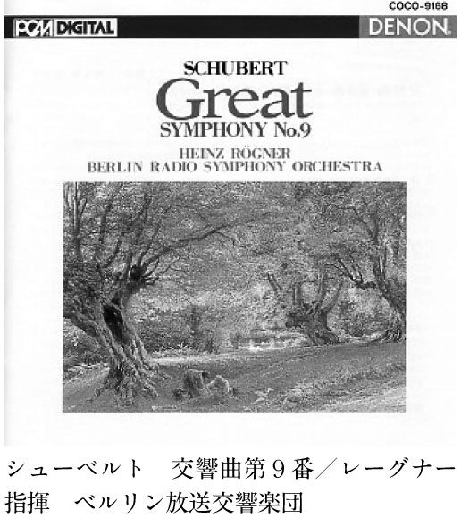

| 生きていくためのクラシック～「世界最高のクラシック」第II章～ (世界最高のクラシック2) | |
| 許 光俊 | |
| (2003) | |
『生きていくためのクラシック』
これは大上段に振りかぶった書名の本だ。
しかし、まったく大げさではない、と著者自身は思っている。
私は、昨年（二〇〇二年）『世界最高のクラシック』（光文社新書）という本を書いた。その中で、
本当の「世界最高」は、ひとりひとりの心の中にしか存在しない。万人が納得できる「最高」などありはしない。
と書いた。にもかかわらず、まさに絶対的基準がないからこそ「世界最高」をあえて問う意味があるのではないかと述べた。
けれども、ただ一点、ある重要なことについては曖昧にしたままだった。それは、
なぜ、私は「世界最高」にこだわるのか
ということだ。
日本中、世界中にさまざまな演奏が存在している。何も最高の演奏でなくたって、十分に聴く者を魅了し、感動させ、楽しませ、満足させているのではないか。あまりうるさいことを言わず、気楽に音楽に接すればいいのではないか。短所には目をつぶり、長所を見てあげればいいのではないか。
そう思う人も少なからずいるだろう。
だが、私は「最高」にこだわる。というより、「最高」にだけこだわる。「最高」のためだったら、どんなに遠くても聴きに行く。入手難のＣＤでも探す。
「最高」以外のものはどうでもよい。たとえＣＤ一枚が一〇〇円だろうと、買わない。万が一つまらないＣＤに当たってしまったら、聴くのを止める。退屈そうなコンサートなら、招待券をもらっても出かけない。出かけても、魅力に乏しい演奏ならさっさとコンサートホールを後にする。理由はきわめて明快だ。
私の生は、もう十分に退屈で、つまらないからである。平凡で、卑俗だからである。
生が何が何でも生きるに値するものとは、どうしても考えられないからである。
そんな生に、さらに退屈やつまらなさを付け加えたいとは、さらさら思わない。もともと生きるに値しないと思われる生を、さらに生きるに値しないと思いたくない。だから、「最高」にこだわるのである。この退屈で、つまらなくて、平凡で、卑俗な生を一瞬であれ輝くものにしてくれる「最高」に。
もっとも、このような思いは、地獄のような体験をした、あるいはしつつある人々からすれば、笑止千万ではあろう。志半ばで余命幾ばくもないと宣告された人からすれば、腹が立つほどの戯言であろう。文明社会の都市文化に青白く咲く、デカダンなセンチメントにすぎないであろう。とはいえ、それはそれとして、私がこのような思いを吹っ切れないのも事実なのである。翻ってこう反論することも可能ではないか。肉体的に生存することが困難でない状態にいるからこそ、「生は生きるに値しない」という思いはいっそう純粋なのだと。生存が困難な人間だけが絶対的確信をもって、生が生きるに値すると信じられるのではないのかと。
どういうわけか子供のときから、私には自分の生がひどくつまらないものに思えて仕方がなかった。だから、病気と闘うべくアフリカに渡ったシュヴァイツァーの伝記を読んで、非常な衝撃を受けた。生き甲斐や情熱や信念を持てることを羨んだ。今でも、そのような人たちを見ると（私はそのような人たちを何人か知っている）、羨望の念が抑えられない。
私が生き長らえている最大の理由は、何となく死が怖いからにすぎない。そして、生が何が何でも生きるに値するとは思えないが、死が何が何でも死ぬに値するとも思えないからにすぎない。
それゆえに、私は、そのつまらない生を、たとえ束の間ではあれ、生きるに値すると思わせてくれるもの――それはごちそうだったり、ワインだったり、釣りであったり、車であったり、梶原一騎原作のマンガだったりするのだが――を求めずにはいられないのである（もっともそういう行動原理自体が卑俗だということは重々承知している）。
かつてチェリビダッケやヴァントが指揮するものすごい演奏に遭遇したとき、私は心底、「このようなものを聴けるのだったら、生は意味がある。豊かである」と思い込むことができた。彼らの次のコンサートを聴くまでは、絶対に死ねないと思った。愚かさと悲惨に溢れた世界の中に、たとえごくわずかであろうとも、すばらしい驚異が存在すると信じることができた。私にとって、世界最高のクラシックとは、生が生きるに値すると納得させてくれるものなのだ（あるいは、快く欺いてくれるものと言ったほうが正確なのかもしれないが）。
森鷗外の『ヰタ・セクスアリス』の中に、次のような一節がある。私はこの箇所を読んだとき、あっと驚いた。自分と同じようなことを考えている人がいたんだと思った。
僕はどんな芸術品でも、自己弁護でないものは無いように思う。それは人生が自己弁護であるからである。
私も、自分自身に照らしてみて、そう思う。確かに私は生きるための自己弁護を必要としている。生きることが自己弁護することでもある。いずれにせよ、その自己弁護がたとえばクラシック音楽なのだ。
それゆえに、『世界最高のクラシック』の続編を書くに当たって、『生きていくためのクラシック』という書名にしたのだ。
とはいえ、そんな著者の思惑とは無関係に、読者には気軽に読んでいただければよい。
『世界最高のクラシック』は、初心者をいきなり銀座のすしの名店に連れて行き、うまいものをたらふく食べさせるというコンセプトだった。とりあえずおいしいものはたくさん召し上がっていただけたと思う。
今度は趣向を変えた。「同じ一品でも店によって、調理法によって、素材の原産地によって、こんなに違うよ」「同じフランス料理と言っても、店によって雰囲気も味も全然違うよ」というコンセプトである。クラシック音楽において演奏家はとてつもなく重要で、シェフのようなものだ。レシピ（＝楽譜）が同じでも、シェフ（＝演奏家）が違うと、味が全然違ってくる。それゆえ、「東西武闘派対決」「精神のバロック、官能のバロック、退廃のバロック」「岩のブルックナーと絹のブルックナー」......そんな感じで、指揮者を対照させて遊ぶというプランを立てたのである。『世界最高のクラシック』が徹底的に三ツ星演奏にこだわったとしたら、本書は当然三ツ星クラスがほとんどだが、個性的な演奏を積極的に取り込むようにした。言うなら三ツ星レストラン＋「私の好きな店」である。
同じ指揮者でもいつの演奏かで、相当大きな違いもでてくる。人間、年齢で変わるのは当たり前だ。そのあたりにも触れた。近頃のマスコミみたいに人に対して「旬」という言葉を使うのは、人間を貶めるようでとってもイヤなのだが（だって、それでは魚や野菜みたいではないか）、結果的には「旬」について述べたことになるかもしれない。
すでにこの世を去った人、引退した人、活動のピークを過ぎたと思われる人がほとんどのラインナップだ。もっと現代の演奏家を取り上げようかとも思ったが、生きている演奏家はコンサートホールで聴けばいいのではないかと考えて、もう生では聴けない人を中心に据えたのである。
なお、本書でもできる限り専門語は使わず、楽譜も引用せず、誰でもＣＤプレイヤーで確認できるよう、箇所を表すためには時間表示を用いた。
いずれにせよ、「そうか、これもおいしいけど、あっちもうまいな。他にもおいしいものがあるんじゃないの？」と思っていただければそれに勝るはない。ご愛読いただければ幸いである。
目次
ＣＤのジャケットは、再発売の際変更されることがあります。本文中のジャケット写真は、必ずしも現行のものとは限らないため、参考程度にお考え下さい。
バロック音楽と呼ばれるジャンルがある。代表的な作曲家は、バッハ、ヘンデル、ヴィヴァルディ。あるいは史上最初のオペラの大作曲家モンテヴェルディ。時代的には一六〇〇年頃から一七五〇年頃までとされている。日本史で言うなら、江戸幕府誕生から、江戸時代の中頃、徳川吉宗が改革に励んでいた時代までだ。
バロック音楽の特徴をごく簡単に記しておこう。バロック音楽がのちのチャイコフスキーやドビュッシーやマーラーといった人たちの音楽と環境的にもっとも違うところ、それは演奏が行われる場所であった。バロック時代、辻音楽師が奏でるようなものとは違う、立派な音楽が演奏される典型的な場所とは、教会か宮廷か劇場だったのである。教会や王侯貴族が音楽家を食わせていたのである。
しかし、徐々に音楽はコンサートホールへと移動した。特権階級でなくても、チケット代さえ払えれば聴けるという民主的なものになった。教会の上層部や王侯貴族ではなく、一般市民が芸術家を食わせることになった。時代の流れと歩みを合わせての変化だった。ワーグナーを支えたバイエルン王ルートヴィヒ二世のようにパトロンなるものが皆無になったわけではないが、作曲家は市民の人気を無視するわけにはいかなくなった。
では権力者であった教会や王侯貴族が養ったバロック音楽は、現代の私たちにとって縁遠いものだろうか。ところがどっこい、違うのである。バロック音楽の最大の特徴は、情緒や感情の表現を重んじるという点にある。悲しみ、怒り、喜びといった生の感情を明快に表現しているのだ。加えて、バロック趣味は劇的な表現、つまり大げさで壮大なものを好んだ。どうしたって、わかりやすい音楽になるではないか。
だから、バロック音楽は、むしろ現代以上に一九世紀において古くさいと蔑まれた。思想としての、哲学としての、個人の内面の表現としての作品こそが芸術音楽であると考える作曲家や聴衆にとって、所詮雇われ音楽家にすぎなかったバロック作曲家が書いた、しばしばワンパターンの音楽は、とてもじゃないがカビくさく感じられたのである。バッハの傑作ですら、真の人間の感情を欠いていると思われたほどだ。
翻って、一九世紀が求めたような、音楽における思弁性や精神性を重苦しいと感じる現代人にとって、瞬間の充足を求めるバロック音楽はうってつけである。だから、ここ二十年ほどで、パリ、ロンドン、アムステルダム、ブリュッセルといった町では、バロック音楽のコンサートが注目される機会が以前よりもぐっと増えた。これまでオーケストラが使っていた大きなホールでもバロック音楽が演奏されるようになった。また、バロック・オペラも人気を集めるようになった。これなど、ほんの十数年前までは一部の物好きしか興味を持っていなかったのに、今ではヴェルディやプッチーニの領分をいくらかは奪ってしまったのである。
でも、私はバロック音楽の人気が高まったことに、ちょっとばかり不安を感じているのだ。先ほど、「バロック音楽の最大の特徴は情緒や感情の表現を重んじるということ」と書いた。けれども、その表現はパターン化、様式化、類型化されているのだ。個々人による微妙な心理の違いといったことには関心が向けられない。だから、一九世紀の作曲家たちはそれに飽きたらず、自分の内面のウジウジを丹念に、「おれの場合はこうだ」と表そうとした。さまざまな書法を使って微妙な違いを出そうとした。
世界が経済（というと聞こえがいいが、要するに金儲けだ）で結ばれ、ある都市で発売された品物が瞬く間に別の町でも流行るということが起きている。グローバル・スタンダード（などというと聞こえはいいが、要するに肌の色も歴史も気候も全部無視して世界をみんな同じにしちゃえという帝国主義的な考え方だ）が唱えられ、どこの地域の人たちも、同じようにパターン化した反応を示すことが期待されている。ハリウッド産の映画を観て、世界中の人が同じように興奮したり、涙を流したり、笑ったりすることが期待されている。
パターン化された情緒表現をルールとするバロック音楽の人気が高まったのは、こんな世界情勢と並行して起きているのではないか。単なる心配性かもしれないが、そう考えると、私は、あくまで〈自分〉の微妙さにこだわった一九世紀音楽の世界に戻りたくなるのである。
さて、この章では三人の指揮者について書く。三人は出身国もドイツ、フランス、アメリカと異なる。そして、聴かせてくれる音楽が全然違う。それを、精神のバロック、官能のバロック、退廃のバロックというふうに名付けてみた。理念のバロック、感覚のバロック、気分のバロックと言い換えてもよろしい。当然、〈自分〉の微妙さを持つ人たちである。
バロック音楽の演奏家として現在世界的に活躍中の人は他にもたくさんいるが、あえて取り上げる必要は感じない。最近の人たちについては、生演奏で受ける印象と録音が非常に違うので、仮に心地よく聞こえるＣＤがあっても、素直に褒め称える気持ちにならないとだけ言っておく。
カール・リヒターは一九二六年生まれのドイツの指揮者である。バッハゆかりの町ライプツィヒで当時最高のバッハ演奏家たちの薫陶を受けたが、第二次世界大戦後は社会主義体制を嫌って、西ドイツに移った。ミュンヘン・バッハ管弦楽団・合唱団を組織してバッハを精力的に演奏し、非常な名声を得た（以下、特に記す以外はこの楽団との演奏）。一九八一年に急死し、人々を驚かせた。
もしもカール・リヒターがいなかったら、今日、日本でこれほどまでにバッハが愛好されることはなかったかもしれない。ある年齢から上の人たちは、リヒターが一九六九年に初めて来日したときの公演に異常な衝撃を受けたのである。ことに「マタイ受難曲」では、会場の聴衆は涙を流しながら音楽に聴き入っていたと伝えられている。その当時の雑誌や新聞を見ると、この公演が単なるエンターテインメントとしての音楽などではなく、人々を魂の根底から揺さぶった大事件だったことがわかる。
それまで、もちろん日本においてもバッハはよく知られていた。しかし、モーツァルトやベートーヴェンに比べれば、何か古くさい、生き生きした感情や美しさに欠けたものと考えられていた。バッハはたくさんの宗教曲を書いているが、キリスト教と無縁な人にとっては、そのあたりも親しみにくい原因だった。
が、リヒターの演奏はそうした固定観念を粉々に打ち砕くものだった。合唱は悲嘆や祈り、諦念、怒りをきわめて鮮烈に歌い出し、その激しさはイタリア・オペラもかくやと思わせるものだったのだ。「マタイ受難曲」はキリストの生涯を扱った作品ではあるけれど、特定の宗教を超えた、人間すべてに当てはまるドラマとして人々を感動させたのである。
リヒターの「マタイ受難曲」録音も最高の評価を得た。かつては雑誌などがしばしば「もし無人島に一枚だけレコードを持っていくとしたら何か」といった特集を行ったものだが、その筆頭に挙げられるのは、決まってこれだったのである。
「マタイ受難曲」はバッハの最高傑作のひとつとされている。正式には、「『マタイによる福音書』にもとづく受難曲」とでも言ったほうがいいだろう。新約聖書には四つの福音書（初期キリスト教徒たちが綴ったキリストの生涯や教え。この場合、執筆者はマタイと呼ばれる人）が含まれている。その中でも語り口が一番雄弁だとされているのが『マタイによる福音書』なのである。
受難曲とは、福音書の中から、キリスト処刑前後のテクストを抜き出し、音楽とともに歌い、語るように作られた作品である。ただし、オペラのような演技や舞台装置は必要なく、教会で演奏されるのが常だった。バッハは、当時イタリアで人気があったオペラを書かず、代わりに受難曲を作った。「ヨハネ受難曲」というのもあるが、この「マタイ受難曲」のほうが劇的な起伏を持っているので、頻繁に演奏される。およそ三時間かかるが、休みなく音楽が流れるのではなく、語りあり、ソロあり、合唱ありと、短い曲の集積である。
現在私たちがＣＤで聴くことができるリヒターの演奏は、期待に違わぬすばらしいものだ。三種類の録音が存在している。リヒターの名前を一躍世界的にした一九五八年盤、その二〇年後に再び録音した一九七九年盤、そして、一九六九年の日本ライヴ盤である。
一九五八年盤は、特に今から四〇年前の人たちにとっては、衝撃的な、否、衝撃的すぎる演奏だった。多くの人たちが、この演奏によって「マタイ受難曲」を知り、それどころか、「マタイ受難曲」、イコールこの録音ですらあったのである。
この作品は宗教曲ではあるが、厳か一辺倒ではなく、相当劇的に書かれている。にもかかわらず、リヒターは、あくまで宗教曲らしい一線を越えようとはしない。リズムの角が立っているから、楷書的で端正な美しさが出てくる。旋律がよく歌われるのに、甘ったるくならないのは、リズムが厳しいのと、フレージング（歌における息継ぎのようなもの。どこで旋律を区切っていくか）が明快だからだ。これがリヒターのバッハが峻厳と言われた理由である。まさにその峻厳さゆえに、感傷的になることもなく、仰ぎ見るような高貴な音楽が鳴り響くのだ。
歌手たちも、清潔感が強い声と歌い方だ。福音史家のエルンスト・ヘフリガーはこのパートを歌って名をなした人である。品があって一途な力に溢れた歌は模範的とも称されたが、私もそれに同意する。
その後、一九七九年にリヒターは新録音盤を制作した。だが、これは一九五八年盤のように圧倒的な評価を得ることはできなかった。旧録音によって「マタイ受難曲」を知り覚えた人々は、今考えれば、リヒターが気の毒なほど、新録音に反発した。旧録音に比べて、ロマンティックすぎる、緊張感が薄れている、リヒターは堕落した云々、という厳しい言葉が投げつけられた。
無理もない。旧録音から受けた感動があまりに強く決定的だったので、容易に他のものを受け入れられなかったのだ。また、あえて受け入れようという気持ちも起きなかったのだ。人間にはありがちな心理である。
しかしながら、この新録音はすばらしい。なるほど旧録音とは傾向がやや異なっているので、好き嫌いはあるだろうが、やはり最高度の演奏なのである。
簡単に特徴を言ってしまうなら、旧録音がデューラー（ドイツ・ルネサンス期のもっとも高名な画家）のあまりにも正確で厳しい銅版画だとするなら、新録音は暖色系の色彩を帯びた音楽なのである。旧録音が楷書なら、新録音は草書である。つまり、新録音はもっと寛大で柔和なのである。旧録音が教会で鳴り響くのにふさわしいとしたら、新録音は劇場で演奏されるのが合っている。つまり、新録音はもっと劇的な身振りが大きく、世俗的な匂いがするのである。テンポは大きく変化し、弦楽器も雄渾に、心ゆくまで歌う。オペラのようだと言ってもよい。
「マタイ受難曲」は三時間もかかる大作ということもあって、有名な割には愛聴されていないようだ。この際なので、作品に親しむコツも述べておこう。荘厳な第一曲を聴いたら、そのあとは飛ばしてしまうことだ。いきなり三枚目のＣＤまで飛ばしてよい（どのＣＤも三枚組だと思う）。そうすると、盤によって多少のずれはあれ、キリストを憎悪する群衆が「やつを十字架につけろ！」と叫ぶシーンになる。ここから先、物語は急速かつ劇的に展開していくのである。アルトが、「イエスがこんな残酷な目に遭うなんて！」と憤るすばらしい歌、合唱がイエスの屈辱に涙して悲痛きわまりなく歌うコラール（宗教的な合唱曲）と続き、いよいよイエスが息絶えるシーンにたどり着く。この一時間ほどを何度か聴けば、「マタイ受難曲」はすっかり身近になるに違いない。
イエスはとうとう死んでしまう。ソロと合唱が歌う最後から二曲目の歌詞を以下に記そう。
ソロ（バス）
主はいまや安らぎの床につかれた。
合唱
わがイエスよ、安らかに眠ってください。
ソロ（テノール）
われわれの罪により主に負わされた苦しみは終わった。
合唱
わがイエスよ、安らかに眠ってください。
ソロ（アルト）
おお、神の祝福を受けたお体よ、
見てください、私がいかに悔い悲しんでいるかを。
私の罪がこんなありさまを招いたことを嘆くのを。
合唱
わがイエスよ、安らかに眠ってください。
ソロ（ソプラノ）
私は生きている限り、あなたの苦しみに限りなく感謝します。
あなたが私の魂を救うために、自らの受難を受け入れたことを。
合唱
わがイエスよ、安らかに眠ってください。
このように、ソロ歌手と合唱が交互に歌うよう作られた曲である。しかも合唱が歌う歌詞はいつも同じだ。一見単純な構造のように見える。が、実はそうでないのである。歌詞をよく見てみると、起承転結のパターンで書かれているのがわかるのだ。イエスは死んで安らぎを得た（起。ほっとした気持ち）─→苦しみは終わった（承。さらに説明。和らいだ喜ばしい気持ち）─→私は自分の罪が引き起こした結果を嘆く（転。暗鬱な気持ち）─→生きている限りイエスの受難に感謝する（結。悲しみと喜びが溶け合わさった結末）。だから、音楽は、歌詞の起承転結に合わせてニュアンスが微妙かつ大胆に変化するように書かれている。その言葉と音楽の中には人間のために死んだイエスに対する尊敬、敬愛、ねぎらい、憤り、さまざまな感情が込められている。
リヒターはいずれの録音でも的確な演奏をしている。イエスは人間を救済するため、自ら苦難を選んで死んだ。それは一方ではたいへん残酷な死であったが、同時に新たな希望の一歩でもあった。そのあたりの複雑な状況・心理を絶妙に描き出すのだ。旧録音が祈りだとしたら、新録音は諦念の色が濃い。このあと結びの一曲が歌われて、壮大な受難のドラマは終わるのである。
全体的に新録音が旧録音よりいっそう劇的な印象を与えるのは歌手たちのせいでもある。旧録音では、清潔感が強い歌手たちが揃っていた。が、新録音はオペラでも活躍する演技派が歌を競っているのである。イエスを歌うフィッシャー=ディースカウは、声による演技という点ではイヤミなほどうまいと言われた人だし、バスのマッティ・サルミネンはワーグナー・オペラの悪役を得意とする。それに何と言っても、福音史家（一種のナレーター役だ）を歌うペーター・シュライヤーが啞然とする巧妙さを発揮している。このパートはイエス以上に重要であり、いかに指揮者やオーケストラや合唱ががんばっても、福音史家が情けないと救いようがなくなってしまう。
一九七〇・八〇年代において最高のドイツ・テノールだったシュライヤーは多彩な表情を駆使して受難のドラマを盛り上げる。たとえば、十字架上のキリストがいよいよ息絶えようとするとき、福音史家は「そのとき空は暗くなり......」と、不気味な天変地異が起きたことを報告する。そのぞっとするような弱音の技といったら。ここに限らず、強弱、硬軟を自由自在に駆使するシュライヤーの名技にはすっかり圧倒されてしまう。清潔感が強いヘフリガーとはだいぶ違う印象を与えるが、これはこれで最高の歌唱である。
一九六九年の日本ライヴ盤は、歌手の能力に凹凸がある。録音のために名歌手を揃えたわけではないのだから、仕方がないと言えば仕方がない。が、ライヴならではの緊迫感は、それを補ってあまりある。特に最後の一時間は圧倒的だ。
やはり最後から二曲目を聴いてみよう。他の二種類の演奏よりいっそう緊張感が強い。ニュアンスが豊かでいながら、新録音のように諦念に至ってしまうのではなく、切迫した祈りがある。本当の嘆きがある。やがて静かに鳴り終わり、深い沈黙が訪れる。その沈黙の中から終曲が響き出す。絶妙の間だ。音楽とは時間的体験であり、ライヴに勝るものなしと痛感させられる。
私はリヒターを生で聴いたことがない。あと二年も生きていてくれたら聴けたのに、と口惜しくてならない。うねるように歌われる最後の合唱を聴くと、残念さは強まるばかりだ。リヒターは、私が生で聴いてみたかった演奏家の筆頭に位置するのである。
そういうわけなので、リヒターが遺した三種類の「マタイ受難曲」は、厳かで端正な美しさを特徴とする一九五八年録音、生の迫力に圧倒される日本録音、さらに情感豊かな美しさを持つ一九七九年録音と、いずれもすばらしい。どれもが他にないよさを持っている。それゆえ、私はそのどれをも捨てる気にはとうていなれないのである。
今日、さまざまな音楽家が「マタイ受難曲」を演奏している。近年の風潮として、合唱団員の数を減らして、透明なハーモニーを作り出そうとする傾向が強い。そうした演奏に慣れた耳は、リヒターの演奏の合唱にはもっと感覚的な美しさを求めたくなるかもしれない。しかし、私は経験から知っている。感覚的に快い演奏がありがたいのは最初の数分だけである。すぐに飽きてしまう。内実の変化がなく、表面的な美しさがえんえんと続くだけでは、うんざりしてくるのだ。
あえて例を挙げるなら、グスタフ・レオンハルトという現代のバロック演奏の大立て者が指揮した録音がある。美しいことは美しい。最初は感心しながら聴いた。が、最後に至って激しく立腹せざるを得なかったのである。この演奏で聴くと、リヒターがあれほどまでに細心の注意で演奏し、実際、バッハがきちんと描き分けて作曲していた心理の綾がまるで表現されていないのだ。合唱が歌う「安らかに眠ってください」はのんきすぎて、拍子抜けするほどである。
それにしても、どうしてリヒターはここまで真剣深刻で生々しい「マタイ受難曲」を演奏したのか。興味深い偶然がある。リヒターが生まれたのと同じ一九二六年、ある本が出版された。
ルドルフ・ブルトマン著『イエス』。二〇世紀の宗教書の中でも、おそらくもっとも重要な本のひとつ。
二〇世紀、科学が猛烈に発展したため、キリスト教（否、あらゆる宗教と言ってもよいだろうが）は危機に瀕した。単に聖書に書いてあることを信じろと言っても、なかなか信じられない状態になったのである。処女懐胎、楽園追放、復活、数々の奇跡......。まともな人間なら、作り話じゃないかと疑って当然だ。
しかも、イエスの時代のユダヤ地域や、聖書の成立過程を研究している人たちが、重大な発見をした。どうも聖書が書かれたのと同じ時代、他にもたくさん新興宗教があったらしい。そうした新興宗教の教えの中には、聖書と同様の奇跡の話が出てくる。つまり、信者を増やすために有効な手段として奇跡話を利用するというのが当時の流行だったのではないか......。歴史研究や科学の目で見たとき、それまで絶対的とされてきた信仰の土台は崩れていったのである。
これに強く抗ったのが、ブルトマンだった。大事なのは、イエス、あるいは聖書と自分がどう関わるかだと彼は主張した。結局のところ、事実がどうであろうと、われわれの前にあるのはイエスの言葉（とされているもの）だけである。その言葉はわれわれに語りかけてくる。「新しく人間の状況の中にはいりこんでくる言葉によって、人間は決断の前に立たされるのであり、それによって言葉は出来事となるのである」（川端純四郎ほか訳）。
出来事とは、われわれが本当にイエスを見たとか、奇跡を体験したということではない（それだけに限らない）。自分が持っていなかった言葉が、外からやって来る（この場合は、聖書を読んで出会う）。われわれはそれについて、肯定しようが、否定しようが、無視しようが、ともかく決断を下さねばならない。その点において言葉はわれわれにとって出来事となる。そして、言葉が真実になるかどうかは、われわれ次第だ。
非常に熱っぽい論調だ。それも当然、ブルトマンは、実存哲学で有名な哲学者マルティン・ハイデガーの同僚であり、友人だった。つまり、ブルトマンは、実存哲学的に信仰を考えられないかと模索したのだ。歴史的事実は固定的なものではない。それを見る自分も歴史の中にいる。歴史について語ることは自分について語ることでもある。だから、聖書を読むということは、聖書と対話することでもあれば、自分と対話することでもある。そのことで新たな可能性、未来が開けることである。そう考えた。
リヒターがこういった考えに影響されたのかどうかはわからない。だが、確実なのは、リヒター（演奏者）にとって、「マタイ受難曲」（作品）は、所詮外部にあるものだということ。他人が作ったものだということ。だが、それと遭遇した以上、何らかの決断を下さねばならない。「マタイ受難曲」（作品）が真実となり得るかどうかは、ひとえにリヒター（演奏者）次第なのだ。そして実際、「マタイ受難曲」はリヒターにとって真実になり得たのだと私は思う。だからこそ、私たちに大きな感銘を与えるのである。
リヒターはそれ以外にも膨大な量のバッハの作品を録音している。
「マタイ受難曲」と並んでバッハの大傑作とされている「ロ短調ミサ」は、同様に非常に緊張度の高い激しい演奏である。これも通常の録音（一九六一年）と来日ライヴ盤（一九六九年）がある。どちらもこれ以上はないという力のこもった始まりである。後者には独特の緊迫感があり、表現はさらに大胆になっている。
「管弦楽組曲」はかねてから立派な演奏として名声を欲しいままにしてきたものだが、今聴いてもたいへんなものだ。特に第三番である。私は次項のパイヤールのページで、「もしもヴェルサイユ宮殿にふさわしい演奏があるとしたらパイヤールがふさわしい」というようなことを書いた。あちらがいわば感覚的な快楽を追求した演奏だとするなら、リヒターは精神的なそれだ。最初の音からして気合いの入った密度の高い響きがする。張りつめた緊張感をもって前進していく音楽は清冽な美しさに溢れている。
が、その美しさは感覚的に心地よいという刺激のレベルを超えて、もっと何か別の次元に向かっているように思われる。七分三〇秒のところで、弦楽器と打楽器が、ブルックナーやワーグナーもかくや、という凄まじくドラマティックな身振りを示す。まるでフルトヴェングラーのようだ。ここは初めて聴く人を瞠目させるのではないか。いったいこの「管弦楽組曲」を演奏して聴き手を圧倒しつくした指揮者が他にいただろうか。この序曲における高揚感を聴いていると、バッハがそもそも何のためにこの作品を書いたのかとか、どういう場で演奏されたのかといったことはどうでもよくなってくる。ただただ音楽に集中して燃え上がっている精神の強靭さに頭が下がる。私はパイヤールを聴くと、何と美しいのだろうと幸せな気持ちになるが、リヒターを聴くと、崇高さに打たれて厳粛な気持ちになる。
二曲目のエア（「Ｇ線上のアリア」の原曲）は、清浄感が強い。妙に感傷的になることもなく、序曲の厳粛さを引き継いでいる。以後は、ガヴォット、ブレー、ジーグと舞曲が続くが、リヒターの演奏はどれも本来の舞曲から遠い、まるでブルックナーのスケルツォのような音楽だ。もはや踊りのための音楽でも何でもない。リズムは容赦なく、ファナティックですらある。
最後のジーグは、これもまた鮮烈きわまりない一撃で開始される。いったい、もともとは踊りから生まれた音楽が芸術音楽として洗練され（芸術音楽という概念自体はきわめて近代的なもので、必ずしもバッハの時代の音楽観とは一致しないが、それはさておく）、恐るべき表現にまで鍛え上げられたのだ。
こうして聴いてみると、「管弦楽組曲第三番」があたかも交響曲であるかのように見えてくる。荘重な序曲、ゆっくりした緩衝であるエア、そして最後の盛り上がりを見せるジーグという具合だ。曲頭から曲尾まで一瞬たりとも気が抜けない。これがリヒターとしても異例の超名演であることは、たとえば「管弦楽組曲第四番」と比較すれば、あまりにも明らかだ。むろん、「第四番」にしたところでつまらない演奏では決してない。が、ふしのひとつひとつに込められた力が段違いなのである。「第三番」のほうは、はち切れるギリギリまで膨れあがっている。
「第一番」はあまり有名ではないけれども、リヒターで聴くと異様な美しさに輝く。序曲は壮麗でありながら、不思議な悲しみを湛えている。精一杯歌われる第四曲「フォルラーヌ」も忘れがたい。
「第二番」も当然すばらしい。本来は、ソロのフルートが活躍する華麗な曲だが、リヒターだと、華やかさはまるでない。ひたすら一直線にド真面目だ。
リヒターは有名な協奏曲を演奏しても、いっさい遊びの気配がない。バロック音楽に限らず協奏曲においては、独奏者の技量や表現力が大きな聴きどころである。その独奏と全体の対比も明快である必要がある。ところが、リヒターの場合、独奏もそれ以外も一丸となって突き進むのだ。
たとえば「二台のチェンバロのための協奏曲第一番」だ。はじまり方の激烈さには驚かされる。その力み方は凶暴とすら言いたいほどで、最初聴いたときには、いったい何がはじまったのかと目が点になったほどだ。この爆発的な力は、まるでベートーヴェンの「運命」の頭のようですらある。
「二つのヴァイオリンのための協奏曲ニ短調」もリヒターならではの、一か所に視線を定めたまま突き進んでいくような演奏だ。そもそもヴァイオリンはバロック時代に大いに栄えた楽器である。華やかでありながら繊細な表現力が作曲家たちを魅了し、創作意欲を刺激した。ヴィヴァルディの「四季」とかコレルリのさまざまな作品が作られたのも、そうした状況が背景にある。が、リヒターの場合、ヴァイオリンの表現力を際立たせようという考えなどかけらもありはしないだろう。独奏楽器も他の演奏家たちとともにひたすら音楽に打ち込んでいく。
いったいこのような演奏が「正しい」のか、と問われれば、たぶん違うと答えるしかない。バッハの時代を研究し、当時の演奏習慣などを考慮すれば、この演奏はあまりにリヒター流ということになるに違いない。しかし、まさにそれゆえに、リヒターの演奏は聴かれ続けてきたのだし、人々を感動させたのである。演奏家が自分の真実を声高く主張したからこそ、人々は演奏の中に噓ではない生命の力強さを感じとることができたのである。
今回あらためてリヒターの多数の録音を聴き直してみて、呆れるほど似通った印象を与えられた。彼もまた強固な個性を持ち、何を演奏しても自分流になってしまうという人なのである。このような音楽が古めかしいとされ、愚にもつかない、往々にして差異のための差異のみを求めた最新演奏がもてはやされているとしたら、私はそれを躊躇なく趣味の堕落、審美眼の退廃と呼ぶ。
私はリヒターの演奏の中に、梶原一騎の劇画世界と通底する何かを感じずにはおられない。『巨人の星』でも『あしたのジョー』でも、主人公はひたすら目標に打ち込み、ボロボロになって消耗し尽くす。最後は？ ハッピーエンドなどありはしない。ただ、限界まで力を出し切った挙げ句、倒れるだけなのである。リヒターが五〇歳くらいまで異常な集中力と緊張度を発揮した演奏を行い、あっけなく死んでしまったのは、まるで星飛雄馬や矢吹ジョーのようではないか。私は根が怠惰でいいかげんな性格のせいか、リヒターのような一徹な音楽に触れると、手放しで賛嘆せずにはいられないのである。
リヒターはオルガニスト、チェンバリストとしても活動していた。ここでは東京カテドラルでの演奏会の実況盤について若干述べておこう。
パイプオルガンという楽器の魅力は、やはり巨大な教会という空間が鳴り響くところにある。クラシック音楽に積極的な興味を持っていない人でも、ヨーロッパに観光旅行で出かけた際、パイプオルガン独特の響きを体験して感銘を受けたという人は多い。ただ、ヨーロッパではありきたりのパイプオルガンも、当然と言えば当然だが、日本においてはなかなか楽しめる機会が少ない。新しく建てられるコンサートホールはおおむね立派なパイプオルガンを備えているけれど、教会で聴くのとは比べものにならないのである。最近の日本のコンサートホールはよく響くとはいっても、せいぜい二秒程度の残響であり、教会とは音響特性が違いすぎる。
残念ながら、パイプオルガンのＣＤの多くは、教会で録音が行われているにもかかわらず、雄大かつ神秘的な音響ではわれわれを酔わせてはくれない。音の明晰さを重んじるあまり、マイクをオルガンに近づけすぎるせいで、空間性が乏しくなってしまうのだ。
リヒターが一九七九年に東京で行った演奏会のライヴ録音は、その点で貴重である。大胆に音色を変えながらさまざまな曲を弾いていく様子が、会場の空気ともども味わえる。プログラムはオール・バッハで、いわゆる有名曲、人気曲は含まれていないけれども、オルガンの魅力を味わうには格好の盤である。
リヒターはバッハ以外の作曲家も演奏していたが、なにぶん、録音はほとんどない（今後ライヴ録音が登場するようだ）。貴重な例外として、ヘンデル「メサイア」について触れておこう。この曲では、なじみのミュンヘン・バッハ管弦楽団を指揮したものと、ロンドン・フィルハーモニック管弦楽団を指揮したもの、二種類の録音がある。前者はドイツ語盤で、後者は英語盤だ（こちらがオリジナル）。どうせなら珍しい組み合わせの後者を聴いてみよう。
オーケストラが変わっても、響きがやや明るくなったほかは、リヒターの音楽には見事なまでに何の変化もない。きっちりと刻まれるリズム、激しい情念をほとばしらせる強音、生き生きとした躍動感。イギリスの楽団なのに、ドイツのオーケストラのような音楽になっている。
でも、ソロの歌手たちがオペラで活躍する人たちだけに、開放感がある。合唱が加わるとさらに華やかさが増す。楽しい聴きものだ。
一九二八年生まれのジャン=フランソワ・パイヤールは、一九八〇年代前半くらいまで、バロック音楽の代表的な演奏家として名声を博してきた。
パイヤールの名を日本でも一躍有名にしたのは、パッヘルベル「カノン」の演奏だ。これはＢＧＭとして日本中のありとあらゆる放送、店舗など、さまざまな場所で流され、おそらくある年代以上の人なら、たとえクラシック・ファンでなくても、またパイヤールの名前を知らなくても、この演奏に聞き覚えがある可能性は高い。
その後、作曲家が生きていた時代の演奏方法にこだわる傾向が世界的に強まるなか（次のクリスティの項参照）、パイヤールの人気は次第に下降し、現代では時代遅れと見なされているのではなかろうか。いや、それどころか、そもそも存在自体がまるで問題にならなくなったというほうが正確だろう。
しかしながら、私は本書であえてパイヤールのためにページを割きたいと思うのである。以下に述べるように、彼の音楽は決してやすやすと忘れ去られてよいような代物ではないのである。
なお、以下、すべて演奏団体はパイヤール室内管弦楽団で、有名曲に関しては複数回録音しているので、録音年代を記してある。
パイヤールがパッヘルベル「カノン」によって世界的に有名になったのは偶然ではない。パイヤールの音楽は、簡単に言ってしまえば、精神ではなく感覚のための音楽であり、快い響きと流れに最大の長所があるからだ。彼の演奏だと、「カノン」は処女のような感傷性を漂わせつつ、快適に流れ続ける。しかもその快適さはいかにも努力して作ったという痕跡がなく、ふかふかで座り心地のよいソファのように、あくまで何気ないのである。たとえ高級であってもむやみに気どらず、お客を緊張させないホテルやレストランにもたとえられよう。一九六八年にパリで収録された演奏は、考えてみればあの五月革命などがあって騒然とした時代にもかかわらず、きな臭い匂いなどまるでせず、完結した美を全うしている。すでに通俗的と言ってよいほど有名な演奏だが、今もって感嘆に値する。
パイヤール室内管弦楽団の弦楽器が美しく高級感をもって聞こえる秘密は、レガートにある。レガートとは、音を滑らかにつなぐことで、当然あらゆる音楽家がマスターしていなければならない基本的な技術である。しかし、やはり人によってやたらとうまい人と、並の人がいるのは事実。器楽奏者でも、歌手でも、レガートがうまい人はそれだけでだいぶ得だ。
だが、レガートには弱点もある。あらゆる音を滑らかにつなぐと、音楽にメリハリがなくなる。切れ味がなくなる。レガートが得意な人は、えてして不必要に音をつないでしまうことが少なくない。パイヤールの場合、このレガートゆえに、音楽は耽美的な趣を帯びる。が、どうしてもリヒターのような厳しさ、あるいは他の誰かのようなキビキビした感じは後退することになる。
「カノン」は、パイヤール流が最大の効果を上げた例である。
それに先立つ一九六〇年に録音されたアルビノーニ「アダージョ」は、かつて頻繁に使われた言葉を用いるなら、ムード音楽と呼びたくなるような演奏だ。本書で取り上げたスヴェトラーノフ、あるいはケーゲルなどの同曲の演奏と比べるまでもなく、軟弱な美しさで一貫している。ここまで軟弱であり得れば、立派な音楽的個性であり、これはこれでよいと思う。しかしまあ、何が何でも挙げねばならないというほどの演奏ではない。
同じムード音楽調なら、バッハの「ラルゴ」（チェンバロ協奏曲第五番から）がいい。チェンバロが実にきれいに歌っているのだ。それを支える伴奏も淡いパステル調で、まことに優しい。
おそらく、パイヤールという人にはサービス精神が少なからずあるのだ。だから、有名な小曲を演奏すると、聴き手におもねる気配が出てくる。だとすれば、かえってある程度大きな曲から聴いたほうがよいのかもしれない。そういえば、この人、「日本のメロディ」みたいなアルバムも作っていたっけ......。
もしもあの絢爛豪華たるヴェルサイユ宮殿にもっともふさわしい音楽をひとつ選べと言われたら、私なら躊躇なくパイヤール指揮のバッハ「管弦楽組曲」を挙げる。ことに第一、三番の序曲だ。これらはいずれもフランス風序曲といって、付点リズムを用いている曲だ。これをパイヤールは実に豪奢に演奏しているのである。音色は明るい。といっても、ギラギラした刺激的な明るさではなく、あくまで柔らかさを保った、フランスならではの明るさである。しかも、音のひとつひとつをたっぷりと伸ばしているので、現代のバロック演奏に比べて、豊満な印象になる。ルノワールが描くところの裸婦とでも言えばおわかりいただけようか。
この録音は今からもう四〇年も前、すなわちパイヤールが三十代半ばの演奏である。が、慌てず、騒がず、何の焦りも危なげもないのである。老熟とは違うが、決して未熟ではない。あたかも、子供のときから礼儀作法をきっちりと仕込まれた、きわめて育ちのよい青年のスマートな振舞を見ているかのようだ。なるほど、現代風の細部まで気を遣い、作為を弄した演奏に慣れた耳には、いささか工夫がなさすぎるように感じられる瞬間がまったくないわけではない。が、品のよいおおらかさは、パイヤールの大きな魅力である。
なかでも第三番は、特に潑剌とした生気に富み、豪奢に加えて適度な豪放の味も備えているのがいい。序曲に続く「エア」もたいへん美しい。さながら口に含むとたちまち溶け消える絶妙なアイスクリームのような、贅沢さとはかなさの味わいである。あとで本書で取り上げるスヴェトラーノフによる同曲の演奏が、驚くほど哀しげな情緒にはち切れんばかりなのに比べれば、このパイヤールはまことにもって感覚的である。ヴァイオリンの甘い歌は、艶やかな愛の囁きのようですらある。時折差す影は、官能の悲しみか。スヴェトラーノフだとまるで告別式のための音楽のように聞こえる「エア」が、パイヤールだとベッドの中で愛人と聴くのにちょうどよいという感じだ。
演奏によって、これほどまでに印象が変わってしまうのだから、クラシック音楽はおもしろい。こういう音楽を聴くと、結局、美しさの感覚、好ましさの感覚を自分の中にどれだけ持っているかが、芸術においては決定的だと考えざるを得ない。いくら機械的な技術を持っていても、これが美しいのだという心からの納得なしに、見事な音楽は奏でようがないのである。私が日本のオーケストラや演奏家の音楽をしばしば貧寒としか感じないのは、自分ならではの美しさの感覚ないし信念が欠如しているからである。
第二番は、あのカール・リヒターの何かに憑かれたような緊張と白熱に比べれば、醒めている。それが、リヒターにはない雅な味わいを与える。第一番の第四曲「フォルラーヌ」など、優雅な貴婦人の流れるような動きのようだし、第五曲「メヌエット」では踊りに興じる宮廷人の足さばきが目に浮かぶようだ。
この録音は一九六二年に行われている。リヒターが「管弦楽組曲」を録音したのは、一九六一年だった。完全に同時期に、あまりにも対照的なバッハ演奏がフランスとドイツで記録されたのである。あるときはパイヤールのエレガントな美しさを楽しみ、あるときはリヒターの真剣勝負に圧倒されるという体験ができる私たちは、大いに幸せと言うしかないだろう。
バッハでは、「音楽のささげもの」（一九七四年）もすばらしい。これは日本のレコード会社が制作したもので、パリ近郊の教会で録音されている。教会ならではの豊かな残響も適切に取り入れた録音が、いっそう弦楽器群の響きをまろやかにしている。「管弦楽組曲」のほうは、いかにも晴れやかな明るい音楽だったけれども、こちらはバッハ晩年の作品とあって、ぐっと落ち着いている。
「王の主題による各種のカノン」では、全盛期のパイヤール室内管弦楽団の弦楽器が実に快い。端正だが、おとなしすぎず、切れがあり、かと思えば滑るような闊達さを示す。その流れの妙と言ったら、耳のごちそうと呼ぶしかない。これを聴くと、リヒターが四角四面に思えてしまうほどだ。
そして何と言っても最後に置かれた「六声のリチェルカーレ」が圧巻。パイヤールはこれを弦楽合奏で演奏している。対位法の技巧を駆使した音楽だが、それでいて大河のように悠々と流れていく。基本的によく抑制されているのに、ときとして熱を帯びた表情が浮き上がってくることもある。ひとつひとつの楽器が見事に溶け合い、波の満ち干のように寄せては返す様子を聴いていると、すっかり陶然としてしまう。決して大がかりなクライマックスを築き上げるような演奏ではない。が、間違いなくカタルシスに到達する。瞑想と感覚の妙なる調和とでも言おうか。この章を書くために、何回聴いたかわからないほどだ。晩年のバッハは本当にすごい。こんな悠久のような流れのような音楽は、西洋音楽史上、めったやたらにあるものではないのである。わずか七分弱ではあるが、パイヤールの演奏で聴いていると、何か永遠の幻影を目撃したかのような気がしてくる。
試みに最近の演奏、たとえばジョルディ・サヴァル指揮のものと比べてみるがいい。サヴァルの演奏は決してまずくないし、それどころかこの人は現代のバロック演奏家の中ではひときわ繊細な感性を持った演奏家である。パイヤールのあとで聴くと、さまざまな細部への配慮に感心させられる。しかしながら、同時にそれが所詮枝葉末節の問題にすぎぬことを思い知らされもする。細やかさが、落ち着かなさを感じさせてしまうのである。こういったものを、たとえばやたら情報量は多いけれど、全体を見渡す視点の欠如した報告書とたとえたら不適切であろうか。
なお、パイヤールは一九八〇年代に「音楽のささげもの」を再録音している。悪い演奏ではない。ただ、残念ながら、一九七四年の演奏の領域にまでは達していないのだ。
バッハにはもうひとつ、最晩年の大作「フーガの技法」という作品がある。フーガ（対位法）という、バッハが限界をきわめたテクニックの展示会のような音楽だ。しかし、演奏にはいろいろ解決しなければならない問題がある。バッハはこの作品を完成することなく世を去ったうえ、どんな楽器を使って演奏したらよいのか、はっきりしないからだ。
そこでさまざまな演奏家たちが可能性を探ってきた。パイヤールは弦楽器と木管楽器を使って色彩感豊かな演奏をしている。それぞれの楽器が、あるときは溶け合い、あるときは相対し、滔々と流れていく。「マタイ受難曲」、「ゴルトベルク変奏曲」が好例だが、バッハの大作をよい演奏で聴いていると、音楽が永遠に続くかのような気がしてくる。この作品、演奏もまた同様である。それだけに最後、突然、音楽が途切れるのはショッキングだ。バッハがそこまで書いて死んだという箇所である。多くの演奏家は、ここで演奏を止める。しかし、パイヤールは、そのあとバッハの別の作品、コラール「汝の御前に、我は進まん」を奏する。「汝」とはもちろん神のことだ。死んで、神のふところに戻るということだ。おかげで、心安らかに聴き終えることができる。
バロック音楽の代名詞のようにもなっているヴィヴァルディ「四季」（一九七六年）は、期待通り、玲瓏（玉などが触れあって美しい音を立てる様子）たる演奏だ。独奏ヴァイオリンはジェラール・ジャリという人で、シックな美しさを持っている。「四季」は人気曲だけあって、最近でも多くのＣＤが作られており、バロック音楽の感情性や描写性を強調したきつい演奏が増えている。また、個性派を競う傾向も強く、多くの有名ヴァイオリニストたちが妙技を披露している。しかし、パイヤールはあくまで爽やかで、力みがない。実は私はこの超有名曲が相当好きで、いつも大きな関心をもって新しい演奏を聴くのだが、一九七六年に録音されたこの盤は今もって世界最高クラスの「四季」だと思う。リズムは軽く、といっても軽薄ではない軽やかさで跳ね、各楽器がいいバランスで鳴る。神経質すぎ、考えすぎ、いじりすぎということもなく、ごく当たり前にきれいな演奏なのだ。
特に「春」が絶品中の絶品である。第一楽章の音量を抑えた響きは悩ましいまでに美しい。パイヤールの常としてメロディーを歌うときの切り方が明快で、ちょうど句読点のはっきりしたリズミカルな文章を読むのと同様の気持ちよさがある。第三楽章の弦楽器の絡み合いはエロティックとしか言いようがなく、恍惚とさせられてしまう。
「冬」第二楽章の独奏ヴァイオリンの艶やかな美しさ、それを支える伴奏のピチカート（弦を指で弾いて音を出すこと）の色っぽさの絶妙の組み合わせは、まさに音の快楽であろう。漂う贅沢な雰囲気に、パリの最高級ホテルのロビーで鳴るにふさわしい「四季」としてこれ以上のものは考えられないと思ってしまうのである。そして、まさしくこの豊かで、美しくて、滑らかで、贅沢な演奏に対し、アーノンクールは、「そんなものは本当のバロック音楽じゃない！」と嚙みつき、一躍、ある種の悪者として名を馳せたのである。だが、本当のバロック音楽だろうがそうでなかろうが、私にはどうでもよい。このパイヤールの美しさに喜んで降参したいのである。
最後に、フランス・バロック音楽も紹介しておこう。バッハもヴィヴァルディも見事だったが、やはりパイヤールにはフランス音楽がもっともしっくりくるのではないか、彼の演奏を聴いた人なら誰もが思うはず。幸いなことに、本書執筆中に、パイヤールのＣＤが何枚も再発売されることがアナウンスされた。
そのうちのひとつ、リュリ「テ・デウム」「怒りの日」は期待を十分に満足させてくれる。ジャン=バティスト・リュリ（一六三二・八七）は、もともとフィレンツェ生まれであるが、フランス音楽界の重鎮にまで出世し、フランス・バロック音楽を確立した人だ。この二曲も実に華麗な、宮廷にふさわしい音楽である。華麗と言っても、テレビなどで安っぽく使われる華麗ではない。近寄りがたいほどの高貴な光を放っている。
本来「怒りの日」は、死んだのち地獄に堕ちたりしないよう、神に祈る音楽である。真剣に考えれば考えるほど、深刻になってしまう内容のはずだ。だが、リュリが書くと、全然深刻ではない。常に眩しい光が降り注いでいるようだ。やや悲しげな雰囲気もせいぜい明るい木陰程度でしかない。
他方、「テ・デウム」は、リュリが太陽王ルイ一四世のご機嫌をとるために書いた曲だ。当然、あくまで晴れがましく、景気がよい。が、この曲には何とも皮肉なエピソードがある。リュリはこの曲を指揮している最中に、指揮杖で誤って自分の足を突いてしまい（当時は指揮棒ではなく、指揮杖を使ったらしい）、そこからバイ菌が入ってしまったのだ。哀れ、リュリは二か月も苦しんだあげく死んでしまった。ちなみに、「テ・デウム」は「神であるあなたを私たちは褒め称える」と歌い出される一種の賛歌だ。どうやら神様はリュリの賛歌がお気に召さなかったらしいのである。
さて、最後に「えっ？」というような録音を一点挙げておこう。ヘンデル「王宮の花火の音楽」（一九六二年）だ。これはもともと野外の花火大会のために書かれた作品だから、大きな音量でにぎやかに演奏されるのが当然と言えば当然。だがそれにしても、いったいどうしたのかとわれわれを仰天させるような騒がしい演奏なのである。第一曲から金管楽器がこれでもかと叫び、太鼓は力いっぱい打ち込まれる。あの「音楽のささげもの」でノーブルの極致をゆく音楽を聴かせてくれたパイヤールだけに、乱心したのかと心配になってくる。第四曲の太鼓も異常な陽気さで耳を疑ってしまう。好意的に解釈すれば、作品の性質を鑑みて、大いに遊び心を発揮させたのだということになろうか。名前を伏せて聴かせたら、誰もパイヤールと当てることはできまい。
この演奏の快活さは、レナード・バーンスタインがときとして見せた躁状態と同様、何かしら常軌を逸した気配がある。もしやパイヤールも、多くの芸術家がそうであるように躁鬱の気配があるのだろうか。仮に、私がパイヤールの他の演奏を知らなかったら、これを「もっともこの作品らしい演奏」と躊躇なく書けるところなのだが......。
ウィリアム・クリスティは一九四四年、アメリカに生まれた指揮者である。
今日、古楽とかピリオド楽器演奏と呼ばれている演奏法がある。簡単に言えば、バッハやモーツァルトの時代の楽器は現代とはいささか異なっていたし、奏法も違っていた。だから、彼らの作品を演奏するには、当時の楽器を当時の奏法で用いるべきである。また、当時、いちいち楽譜に書かなくても音楽家なら誰でも知っている常識や習慣というものがあった。しかし、時代を経てそうした常識・習慣はいつの間にか消えてしまった。現代のわれわれが演奏するときも、当時の常識・習慣に留意すべきである。このような立場で行われるのが古楽、あるいはピリオド楽器演奏と称されるものである。
このような演奏法がどんどん盛んになってきたのは、一九八〇年前後あたりからだった。それまでにもさまざまな試みはなされていたが、あくまで一部の人たちによるものだったし、ごく普通の聴衆はそんな演奏に大した興味も示さなかった。博物館的、古くさい、わざとらしいと否定されることも多かった。
だが、こうした演奏傾向は徐々に強まり、現代では誰も無視できないほどになっている。どうして一九八〇年代になって風向きが変わったのか？ それは、一九世紀生まれの、つまりベートーヴェンやワーグナーの世紀の空気を吸って育った音楽家たちが次々に死んでいったからだ。カリスマ性満点の超個性派演奏家が減ったからだ。たとえ「それはちょっとベートーヴェンとは違うんじゃないか、楽譜に書いていないことをやっているじゃないか」と疑問がなくはなくても、すごい音楽として許せてしまう、それがかつての偉大な演奏家であった。それゆえ聴衆は、細かい演奏法など気にしなかった。よいものはよい、といたって大らかだったのである。
ところが、音楽教育や情報網が発達した。演奏が創造であると同時に、科学であることが求められるようになった。主観的真実よりも、客観的事実のほうが偉いという風潮になった。結果として、音楽家がみな似かよってきてしまった。いわば、自由奔放に育った天才の代わりに、効率よく育てられた秀才ばかりが増殖しているのである。
それではつまらない。『世界最高のクラシック』で紹介しておいたニコラウス・アーノンクールやフランス・ブリュッヘンが音楽界に大きな衝撃を与え、メジャーになれたのは、彼らが歴史的に見て正しい演奏を心がけたからではない。彼らの音楽が、同時代の誰よりもユニークに響いたからである。慣習に叛旗を翻して斬新な演奏を行う心意気が強く感じられたからである。他と違うというだけでなく、人の心を引きつける、芸術家として大事な何かが彼らにはあった。
ところが、彼らが成功したため、若い音楽家が大勢、アーノンクールやブリュッヘンを見習って、古楽を勉強し、似たような演奏をするようになってしまった。現在、はっきり言って、状況はあまりよくない。まるで狭い水槽にたくさんの金魚を入れてしまったようなものだ。ちっぽけな連中がせわしく動き回り、あっぷあっぷしている。聴衆はそうバカではない。日本では、古楽の方法論を採用する演奏家のＣＤはメーカーが期待するほど売れないし、コンサートもガラガラだ。
さて、クリスティもまた、一九八〇年代に急速に名前が知られた人である。といっても、彼の重要なレパートリーはバッハやヴィヴァルディではなく、フランスのバロック音楽である。具体的には、マルク=アントワーヌ・シャルパンティエ（一六四三・一七〇四）とジャン=フィリップ・ラモー（一六八三・一七六四）が、レパートリーの二本の柱と言ってよいだろう。ときたま、商売のためなのかどうか、モーツァルトあたりを演奏したりもするが、あくまでオマケだ。そんな偏ったレパートリーゆえ、クリスティは名前こそ知られているものの、日本において決して人気が高い音楽家ではない。
しかし、クリスティは、アーノンクールやブリュッヘンと同じように、確固たる自分の音楽を持っている人である。個性がはっきりしているからこそ、バロック音楽を得意とする人なら誰でも営業上の理由から演奏してしまいがちなバッハやヴィヴァルディを回避しているのである。
クリスティの代表作はズバリ、シャルパンティエ「花咲ける芸術（レ・ザール・フロリサン）」だ。何しろクリスティは、自分が結成したグループをレ・ザール・フロリサンと名付けているほどなのである。
シャルパンティエは、これこそフランスの宮廷音楽という雅な音楽を書いた。バッハやヘンデルの壮大さとは全然違っている。しゃれていて、柔らかで、遊戯性があって......という衣食住がとっくに満ち足りた高貴な人たちのための作品である。「花咲ける芸術」は、「音楽のための牧歌」という副題が付いた一種の音楽劇で、演奏時間は四〇分ほどである。内容はたわいもない。が、音楽はこれを優雅と呼ばずして何とする美しさだ。
クリスティは、バロックを演奏する他の誰よりも奥ゆかしい音楽を奏でる。音の動きのいちいちに何とも言えない風情がある。変なたとえだが、下々の生活をしてきた少年が、あるとき高貴なレディを見て振る舞いの優雅さにびっくりし、目が離せなくなってしまって、無礼と知りつつもジロジロ見続けてしまう、そんな経験を、私は初めてこの演奏を聴いたときにした。ことに序曲と終曲は夢のはじまりと終わりを告げるかのようで、幻のように美しい。この録音がクリスティとレ・ザール・フロリサンの名を一躍高めたのもあまりにも当然と言えよう。
「花咲ける芸術」に限らず、クリスティの一九八〇年代の録音の多くには、アニェス・メロンという女性歌手が出演している。これが一瞬少年かと見まがうような美声で、陶然とさせてくれる。もしも天使の歌声というものがあるのなら、彼女の声以外にはあり得ないとまで思わせる。清浄と官能をない交ぜにしたような妖しさがある。
シャルパンティエでは「クリスマス・オラトリオ」もよい。その名の通り、宗教音楽である。それも本来喜ばしいはずの、救世主の誕生を祝うクリスマスのための音楽である。だのに、シャルパンティエが書いたのは不思議な悲しみをにじませた音楽であった。「花咲ける芸術」よりもいっそう陰影が濃い。こちらもたまらなく美しい演奏だ。
なお、クリスティの演奏は、八〇年代のほうが、近年よりも技術的には落ちるが、味わいは深かったように思われる。九〇年代以後はもっと直線的な音楽の運びになってきた。愛撫するようなエロティックな趣や、息づかいの悩ましさや、いかにもはかない喜びといった情趣はやや薄らいでしまったようだ。
ラモーは、シャルパンティエよりも陽性の作曲家である。当時のフランス音楽界の大物であり、影響力を発揮していた。シャルパンティエの音楽は、何か優男が涙ぐんでいるような雰囲気があるが、ラモーはもっとダイナミックだ。
ラモーがもっとも得意としたジャンルは「オペラ・バレエ」と呼ばれる分野である。オペラでは普通歌が最大の聴きどころである。が、視覚芸術を愛するフランス人は、オペラの中にも長大なバレエシーンを入れたがり、フランス独自の「オペラ・バレエ」という形式まで作り上げたのである。ラモーのオペラ・バレエにおいても、バレエ・シーンが重要だ。
クリスティのラモーの演奏では「エベの祝祭」が最高に愉快である。特にバレエの音楽は、バロック音楽にもラモーにもクリスティにも何の知識も持っていなくても、音だけ聴いて間違いなく満足できるすばらしさだ。にぎにぎしい音楽を上機嫌に演奏している。まさに祝祭にふさわしい生きのよさだ。といっても、愉快のあまり下品にならず、あくまで品のよい遊び心を示す。活発な音楽のあと思いがけず憂愁の影がさっと通り過ぎるあたり、他のバロック演奏家の到底及ばないところで、私などは、「これだからクリスティでなければ」と膝を打ちたくなるのである。何はともあれ、これを聴くと、どうしてパリではクリスティが指揮するラモーのオペラがいつも売り切れるのか、容易に理解できるのである。先ほど、クリスティは九〇年代以後、音楽がやや変化したと書いたが、ラモーには直線的な音楽の躍動が似合っている。
幸い、一種の宣伝を兼ねてだろうが、「エベの祝祭」や同じラモーの「イポリトとアリシ」他のバレエ音楽集が安い値段で発売された。シャルパンティエのさわりも入っている。未知の作品のＣＤに高い金を払うのは躊躇する人でも、これなら気軽に聴ける。
クリスティは来日公演もすばらしかったし、パリで見たラモーのオペラ「優雅なインド人」もよかった。彼の音楽からは退廃の匂いがする。聴いていると、いつの間にか麻痺して、ほかのことがどうでもよくなってくる。緊張が強まるわけでも、気持ちが高揚するわけでも、感動を得るわけでもない。反対に、心身とも弛緩してくる。私は子供のときに、シャーロック・ホームズを読み、阿片中毒者の描写にびっくりしたことがあるが、クリスティの音楽もまた阿片のようなものに違いない。この比喩が不穏にすぎるなら、要するに夢見心地と思っていただければよい。暑い夏の午後など、適度に冷房の効いた部屋でクリスティのシャルパンティエを「ああ、きれいだなあ」と聴きながら、ついうとうとする、それ以上に快いこともなかなかあるまい、と言ったら無礼であろうか。
メロディーは、音楽におけるもっとも基本的な要素のひとつだ。音楽は生まれてからこのかた、さまざまな楽曲形式を生み出した。多種多様な楽器も発明された。今ではコンピューターをはじめとする最新テクノロジーも取り入れられている。しかし、メロディーが人に強く訴える点は不変である。
そのメロディーをもっとも効果的に演奏・表現できるのが人間の声だ。たとえ同じメロディーでも、歌手によって印象は決定的に違う。ちょっとしたメロディーでもきれいに歌うと、俄然光る。
ただ、きれいに歌うには、単に心を込めて大げさに歌えばよいというものではない。演歌にはこぶしというものがあるが、クラシックでも同様に、旋律線をどのように描いたらきれいに聞こえるかという方法論が存在する。特に、歌の国イタリアでは、このあたりがやかましい。どこで力を入れ、どこで抜くか。声音はどうしたらいいか。そのあたりに気を配らないと、のっぺりとした歌を垂れ流すだけになってしまう。
楽器で演奏する際も実は同じ。確かに弦楽器は人間の声と違って、息が足りなくなったりはしない。それだけに、下手をするとだらだらと音をつなげただけの音楽になってしまう恐れがある。オーケストラをきれいに歌わせるには、指揮者にも歌の感覚や知識が必要だ。
ハーモニーは、昔から西洋音楽が得意としてきた表現手段。メロディーに比べればわかりにくいかもしれないが、人は知らず知らずのうちにハーモニーの表現力も感じとっている。
そして、ハーモニーを駆使するための最高の手段も人間の声だ。声が澄んだ和音を作るとき、その響きはどこまでも溶け合っていて、何ともいえない快感を呼び起こす。これは決してピアノではできないことだ。あらかじめ調律してそれぞれの音が決まった高さの音しか出せないからだ。実は、ピアノによるドミソ......はきわめて不完全である。どういう調性、曲でもそれなりにきれいに響くように調整された妥協の産物なのである。でも人間の声は、随時微調整ができる。だから、声によるハーモニーはどこまでも純粋であり得るのだ。
この章では、二人の指揮者を取り上げる。カルロ=マリア・ジュリーニは、イタリアの人。オペラでの経験が豊富だが、晩年には、オペラはいろいろ条件があってややこしすぎる、なかなか満足がいく結果が得られない、と言って、ほとんどコンサートしか指揮しなかった。が、この人の音楽の発想はあくまでメロディー。とても美しく、しかも繊細なニュアンスを込めてオーケストラを歌わせる。いわば、独唱の発想での演奏だ。
ミシェル・コルボはスイス出身の指揮者。合唱が専門だ。西洋で合唱音楽というと、どうしても宗教曲を避けては通れない。コルボもバッハを得意とする。しかし、そのバッハは、すでに紹介したカール・リヒターのバッハとは全然違う。ともかく美しい。音響としての声の扱いが巧みだ。繊細にして華麗なハーモニーの表現力が駆使されたバッハなのだ。
カルロ=マリア・ジュリーニは一九一四年に生まれたイタリアの名指揮者である。壮年期まではオペラとコンサートの両面で活躍したが、歳をとるにつれ、次第にオペラからは遠ざかっていった。ある程度以上の著名な指揮者は、特定の楽団と強い結びつきを持つ例がほとんどだが、老いたジュリーニは演奏以外の雑用を嫌い、音楽監督や常任指揮者といったポストに就くのを固辞した。代わりに、ウィーン、ベルリン、パリ、シカゴなどの有名楽団を振り歩くフリーの指揮者として活動した。一九九〇年代に入ってからは健康上の理由からキャンセルが多く、自然消滅的に引退した。
クラシックは重厚で、真面目で、品があって、高級で、渋くて、もっぱらある程度以上の年齢の人たちが楽しむもの――そんなイメージがあるとしたら、もっともぴったりくるのがジュリーニであろう。そして、クラシックは退屈なもの、経験がないとわからないものというイメージがあるとしたら、おそらくこれもジュリーニの音楽に当てはまるだろう。
ひとことで言えば、ジュリーニが六〇～七〇歳あたりで到達した演奏は、おとなの音楽として超一級だった。決して汚い音は出そうとしない。興奮して暴れたりしない。スピードの心地よさなど求めない。極端な表現はしない。生の感情を爆発させたりしない。刺激的では全然ない。落ち着きや鷹揚といった言葉が何よりもジュリーニ晩年の音楽にはふさわしかった。
いつでも弦楽器がたっぷり歌おうとする。音のひとつひとつをブツブツ切らず、滑らかにつなぎ、長い息で歌う。まるでイタリアの誇るベルカントという歌い方のようだ。
たとえば、彼が指揮したシューベルト「未完成」交響曲（バイエルン放送交響楽団）を聴いてみよう。ここには、聴き手が震えあがるような地獄や、凍えてしまうような孤独は感じられない。そういう負の心理を徹底的に表そうとは微塵も思っていないようだ。弦楽器があくまで豊かにメロディーを歌っている。『世界最高のクラシック』で取り上げたブリュッヘンやアーノンクールの神経質な演奏を知ってしまった耳には、あまりに無策に聞こえるかもしれないほどだ。
晩年のジュリーニの演奏は、「あえて表現をしない表現」、あるいは「あえて表現をしない美学」だった。もちろん、音楽や芸術は人間が何かを表現した結果として生まれてくる。しかし、何もかもをめいっぱいこれでもかと表現するのではなく、抑制するというのが、ジュリーニの美学なのである。実は深い悲しみがあるのだが、悲しみがないかのように振る舞うのである。
また、ジュリーニは聴く者に対して「この曲はこういう曲なんだよ」と解説してくれたりはしない。ブーレーズやラトルのような啓蒙的なお節介は全然ない。音楽学といって、現代においては、作曲家や作品についての研究がどんどん進んでいるが、その成果にも関心がないようだ。
そんなジュリーニは、日本ではそれほど人気が高くなかった。というのも、この国では一般的に言って、極端な演奏をする指揮者の人気が高いからだ。おもしろいことに、本場ヨーロッパに比べて、日本では若いクラシック・ファンが多い。若いから、刺激的な音楽を欲しがる。おっとりしたジュリーニよりは、元気がよくて派手な指揮者を好む。
極端な演奏は、むろん個性的な人間にしかできない。そうした個性に酔うのは音楽の楽しみのひとつである。私自身にしても、「この音楽は、この人以外にはできない」という演奏に遭遇するのがとても嬉しい。しかし、その一方で、ジュリーニの音楽にも惹かれる。達観したような静けさゆえだ。人並みをはるかに上回る才能があって、成功にも恵まれた人間が、あえてさまざまな感情を表に出さず、きわめて品よく振るまっている姿に、賛嘆の念を覚えるのである。たとえるなら、たまたま知り合った物腰の洗練された紳士について、あとで他の人から「あの人も、昔はいろいろあってね、お金で苦労したり、悪い女に引っかかったり、ヤクザと喧嘩したり......そのあと成功して......」と聞くようなものか。「いろいろな経験をした人なのに、そのそぶりも見せず、あれほど品格を持てるものなのか」と驚くのである。
私が知っているもっともカッコイイ指揮者は、派手に動き回る誰よりも、専制的な匂いのする誰よりも、スターの輝きがある誰よりも、著しく穏やかで決して攻撃的ではないジュリーニである。ジュリーニは国際的に活躍する音楽家としては珍しく、イタリア語以外の言葉が苦手だったらしいが、それでも世界中のオーケストラから歓迎されていたという話など聞くと、こうした人格なら、言葉など尽くさなくともすんでしまうのだと納得してしまう。
日本では、芸能界に端的に表れているように、非常に若い人に過度に好意的で、熟年をないがしろにする傾向がある。クラシック音楽においても、音楽大学を出たか出ないかの人たちが、次々に打ち上げられる花火のように売り出されては、あっという間に消えていく。要するに、売るほうも買うほうも、刺激や目新しいものばかりを求めているのである。嘆かわしい。露骨で生な表現ばかりが喜ばれ、瞬間的な芸が歓迎される土壌では、ジュリーニの酸いも甘いも嚙み分けたおとなの音楽、誰でも聴けばわかるわけではなく、さまざまな演奏を知っている人間が聴いて感心できる音楽は、受け入れられないのである。
ヨーロッパでは、晩年のジュリーニの人気はたいへんなもので、チケットの入手はなかなか難しかった。また、オーケストラもジュリーニを非常に尊敬していた。冷戦後、彼が初めてロシアのオーケストラを指揮したとき、楽員が「こんなすごい人がいたのか」と驚いたというエピソードもあるし、怠け癖では悪評高いパリ管弦楽団も、ジュリーニが指揮するときだけは真面目にがんばっていた。
一回食べただけでは真価はわからず、何度も通っているうちにすごさがわかってくる名レストランと比喩できようか。
ジュリーニのＣＤは非常に多い。幸い、世界中の名楽団を指揮したものが山とある。
そんな中で、ジュリーニの特徴がわかりやすいのは、まずシューベルトの交響曲第四番「悲劇的」（バイエルン放送交響楽団）である。この曲、あまり有名ではないが傑作だ。
ミュンヘンの名オーケストラを指揮したこの演奏は、私が『世界最高のクラシック』で紹介したさまざまなシューベルト演奏とは、正反対と言ってもよい。響きはどっしりとしており、テンポが遅めというのは聴けばすぐわかる。
最大の特徴は、ジュリーニの音楽は主旋律主導型ということだ。つまり、もっとも目立つメロディーを強調し、他の楽器は背景で伴奏を務めるということだ。従って、必然的に弦楽器、特にヴァイオリンが目立つことになる。第一楽章など、ヴァイオリンが実に艶やかに歌っていて印象的だが、これもジュリーニの方法ゆえだ。
これは、チェリビダッケ、ヴァント、ブリュッヘンあたりのやり口とは全然違う。彼らは、一見伴奏にしか見えない部分にも独特の美しさや意味を見出し、楽器全体が作り上げる複雑精妙な音の建築物を造ろうとしている。
ジュリーニの発想は、歌なのである。歌手が歌うとき、伴奏があまり大きな音を出すのはまずい。あくまで歌手にしっかりと歌ってもらいつつ、背景でそれを支えるくらいにとどめておいたほうがよい。音楽は一本の旋律線の流れといった様相を呈し、空間性よりも時間性の印象を強めることになる。
こうしたジュリーニの演奏法は、今日ではオールドファッションになってしまった。演奏家も聴衆もマニア化、オタク化し、細部がどうのこうのといった問題にこだわりたがる傾向が強まった。加えて、ポップスのリズム感が人々を無意識のうちに呪縛し、息の長い歌を歌えなくなった。そのため、表現の力点を主旋律に置く方法は、古くさくなってしまったのである。
しかし、ジュリーニの演奏を聴くと、美しい歌は魅力的だし、旋律にはすばらしい表現の可能性があるとあらためて思わされる。シューベルトは何と言っても歌曲の作曲家だった。そのシューベルトがどんな美しいメロディーを書いたのかがよくわかるのである。
交響曲第四番では冒頭の部分から、チェロも木管楽器もよく歌う。はかなげな風情がとても美しい。ヴァイオリンは、まるで可憐かつ薄幸のヒロインのようなたたずまいだ。
第二楽章では、いっそう静謐な美しさが展開される。木管楽器が本当にとろけるような柔らかい歌を披露してくれるが、これもジュリーニが存分に吹かせているから、名手たちが自分の技量を発揮できているのである。ことに二分二〇秒からは、ヴァイオリンも木管楽器も信じがたく美しい。変な言い方だが、身がよじれるほど美しい。楽器が声を落としてそっと言葉を交わしているかのようだ。「夢のように」美しいという言葉は、まさにこの演奏のためにあるようなものである。あまりにも壊れやすく微妙な美であり、聴き手を選んでしまうのは、当然だろう。
快速な第四楽章は、最近では焦燥感を表す演奏が多いが、とてもきれいに歌えているのに驚く。その妖しさといったら、ない。一九八〇年代以降、他のどんな指揮者にもできなかった至芸だ。総じてこのＣＤでは、ヴァイオリンが絶妙で、柔軟な歌い回しに感心する。くどいようだが、ジュリーニの歌は、これでもかというしつこい歌ではない。微妙な変化を伴った繊細な歌なのである。私はこのような歌をこそ好むのであり、ジョン・バルビローリ（イギリスの有名な指揮者）のように、何の陰影もなくただ豊満なだけの歌には飽いてしまう。
さらに、このシューベルト演奏でおもしろいのは、どことなくオペラチックな雰囲気があることだ。さすが劇場での長年の経験は失せないのか、フィナーレにしても、ロッシーニやヴェルディっぽく聞こえるところがあって、微笑ましい。
この項を書くために、久しぶりにＣＤを取り出したら、立て続けに三度も聴いてしまった。それだけの特別な魅力があるのである。「美しい」という言葉を連発したけれども、そうとしか言えない音楽なのである。
シューベルトはモーツァルトをたいへん尊敬していた。そのモーツァルトは、「歌うアレグロ」を書いた作曲家である。「歌うアレグロ」とは、テンポは速いのに歌うようなメロディーであるということ。普通、テンポが速い音楽は、歌うというより、リズムに魅力がある歯切れがよいものであることが多い。が、モーツァルトにあっては、快速な音楽ですら、流麗なメロディーで溢れている。それが「歌うアレグロ」と称される所以だ。
シューベルトの第四交響曲フィナーレで、まさにアレグロを歌ってくれたジュリーニなら、モーツァルトの場合も？ その期待は外れない。交響曲第四一番「ジュピター」（ベルリン・フィルハーモニー管弦楽団）の最終楽章は、最高の例である。
この楽章は、モーツァルトが晩年（といっても年齢的には三〇過ぎだが）に作り上げた大傑作とされている。対位法という作曲法が駆使されている。対位法というのは、ひとつの旋律がいろいろな楽器で少しずつずらしながら奏され、音楽が壮大な立体感を帯びるというもので、昔は対位法で書かれた曲を遁走曲と言った。遁走とは危険なところから一目散に逃げ出すことで、旋律が次々と逃げ出すように聞こえるから、そう言ったのだろう。この対位法はバッハの得意技だった。縁あってバッハの作品を目にしたモーツァルトが、早々とそれを自家薬籠中のものとし、自らの音楽的個性と組み合わせて前代未聞、空前絶後の流麗にして堅牢、しなやかでいて重みのある音楽を生み出したのである。
多くの指揮者は、これをカッチリと演奏する。立体感や建築性を強く出すのだ。勢い、肌触りはやや冷たいものになる。しかしながら、ジュリーニはともかくギリギリまで歌う。その結果はあまりにも独特だ。あたかもこれが楽器ではなく、人間の声のために書かれた音楽であるかのように聞こえてくるのだ。まるでモーツァルトの傑作オペラ「フィガロの結婚」や「ドン・ジョヴァンニ」のようですらある。そして、全体に何とも言えないあたたかみがあって、まるで寛大な微笑を浮かべているようだ。私には、ベートーヴェンの「第九」よりも、こちらのほうがよほど「歓喜の歌」にふさわしく思える。「ジュピター」には無数の演奏があるが、もっとも感動的な演奏のひとつであることは間違いない。
ジュリーニは、アメリカのオーケストラの中ではシカゴ交響楽団を頻繁に指揮していた。シカゴ交響楽団は、フリッツ・ライナー、ゲオルク・ショルティという腕っ節の強い指揮者に鍛えられた全米でもっともマッチョなオーケストラだ。が、ジュリーニが指揮すると、「これがあの？」と驚くほど柔らかな響きを出したのである。
ドヴォルザークの交響曲第九番「新世界から」第二楽章。まるで雲海のように柔らかい弦楽器の響きは、これがシカゴ交響楽団かと疑うほどである。ショルティ指揮のマーラーあたりとぜひ聴き比べていただきたい（参照）。同じ楽団とはにわかには信じられないはずである。オーケストラ全体がやる気満々で、緊張感が高いのもよい。バイエルン放送交響楽団のようなしっとり感こそないものの、弦楽器の滑らかさ、管楽器の弱音のポエジーには人を魅了するのに十分なものがある。陰影や情感は薄く、独特な冷たさがきわめて美しい。この「家路」のメロディーで有名な楽章の最高の演奏のひとつだろう。
ただそれ以外は、マッチョ色が強く、威圧的な響きもたびたび聞かれる。第一楽章の七分過ぎから八分にかけてのあたりなど、いかにも当時のボス、ショルティ好みのダイナミックな音楽になってしまっている。最後の部分の盛り上がりも、非常に直接的な迫力で、金管楽器が叫び声を上げている。きっとショルティとの演奏が楽団員に染みついていたのだろう。先のシューベルトやモーツァルトと同じ指揮者の演奏とはとても思えない。まあ、これはこれで楽しいけれど、若者以外にはやや騒がしさが過ぎるように感じられるかもしれない。
同じドヴォルザークでも交響曲第八番「イギリス」は、ずっと柔軟だ。冒頭のチェロの歌い出しは、まるでヨーロッパのオーケストラのような木質の響きで艶やかだし、深々とした瞑想的な趣すらある。続く弱音のヴァイオリン、フルートも繊細で美しい。ここだけ聴かされたら、相当耳に自信がある人でもアメリカのオーケストラとわからないのではないか。そのあと音楽が活気づいても、騒がしい感じはあまりしない。むしろ丹念にコントロールされた弦楽器群が快適だし、リズムにも意外なほど東欧的な匂いがある。
第二楽章はときどき立ち止まりながら物思いに耽るといった印象が強い。シカゴ交響楽団がこうまで内省的に演奏した例は非常に稀だ。七分前後のピアニッシモ（非常な弱音）は、単に小さな音ではなく、劇性を内包していてすばらしい。
第三楽章でも、ジュリーニは濃厚な歌い回しをヴァイオリンに要求している。さすがの奏者たちもややぎこちなく、各楽器も第二楽章に比して陰影が乏しいのは惜しい。前半がんばりすぎてくたびれてしまったのだろうかと疑ってしまう。逆に、それだけ第二楽章が充実していたということなのだ。
ちなみにジュリーニは、シカゴ交響楽団ともシューベルト「未完成」を録音している。バイエルン放送交響楽団に先立つこと、一五年前の演奏だが、印象は大きく異なる。さながら最新型の大きなメルセデス・リムジンかロールス・ロイス（色はシルバー）で摩天楼の街を行くかのごとく威圧的だ。
ジュリーニはよほどドヴォルザークが好きらしく、一九八〇年代のシカゴ交響楽団とのレコーディングに限らず、他の時期に別のオーケストラと行った録音でもすぐれた出来映えを示している。ロンドン・フィルハーモニックとの第七番（一九七六年）、フィルハーモニア管弦楽団との第八、九番（一九六一、六二年）では、まだ若かったこともあって、実に颯爽としている。何の嫌みもなく、ごく素直でいながら物足りなさがない、オーソドックスの極みのような模範的演奏だ。
第七番は生命力ではち切れそうであり、ごく当たり前にダイナミックである。シカゴ交響楽団と見せるダイナミックさには何か人工的な気配があるが、こちらはそうではない。弦楽器も、一般的に薄味のイギリスのオーケストラとは思えないほどしっとりと歌う。リズムは歯切れよく、響きは軽めだ。それでもフィナーレはブンブンとうなる迫力がある。見た目だけでも人を驚かせるような超弩級のスーパーカーで飛ばすのではなく、軽量スポーツカーの性能を限界まで引き出して楽しむドライブのようなものだ。軽快さにこそ魅力があるのである。
第八、九番（フィルハーモニア管弦楽団）も同様で、ねっとりと歌う部分と快速調の部分に強いコントラストをつけ、ぐんぐん進んでいく。ジュリーニがこんなにもオーケストラを壮大に鳴らす指揮者だったなんて、最晩年の演奏だけ聴いていてはわからない。
最晩年にもオランダのロイヤル・コンセルトヘボウ管弦楽団と交響曲第七、八、九番を録音している。オランダというと、日本人には蘭学とかチューリップとかハウステンボスのモデルといった連想くらいしかすぐに浮かばないかもしれないが、アムステルダムを本拠地とするコンセルトヘボウ管弦楽団は世界有数の名オーケストラであり、クラシック・ファンの間ではよく知られた存在だ。常任指揮者の選択がまずいので、人気という点ではウィーン・フィルやベルリン・フィル、あるいはアメリカの諸都市のオーケストラに負けるが、どうして、私見では世界でもっともすばらしい楽団のひとつに数えられると思う。その実力はジュリーニとの録音を聴けば、あまりにも明らかだ。
このオーケストラはまろやかな響きを特徴としており、最晩年のジュリーニとの相性は抜群である。試みに、第九番「新世界から」第二楽章を聴いてみるがいい。テンポを動かすジュリーニの指揮棒にぴったりと追従していて、音を聴いていると、棒の動きが見えてくるかのようだ。この「新世界」は演奏時間が四七分近くかかるという、同曲の演奏としては例外的に遅い部類に入るが、いっさい弛緩がみられないのはこのオーケストラの力があってのことだ。こういう一音一音嚙みしめるかのような演奏は、オーケストラの全身全霊をこめた協力が絶対に必要なのである。
弦楽器も木管楽器もまことに繊細で味のある表情をしている。同じ音型を繰り返しても何とも言えない違いがある。このあたり、楽譜には書き記すことができない、つまり作曲の手からは離れた再現芸術ならではの魅力が存分に味わえる。香り高いワインのような余韻の長さもすばらしい。
シカゴ交響楽団とはまるで別種の、土の匂いがするというか、空気の匂いがするというか、人間的というか、要するにあたたかみがある。人間が弾いているという感じがする。「シカゴ交響楽団とどっちがいいのか？」と尋ねられても困る。どちらも非常によいのである。何はともあれ、「新世界」のあちこちをこれほど余情を残しながら演奏した例は稀有だ。また、フィルハーモニア管弦楽団との演奏よりもぐっと陰影が増している。
交響曲第七番もすぐれている。こちらも常識的な速度よりはずいぶんゆったりした演奏だけれども、密度が高いのであまり遅さを感じない。冒頭の重々しさ、意味ありげな様子など、若いときにはなかったものだ。第三楽章の秋めいた雰囲気など、いかにもヨーロッパという美しさである。
というわけで、ジュリーニのドヴォルザーク演奏は、若々しく力強い一九六〇・七〇年代、人工的でひやっとした美しさに降参させられる八〇年代のシカゴ交響楽団、晩年ならでは侘び寂びの味わいが満喫できるコンセルトヘボウ管弦楽団と、どれも捨てがたい。
同じコンセルトヘボウ管弦楽団を指揮した演奏では、ドビュッシー「牧神の午後への前奏曲」とラヴェル「マ・メール・ロワ」を収録した一枚も忘れられない。前者は明るい音色で描かれる官能の世界で、悲しみや退廃や危険は乏しく、健康的な甘美が際立っている。後者は一転して、緩慢に進行する幻想世界である。こういうのを枯淡の境地と言うのだろう、滋味溢れる音楽が続き、最後の楽章、感動的な「妖精の園」に到達する。ここに至って、音楽はついに目的地にたどり着いたかのごとく、進むのをやめてしまう。聴いていて思わず溜め息が出る。「マ・メール・ロワ」組曲版はわずか二〇分ほどの曲だが、こうした演奏で聴くと、大交響曲にも匹敵する満腹感を与えてくれる。もうこのあとには何も聴きたくなくなるほどだ。チェリビダッケとミュンヘン・フィルの正規録音が存在しない以上、私にとって目下手に入るもっとも好ましい「マ・メール・ロワ」である。
ちなみに、私はこの録音にいたく感銘を受け、ジュリーニがバイエルン放送交響楽団と同曲を演奏するというので、ミュンヘンまで出かけた。もちろん、最高の席を奮発し、期待に胸をふくらませながら、音楽がはじまるのを待った。が、残念ながら、その日の演奏は集中力の欠けたはなはだ不満足なもので、がっかりした。もとより、生とはそういうものであるが、それにつけてもこの録音と同じコンセルトヘボウ管弦楽団の演奏をアムステルダムで聴いてみたかったと思うのである。
以上、ジュリーニのさまざまな演奏について触れてきた。詳細に触れているときりがないので、それら以外については簡単にのみ述べておこう。
フランクの交響曲（ベルリン・フィルハーモニー管弦楽団）は慌てず騒がず、螺旋が渦を巻くようにえんえんと流れ続ける音楽である。ベルリン・フィルも適切に抑制されていて、静謐な部分がまことにすがすがしい。フィナーレも軽々しくならない。この曲のもっとも立派な演奏のひとつだ。
バッハの「ロ短調ミサ」（バイエルン放送交響楽団）もよい。これについては、すでに他の本で何度も書いた。何の計算もなく、ただ淡々と音楽が進んでいく。余計なものはなく、足りないものもない。リヒターとかクレンペラーといった他の有名な「ロ短調」演奏に比して、最初はずいぶんおとなしいと感じられるかもしれない。けれども、こういう演奏は、頭をちょっと聴いて「刺激がない演奏だな」と判断してはならない。ずっと聴いていると、だんだん自分もその中に入り込んでいき、演奏のすごさがわかってくる。不思議と言えば不思議だが、そういうものである。
ブルックナーでは、交響曲第九番（ウィーン・フィルハーモニー管弦楽団）がすばらしい。これもまたチェリビダッケやヴァントのように細部の細部までを突き詰めた解釈ではなく、もっと大らかだ。オーケストラは朗々と鳴っているけれど、いかなるわざとらしさもなく、力ずくの感じがしない。当然、ウィーン・フィルの弦楽器は耽美的に歌っているが、作品のシリアスな性格を逸脱するものではない。第三楽章では遅いテンポ（音楽評論家の金子建志氏の言い方では「微速前進」）で粘りつくほどのふんばりを見せている。ものすごい奮闘ぶりだ。こんなウィーン・フィルは珍しい。おそらく、生でこの演奏を聴いたら、すっかり圧倒されてなかなか椅子から立ち上がれないのではないか。ＣＤで聴くだけでも、へとへとになる。いずれにせよ、チェリビダッケやヴァントの個性的な表現についていけない向きには、たいへん好ましい演奏だろう。これもまたシカゴ交響楽団との録音があり、そちらも決してまずくはないが、ウィーン・フィルのほうが曲の性格に合っている。
やはりブルックナーで感心させられるのは交響曲第二番（ウィーン交響楽団）だ。冒頭部分がいきなり陶酔的に歌い出されるのにはびっくりしてしまうが、事実、これほどまでに豊穣な歌に溢れたブルックナーも滅多にない。特に第一楽章は絶品と呼ぶほかないような、ジュリーニの最高傑作である。美しさを嚙みしめながらじっくりと歩みを進めていく様子は、まるで濃厚な美味をゆっくりと味わっているかのようである。この指揮者の常として高級感が保たれ、夢見るような音楽が続くのである。ウィーン交響楽団は必ずしも人気が高いオーケストラではないけれども、これを聴けばその実力に目から鱗が落ちることは必至だ。チェロのたっぷりした音色と歌い回しは、ウィーン・フィルにも引けをとるまい。長らく入手できなかった録音で、最近再発売された。
フォーレの「レクイエム」は大オーケストラ、大合唱団とともに演奏したもの。最近は小編成でひっそりした感じを出した演奏も多いが、対照的である。とはいえ、音楽に無用な劇性はない。バッハ「ロ短調ミサ」同様、淡々としている。ソプラノ独唱としてキャスリーン・バトルが出演しているが、彼女の歌が大げさに聞こえるほどなのである。
しかし、さすが大指揮者。油断しないほうがいい。「アニュス・デイ」楽章で波乱が起きる。テンポは非常に遅いにもかかわらず、弦楽器が艶っぽく甘美で、まるで昔のイタリア・オペラの演奏のようだ。この楽章では合唱も大きな振幅で伸縮している。急に演奏の緊張が強まっているのだ。これは実に正しいあり方である。というのもそれまで平穏無事できた作品の、起承転結の転に当たる部分がここなのだ。それをきちんと聴き手の耳や心に刻印するように演奏が設計できているということである。このあと、救済を激しく神に訴える「リベラ・メ」が続く。相変わらず張りつめた雰囲気が漂う。やっと緊張から解放されるのは、神の恩寵によって救われる最終楽章においてだ。ここにおいて救済のドラマは完結する。本当に味の濃い音楽を聴いたという感想が残る。
オマケで収録されているラヴェル「亡き王女のためのパヴァーヌ」もこの曲のイメージにぴったりだ。ジュリーニはこの曲をのちにコンセルトヘボウ管弦楽団とも録音したが、フィルハーモニア管弦楽団のほうが断然密度が高い。
「歌の恍惚」という章なのだから、ジュリーニ指揮のオペラを挙げないわけにはいかない。ズバリ、ヴェルディがよい。ヴェルディの音楽は感情表現が露骨で、しかも怒り、憎しみ、愛と類型化されているので、まずい演奏で聴くと、辟易する場合がある。
だが、ジュリーニで聴くと、いかにも上品なのだ。決して感情が大安売りされず、常に威厳を保つ（それゆえ、いわゆるイタリア・オペラ好きの中には、ジュリーニの演奏では血が騒がないという人もいるが）。
特に、晩年に録音された「トロヴァトーレ」（サンタ・チェチーリア国立アカデミー管弦楽団）。このオペラはヴェルディの作品の中でも、もっとも直接的な表現力に長けたもののひとつだ。愛憎、復讐、謎といった、お定まりのテーマが盛り込まれている。それだけに、名歌手が熱演してくれれば、お客は満足してしまう。だが、ジュリーニはそんな演奏とは一線を画す。ヴェルディが書いたオーケストラ部分を凜とした美しさで鳴らしている。歌手たちは常識通り、一生懸命熱演している。しかし、あえて声ではなくオーケストラに耳を傾けると、歌手たちよりもぐっと大きな音楽を奏でていることがわかるはずだ。歌手が興奮を演じようと、叫ぼうと、決して揺るがない。古代ギリシアの遺跡や美術のような、単純でいながら力強く、余計なものが何もない美しさを持つ音楽である。いったん、このオーケストラ部分に耳を吸い付けられると、そこから離れられなくなってしまう。
私は、この演奏が発売されたばかりのとき、あまりに重たく、劇的な感興に乏しい気がして好きになれなかった。無理もないかもしれない。血気にはやる二〇歳前後で聴いたのだから。が、数年前、つまりバッハ「ロ短調ミサ」などをすでに聴いた耳で聴き直したとき、立派さに襟を正した。ここでもオーケストラ全体が雄大に流れているのに気づいたのだ。これは間違いなくジュリーニにしかできなかった高貴なヴェルディ演奏である。
ほかでは、「リゴレット」（ウィーン・フィル）、「ドン・カルロ」（コヴェントガーデン・ロイヤルオペラ管弦楽団）がすばらしい。前者ではウィーン・フィルがどうしようもない悲劇を厳粛に演奏している。後者は曲の性格もあって「トロヴァトーレ」以上に、重厚で品格ある音楽が堪能できる。私は最近この「ドン・カルロ」を溺愛している。
ジュリーニの出来のよい録音を聴くと、オーケストラがひとつの統一的な見地の下に演奏していることがよくわかる。ぱっと見て刺激的、個性的なおもしろさには乏しいかもしれない。が、このように全体が練り上げられた均一性を示すというのは、決して簡単なことでも、ありふれたことでもないのである。
私は何回も晩年のジュリーニを聴こうとしたが、キャンセルが多かったため、せっかくヨーロッパまで行っても無駄になることも珍しくなかった。それに、いつでも最高の演奏というわけではなかった。にもかかわらず、幸運にも遭遇できた上出来の演奏は、鮮烈な記憶となって残っている。
ミシェル・コルボは一九三四年、スイスに生まれた。その後若年でローザンヌの教会の合唱長となり、以後、合唱音楽――となれば必然的に大半は宗教曲となるわけだが――の名指揮者として活躍している。何度も来日し、日本の合唱団を指導した。
合唱の神様。コルボを人はこう呼んだ。特に一九七〇年代、彼の名声が絶頂期にあるときに。
日本にはいわゆる「ママさんコーラス」という文化がある（あった、と言うべきか）。今のようにカラオケが普及する以前、歌が好きな主婦たちは、アマチュア合唱団に参加する以外には、思い切り歌うことなどできなかったのだ。
合唱にはいろいろな楽しみがあると思うが、もっとも単純にして気持ちがよいのは、溶け合ったハーモニーだ。大勢の人間がぴたりと音の高さを揃えて純粋なハーモニーを鳴り響かせると、歌っている人も聴いている人もうっとりしてしまう。このハーモニーの魅力は侮りがたく、ある時期、ローマ法王庁は、甘美なハーモニーで聴衆を陶然とさせる合唱曲を危険視したほどなのだ。感覚的快楽は悪魔の領分だからという理由で。
コルボの演奏では、常に合唱が美しくハーモニーしている。響きがとても澄んでいて、しかも明るい。白い清楚な教会に鳴り響くとしたら、こういうハーモニーでなければ――そんな響きなのである。
ドイツ風の合唱だと（オーケストラも同様だが）、低い音の上に高い音が積み重なっていくという、いわゆるピラミッド型の響きがすることが多い。だから、力感があって、重厚だ。ワーグナーのオペラの合唱はやはりこれが最高に似合う。それに対し、コルボの場合は、もっと重心が高い。薄味というわけではないが、ドイツ風合唱に比べれば、あっさりしているように聞こえる。「これは日本人にはちょっとマネできないんじゃないか」という、こってりとバターくさい合唱とは一線を画している。そんなわけで、コルボの演奏は日本で合唱の模範とされた。日本のオーケストラの音色からもわかるように、力感溢れるというよりも、透明できれいな響きがこの国では好まれる傾向があるのだ。
加えて、コルボは、音楽の角をつぶしてすべすべにする。音を滑らかにつなぐ。だから、リヒターの音楽が強い意志を感じさせるのに比べて、もっと穏やかな、情緒的な印象が強まる。リズムがきつくなることもない。そのあたりも親しみやすさの理由だ。
けれども、一九八〇年代以後、コルボに逆風が吹きはじめた。前章ですでに説明したが、古楽だ。バロック音楽はその当時の流儀で演奏しなくては、という考えだ。それまでコルボを聴いて喜んでいた人たちは、急に「コルボは古い」と思いはじめた。古楽の人たちはやはり合唱を得意とする場合が多い。彼らは合唱の人数を減らすことでさらに響きの純粋さを得、しかも、メロディーをどう区切って歌うかに注意を払い、リズムを強調し、歯切れがよい音楽を演奏しようとしている。たとえていうなら、コルボはゆったりと走る大型の高級車だ。少しずつ加速していき、急ブレーキを踏んだり、突然曲がったりしない。そういう運転は下品だという感覚がある。それに対し、新しい人たちは、もっとキビキビと走れる小型車だ。道がすけばグイと加速し、込んでいれば大通りから逸れて細い道に入っていく。時代が確実に小型車へ傾いていったように、現代の演奏の主導権を握るのもキビキビした小編成の演奏だ。
現在もコルボはあいかわらず演奏活動を行っているが、かつてのように神格化されてはいない。だが、やはりこれはたいへんな人なのである。
その例として、バッハ「マタイ受難曲」（ローザンヌ室内管弦楽団・合唱団、一九八二年）を第一に挙げねばならない。このバッハの最高傑作についてはカール・リヒターの項でも詳細に述べた。リヒターで聴く「マタイ」はドラマティックだった。厳しかった。いかにも深刻な劇がはじまるという感じで開始され、聴き手をもイエス受難の歴史的事件に立ち会わせるような迫真性があった。最後、聴き手は悲しみや喪失感とともに茫然自失するほかなかった。
が、コルボのＣＤをかけると、第一曲からして違う。リヒターで聴くと、これほどまでに壮麗で悲愴美に満ち満ちた音楽があるだろうかと思うが、コルボだと、楽器も声もずっと軽やかだ。しかし、絶対に軽佻浮薄にはならない。あくまで真剣だ。音楽は滑らかに流れ続ける。リヒターが広くて深く、そして途中で呑み込まれそうな大河だとしたら、コルボは中流域だ。水量は決して少なくはないけれど、まだ上流のように清浄で澄んでいる。そんな感じである。
コルボの演奏は基本的にたいへん洗練された滑らかな美しさを特徴としている。合唱ならではの響きの対比や溶け合いを巧みに利用している。リヒターに比べて感覚的美がずっと重視されている。リヒターも教会音楽家出身だったが、方向性が全然違う。
ドイツ・ルネサンスの画家で、マティアス・グリューネヴァルトという人がいた。この人は美術史上有名な「イーゼンハイムの磔刑図」という絵を描いている（参照）。十字架に磔にされたイエスを描いたものだ。この題材自体は、キリスト教美術にあっては例外でも何でもない、ありきたりの題材である。が、この絵を有名にしているのは、凄惨な描写だ。イエスの指は苦痛に歪むかのように折り曲げられ、鞭で打たれた痕は腫れ上がっている。死後何時間かたったのか、皮膚には死斑が現れている。口は気味悪く半開きになっている。死後硬直も起こしているようだ。それまで、死んだイエスをこれほどまでリアリスティックに描いた画家はいなかった。リヒターの「マタイ受難曲」はこれと同じような生々しさを持つ。
だが、コルボは常に節度を守る。人々が興奮して叫ぶ「あいつを十字架につけろ！」も、おとなしい。「マタイ受難曲」は劇場で上演されるオペラではない。静かに神の教えを嚙みしめるための宗教音楽なのだ。そう言いたいかのようだ。
むろん、勘所はきっちり押さえている。イエスがついに息絶えたあとの合唱、「私がいつの日かこの世から去るとき、どうか私を見捨てないでください」の感動的なこと。ここには叫びではなく、心の中でつぶやくだけの、だが真実の祈りがある。やがて、天の怒りを表すかのように、地震が起き、岩が裂け、墓が開く。合唱は、ただひとこと歌う。「まことに、この方は神の子であった」。コルボは、このひとことに全力を込める。そう、人々はイエスが神の子であることを信じなかった。ニセ預言者だと思った。そして、憎悪もて処刑した。が、彼は本当に神から遣わされた者だったのである。「まことに、この方は神の子であった」、これは「マタイ受難曲」の要のひとことなのである。コルボが率いる合唱は筆舌に尽くしがたい内面的な迫力でこれを歌っているのだ。
いよいよ最後――イエスに別れの言葉を言わねばならない。ここもすばらしい。リヒターほどに感情が生で突き刺さってくるわけではない。じんわりと忍び寄ってくるかのように、弱音でひっそりと歌われている。
アプローチはまったく異なるが、やはりバッハはすごい、「マタイ」はすごいと思わされる点はリヒターと同じだ。
モーツァルトの「レクイエム」（グルベンキアン財団管弦楽団・合唱団）はこの天才作曲家の絶筆として名高い。いきおい、深刻で、壮大で、劇的で、感情移入の激しい演奏が少なくない。そういった演奏に慣れた耳でコルボを聴いたら、最初は拍子抜けするだろう。合唱の歌い出しが不可解なまでにおとなしいのだ。だが、そこで「何だ、物足りないな」と思わず、聴き続けると、この演奏の美点がわかってくる。あとになるほど音楽が白熱してくるという意味ではない。モーツァルトが作曲中に死亡した「涙の日」も非常にあっさりしている。最初から最後まで静けさに満ちた、ちょっとグレゴリオ聖歌のような雰囲気の「レクイエム」なのである（とはいえ、「サンクトゥス」「アニュス・デイ」を聴けばわかるように、決して無表情というわけではなく、深い感情が込められている。全体を眺めれば、十分にコントラストが付けられているのだ）。
この演奏がすばらしいのは、とにかく合唱が歌う言葉が明瞭な点なのだ。「レクイエム」は、もともとラテン語による歌詞にのっとって作られている。レクイエムは「死者のためのミサ」の意味で、その歌詞は教会によってきっちりと規定されている。といっても、お経のように、何も知らない人が読むとまったくわけがわからないというものではない。ＣＤに付いている訳を見れば、もちろんキリスト教の知識がないと不明瞭な部分はあるにせよ、一通りの意味は難なくわかるだろう。できれば、「このラテン語単語は、この日本語に相応しているんだな」ということを考えながら聴くことだ。そして、重要な単語はどれかに注意することだ。作曲家は必ず、重要な単語を強調したり、よく聞こえるように配慮したり、盛り上がりのピークに来るようにしたりしているはずである。
コルボの演奏で聴くと、当然といえば当然ながら、「レクイエム」が言葉であることがわかる。ラテン語を聞いてもわからない非西洋人としては、どうしても音楽の表現力ばかりに注目してしまうが、そもそも歌や合唱は言葉なのだ。
このコルボの「レクイエム」は言葉による一大建築だ。言葉とは、音声であり、同時に意味である。音声として研ぎ澄まされ、響きの上での効果が上がる。一方で、言葉には意味があり、その意味をもって語りかける。歌とは、響きと意味の相乗作用で聴き手に迫るものなのだ。それがよくわかる。漫然と聴いていると、響きは楽しめるが、意味の表現力は聴き逃してしまう（もしも、コルボが日本語で演奏していたら、彼が目指しているのが響きと意味の両立だと、いっそうわかりやすくなると思うのだが）。
モーツァルトと並んで、「レクイエム」といえば忘れられないのが、フォーレ作である。長い間、フォーレの「レクイエム」（ベルン交響楽団）はコルボの代名詞でもあった。この曲は現在日本でも非常に有名で、多くの人に愛聴されているが、ドイツ音楽志向が強い日本でこれほどまでに受け入れられているフランス音楽は、ほかにベルリオーズの「幻想交響曲」くらいだろう。コルボの録音が果たした役割は大きい。コルボは、コンサートホール向けの大がかりな演奏が主流であった時代から、教会にふさわしい清楚な響きでこの曲を聴かせてきた。それが支持されたのである。特に「サンクトゥス」「ピエ・イェズ」あたりは、コルボならではのひそやかな美しさが際立っている。そして、最後「天国にて」は、あたかも星空の向こうに消えていくかのようなはかなさで終えられるのである。
コルボはシャルパンティエも録音している（いずれもグルベンキアン財団管弦楽団・合唱団）。前述したクリスティのシャルパンティエは何とも言えない退廃の味わいがよかった。コルボのほうはひたすら響きで魅了する。
「めでたし天の女王（サルヴェ・レジナ）」では、最初のオーケストラも美麗だが、やがて登場する合唱がこれでもかと美しく、陶酔的だ。上等の羽毛布団のような、とたとえたら不謹慎かもしれないが、この空気のような響きは合唱以外には作り出せない。旋律の動きもエレガントだ。
「バスとオーケストラのためのテネブレ」では、オーケストラがロマンティックで悲哀に満ちている。まるでフォーレの「レクイエム」のようだ。この二曲、いずれも七、八分の曲でありながら、演奏は密度が高く、典型的なコルボの世界が楽しめる。
「ミサ曲」（作品２）は、五〇分にも及ぶ大作だ（しかも、途中で一五分ほどのモテットがはさまる）。しかし、最初から最後まで異様な美しさが持続する。
これらのＣＤ、いずれもが並はずれた美と悲哀の織物である。それゆえ、決して葬儀で使ってはならないと思うのである。参列者は泣き崩れるに違いないから。
それにしても人間とは勝手なものだ。こんなに美しい演奏がありながら、新しい演奏がおもしろいとなると、急にそちらに傾く。もっとも、美意識は常に時代とともにある。今日バッハの偉大さを否定する人はまずいないが、彼は生前には時代遅れと見なされていた。マーラーは今日興味深い作曲家とされているが、生前は笑いものにされていた。
コルボが作り出そうとしている美は、現代において消滅しつつある種類のものだ。現代はもっとメリハリが利いた、歯切れのよいものを好む。ちょうど現代女性が男のような言葉を使い、かつてのお嬢様言葉、奥様言葉がほとんど絶滅しているのと同様に。しかし、私はこのような滅びつつある美のために、ささやかながら花束を手向けたいのである。
この章では、とにかく音のすさまじさで圧倒する指揮者たちの荒技を紹介する。音楽にはいろいろな魅力がある。そのひとつが、音自体が持つ力だろう。びっくりするようなデカい音、聞こえるか聞こえないかくらいの小さな音。柔らかい音、硬い音。いろいろな音色。あくまで感覚的刺激にすぎないと言われればその通りながら、そこから快楽が得られるのも事実。
ショルティもスヴェトラーノフも、音自体が与える衝撃性という点で際立った指揮者だった。理屈抜きで、「すごい！」という音をオーケストラから出せた人たちだった。
本当は、第一級の指揮者たちは必ず、「すごい！」「これは何だ!?」という響きを出せる。だけれども、みながみな、必ずしもそれを感覚的快楽のために使うとは限らない。たとえば、どうしようもない晩年の寂しさを表現するために最弱音を用いたりする。最弱音はそれ自体の美しさで魅了するためというより、表現手段のパレットの一部として機能している。
が、ショルティやスヴェトラーノフは、音それ自体で満足させてくれる。情感や思想は重要度では次点以下。だから、何よりも芸術に情感表現や精神性を求めてきた日本では今ひとつ評価が低かった。
どうせだから、そのあたりについても書いておこう。少し前まで、日本では音楽に精神性を求める聴き方が主流だった。これは決して間違った鑑賞法ではない。ベートーヴェンにはじまり二〇世紀に至るまで、ドイツの作曲家たち、およびドイツ流に影響された各国の作曲家たちは、〈現象〉である音を並べつつ、それを突き抜けた〈精神〉とか〈理念〉を問題としていたからだ。古代ギリシア以来の西洋の考え方として、〈現象〉よりも〈理念〉のほうが格上である。現象というのは、早い話が、私たちの生の中で起きる細々としたできごと。見たり聞いたり、感覚で確認できることが多いから、〈感覚〉と言い換えてもよいだろう。それらは所詮、個々のものでしかない。その個々の〈現象〉の上には〈理念〉が君臨しているというのが、基本的な考え方だった。芸術家の仕事とは、個々の〈現象〉に囚われすぎず、常に〈理念〉つまり〈真理〉を表現することだったのである。あるいは、〈現象〉を描きつつ、〈理念〉を予感させることだったのである。
けれども、二〇世紀も近づくと、この〈理念〉とか〈真理〉というのが怪しくなった。ドイツの作曲家たちの黄金時代はだんだんと過ぎ去り、フランスやロシアでも注目すべき作曲家が現れた。たとえば美術に倣って印象派と呼ばれる作曲家たち。ドビュッシーの音楽は、「やっぱり音楽は気分だ。音だ」という一面を再確認させた。ちなみに、日本でもたいへん有名な印象派の画家、クロード・モネが印象派の名前の由来となった「印象、日の出」という作品を発表したのが一八七四年だった。モネは、ひとことで言えば「日の出とはこうだ」を問うのではなく、「私には日の出はこう見えた」を問うた。〈理念〉ではなく、〈現象〉そのものを問題にしていたのである。美術が印象派以後、劇的に変わっていったように、音楽の世界でも、〈理念〉や〈精神〉、そしてそれらが深く関わる〈世界観〉ではなく、〈現象〉そのものに注目する人たちが増えていった。
ショルティとスヴェトラーノフの音楽は、〈現象〉、つまり感覚にこだわった音楽だ。〈理念〉〈精神〉〈世界観〉といったものを求めるなら他の指揮者を聴いたほうがよい。ひたすら〈現象〉という感覚的な楽しみのために彼らの音楽は存在するのである。その目的において、彼らは超一流の音楽家だった。
もしもただひとことで彼らの音楽を言い表すなら、ショルティはジェット戦闘機、スヴェトラーノフは重戦車である。片やピカピカの金属で作られた、機動性抜群、瞬発力に富む戦闘機。片やものすごい馬力でシベリアの原生林だろうが凍り付いた川だろうが突き進み、踏みつぶす戦車。物騒なたとえではあるかもしれないが、聴いてみれば一目瞭然、その違いは明らかだ。
なお、ショルティ、スヴェトラーノフ、カラヤンといった、迫力と感覚でアピールする音楽家のＣＤを買う際には、必ずしも新しい録音にこだわる必要はない。むしろ逆で、音楽の特性上、高齢になるとかつての輝きが薄らいでくるのが一般的傾向だ。この三人、いずれも一九七〇年代中頃までがもっとも仕事盛りであった。
ゲオルク・ショルティは一九一二年、ハンガリーのブダペストに生まれた。同国のバルトークやコダーイという錚々たる面々に学び、以後順調にキャリアを伸ばしたものの、第二次世界大戦によって亡命を余儀なくされた。その後は英米仏独、そのほか西側諸国で大活躍した。レコーディングも非常に多い。一九九七年死去。
ショルティは非常に成功した人である。出演歴という点ではヨーロッパの主なオーケストラを総なめしているのではないか。多くの名オーケストラの常連指揮者だった。録音はもっぱらシカゴ交響楽団、ウィーン・フィルハーモニー管弦楽団、ロンドン交響楽団とともに行われている。
音楽監督という責任ある職務に就き、長年率いていたのはシカゴ交響楽団だ。今日、このオーケストラが世界的な名声を博しているのも、ショルティとその前任者フリッツ・ライナーの業績である。残念ながら、現在シカゴ交響楽団はショルティ時代の力を失いつつある。
本書や『世界最高のクラシック』をお読みになった方は薄々お気づきのように、各国のオーケストラにはそれぞれ地方性がある。やはり国によって響きも異なれば、リズムも違う。癖があるし、独特の魅力もあれば、苦手な部分もある。この際だから、アメリカのオーケストラの特徴について説明しておこう。
最大の特徴は何と言っても機能性である。個々の奏者の上手なことで言ったら、アメリカの有名オーケストラのレベルは世界有数である。よって、彼らを鍛え上げれば、技術的には高レベルの演奏に到達するのは間違いない。
が、音楽とは技術だけで行うものではない。たとえば、ウィーン・フィルには、ブラームスやブルックナーの作品を、作曲された当時から演奏してきたという伝統がある。一面では伝統は呪縛である。が、他面ではウィーン・フィルは「ブラームスはこう鳴るべきもの」という確固たるイメージ、自信を持っているとも言える。「こうすれば美しく演奏できる」という経験や情報を持っているとも言える。また、ウィーン・フィルのメンバーの多くは、ウィーンで生まれ育ち、あるいはウィーンで学んだ。自ずと町の空気、町の過去を知っている。どういうブラームス演奏が行われてきたか、どのように愛されてきたかを理解している。こうしたことが、彼らのブラームス演奏に、楽譜に書かれていない味わいを付け加える。ウィーンに限らず、ヨーロッパの伝統ある町のオーケストラなら例外なく同様であると言ってよいだろう。
聴衆にも伝統がある。昔から聴き続けている人が多いから、あまりおかしな演奏をすると、「それはないんじゃないか」と不満の声が上がる。演奏水準が落ちると、定期会員（あらかじめシーズンを通じて複数日のチケットを買う客。これが多いと、オーケストラ経営は楽になる）が減る。保守的になりすぎるとまずいが、水準の維持のためには役立っていることは確かだ。
だが、アメリカのオーケストラには、そのような文化的背景が希薄である。ことに、ヨーロッパから有名な芸術家たちが多数訪れていたニューヨークや、ヨーロッパ色の強いボストンならいざ知らず、中西部ともなれば。
それゆえ、アメリカでは今日に至るまでわかりやすい、明快な音楽が喜ばれてきた。そのひとつが、誰が聴いても感心できるような、超絶技巧を売り物にした演奏。もうひとつが、誰が聴いても圧倒されるような激しくダイナミックな演奏だ。ショルティとシカゴ交響楽団という組み合わせは、まさにこのふたつを兼ね備えた最強コンビだったのである。
それに加えて、指揮者が派手な動きをすると受けがよい。ショルティの動きはセクシーだとシカゴのご婦人たちの間で人気が高かったという。彼だけではない。やはりアメリカで大人気のレナード・バーンスタインは指揮台の上で飛び上がったり、ときにオーバーアクションと批判されるほど身振りが大きな指揮者だった。アメリカの一流中の一流オーケストラ、ボストン交響楽団を率いていた小澤征爾も、まずは身振りの激しさで聴衆を誘惑した。余談だが、小澤征爾が大成功したのが、どこよりもアメリカとフランスだったのも偶然ではない。フランス人は好奇心が強く、聴覚よりも視覚を優先する。彼らの目には、若い東洋人が燃焼し尽くす姿はエキゾチックで魅力的に見えたのである（その後、同様のパターンで、少し前にチョン・ミュンフンが、今、佐渡裕が成功を収めたのもパリだ）。
そういうわけで、アメリカのオーケストラは技量的にはレベルが高い。音量もきわめてデカい。しかしながら、微妙な響きの変化や情感表現といった点では旗色が悪い。音楽からえもいわれぬ誘惑的な匂いが漂ってくるということはあまりなく、さっぱりしている。こんな特徴はイギリスのオーケストラにも共通している。アングロ・サクソン風の健全な芸術観というものが背景にあるのだ。人間を堕落させたり、無気力にしたり、この世が下らなく思えてしまうような危ない芸術は好ましくないのである。
ショルティはそういう文化の中で人気を博した人である。芸術が社会的アウトサイダーの行う怪しい仕事であってはいけないという社会で大成功した人である。となれば自ずと明らかなように、彼の音楽はきわめてわかりやすい魅力を持っている。金管楽器は朗々と鳴り響き、チェロやコントラバスは遠慮なくグリグリと弾き、力一杯駆けるという具合に、オーケストラの楽員たちはギリギリまで能力を引き出され、迫力ある演奏が展開される。健全な肉体性の音楽なのだ。〈精神性〉〈理念〉など薬にしたくもない。スペクタクル、そうひとことで言ってしまってもいいかもしれない。ハリウッド映画やエンターテインメント産業の規模からもわかるように、アメリカ人はスペクタクル志向、ショー志向が強い。一般の人々は映画や音楽に芸術性などさして求めない。一晩のゴージャスなショーであればよいのだ。それも、いかにもお金持ちが来そうな。
ちょうどショルティと同じ時代、大西洋をはさんでヨーロッパではカラヤンが、同じようなスペクタクルを聴衆に提供していた。違うのはカラヤンが陰影のあるヨーロッパの聴衆にふさわしく、ときに暗鬱や妖しい官能美を供することもいとわなかったのに比べ、ショルティはあくまで明るく健康的な音楽をしていたということ。
正直なところを告白するなら、私がショルティの演奏に関心を抱くようになったのは、比較的最近のことである。それまで、ショルティのマーラーを聴けば、「どうしてこんなに騒がなくてはならないのだ？」、ブルックナーを聴けば「どうしてこれほど無感情なのか？」と疑問を抱かないではいられなかったのである。身も蓋もない言い方になるが、要するに「こいつ、頭が空っぽのバカじゃないか」と思っていたのである。
それに、ショルティの独特な指揮ぶりにも抵抗感を覚えた。鋭角的な動きで、肘がやたらと目立つ。ショルティはあるとき、演奏中に誤って指揮棒を自分の顔に突き刺してしまったことがある。仕方がないので血を流しながら指揮し続けたという。古今東西前代未聞のエピソードだ。そんな奇妙なエピソードも、この指揮者への抵抗感を強めるだけであった。
私がそれなりに歳をとって、自分と好みの一致しない演奏にも寛大になってきたというと話が終わってしまうが、むろんそれだけではない。ショルティとウィーン・フィルの演奏を生で聴いて「ははーん」と思ったのである。ショルティは長い間シカゴ交響楽団と演奏を続けてきた。当然、楽員たちはショルティが何を望んでいるかよくわかっている。だから、彼らの演奏を聴くとすべてがあまりにスムーズにすぎ、「当たり前にこう」と聞こえてしまう。ところが、ウィーン・フィルは独特の強い個性を持っている。だから、ショルティが「おれはこうやりたい」と指揮しても、必ずしもうまくいかない部分が出てくる。そして、うまくいった部分は、いつものウィーン・フィルとは全然違うスタイルだから、とても新鮮に美しく聞こえたのだ。
そのことについては、『クラシック名盤バトル』（洋泉社）ですでに書いたので、ここでは繰り返さないが、ズバリ、ショルティが一番気を遣っていたのは、音楽の流れだったのである。音楽が、さしずめ空気抵抗を減らすべくデザインされたスポーツカーのようにかっこよく流れることだったのである。
これが録音ではなかなかわからなかった。というのは、ショルティが長年録音し続けてきたのは、デッカというレコード会社だった。これは、昔から鮮明な音質を自慢にしている会社である。なぜデッカの音質が鮮明かというと、複数のマイクで録った音を絶妙に混ぜ合わせて、どの楽器の音も鮮やかに聞こえるように調整するからだ。このミキシング作業を見学した知人によれば、技師たちは楽譜を熟知しており、どこでどの楽器がどう演奏するかに合わせ、巧みにバランスをとっていく。その手腕はまさしく名人芸と感嘆させられるほどのものだったという。ちなみにこの知人は、ワンポイント録音といって、可能な限り一本だけのマイク（プラス、どうしても必要なときは補助マイク）で録音するという方法をとっていた人だから、立場的には正反対と言ってよいほど違うのだが、それでも彼らの腕前は認めざるを得なかったのである。
こうした録音方法だと、生演奏では聞こえにくい細かな音もはっきり聞こえる。強い音も濁ったりしない。が、会場の雰囲気、空気といったものは伝わってこない。クローズアップの連続のようなものだからだ。会場で鳴り響いた音楽の記録というより、レコーディングというテクノロジーによって可能となった、生とは別の音楽体験を追求しているのである。
皮肉なことに、こういう録音方法ゆえに、本来オーケストラ全体のかっこいい流れが身上のショルティの大事な一面が、ＣＤからは今ひとつ聞きとれない場合がままある。流れはやはり全体の響きを俯瞰する手法によってしか記録されない。その代わり、細かな刺激が強調されることになった。チェロやコントラバスがやたらとバリバリ弾いているな、とか、局所的に太鼓がガンガン叩いているな、とか、末梢神経を刺激する部分が妙にクローズアップされることになった。それがショルティの演奏を、悪趣味にも感じさせてしまっていたのだ。実は逆で、ショルティは彼なりの意味で洗練された音楽をやろうとしていたのかもしれないのである。
前置きが長くなったが、ストラヴィンスキー「春の祭典」（シカゴ交響楽団）はショルティの音楽のかっこよさがよく伝わってくる幸福な例である。この曲はかつてもっとも演奏が困難と言われ、難曲の代名詞だった。たとえば、作曲者の生存当時から代表的名演奏としてもてはやされていたピエール・モントゥー指揮の録音がある（パリ音楽院管弦楽団）。このモントゥーという人は、何を隠そう「春の祭典」初演を指揮した人だ。一種の権威である。が、彼の「春の祭典」を今聴くと、何とも危なっかしいのである。オーケストラが下手ということはない。パリ音楽院管弦楽団は世界有数の名人集団だった。これが録音されたのは一九五七年。ショルティに遡ること一五年程度でしかない。なのに、まるで貧相な木造建てが鉄筋コンクリートに変わったくらいに違う。
ショルティ指揮だと「春の祭典」が楽々と、重量感は失わないまま、踊るように前に進んでいく（バレエ音楽なのだから、「踊るように」もないのだが）。鍛え上げられた男性美の極致とでも言おうか。といっても決して汗くさくない。各楽器はまるで嬉々として遊んでいるかのようだ。リズムはカミソリのように鋭く、躍動的だ。透明な響きが繰り広げるこの晴れがましさは何だろう。本来、「春の祭典」は神に処女を捧げる古代儀式を題材としたバレエ作品である。が、ここには得体の知れない原始時代の気味の悪さやエロスや残酷さはまるでない。ぬくもりやあたたかさもない。代わりに透明で冷たい金属とガラスの美がある。私は近代建築を好むのと同じように、この演奏を好む。これは完璧に無臭化した贅沢な都市文化ならではの美を完璧に表した音楽だ。恐るべき豪奢な音響の饗宴である。私はあらゆる「春の祭典」演奏中で、これが一番好きだ。
ショルティはマーラーも得意としていた。まだこの作曲家がそれほど重要と考えられていなかった時代から録音をはじめ、やがて交響曲全集も完成した。それまでマーラーの重要な演奏家と言えば、弟子に当たるブルーノ・ワルターとか、バーンスタインとか、情感優先の人たちが主だった。が、ショルティは、強い感情移入抜きに立派なマーラー演奏をなしとげた最初の例のひとりである。以下、シカゴ交響楽団とのマーラー全曲集についてコメントしよう。（本文に戻る）
第一番「巨人」では、思いのほか流麗に調整された弦楽器の流れが目立つ。わけてもフィナーレが文句なくいい。最高にダイナミックで、まったく危なげがなく、力強く突進する。そのくせゆっくりした部分ではきわめて滑らかだ。暑苦しさはまったくない。クラウス・テンシュテットあたりが指揮すると、マーラーの交響曲がさしずめ自分の血で書き記した私小説のように聞こえるのとは、正反対だ。最後の盛り上がりでも、何のベタつきも見せず、純粋なエネルギーの噴出を披露する。このようなショルティ流に耳が慣らされてしまったら、他の演奏が物足りなくなることは間違いない。
第二番「復活」の冒頭の一撃は、ショルティのさまざまな演奏の中でも一番有名なもののひとつだ。ここのコントラバスを啞然とするくらい力ずくでガガガンと弾かせた人は、それまでいなかった。ショルティ以後、多くの指揮者がここを激しく弾かせるようになった。やればそれだけの効果が上がる部分だからだ。実はショルティはこれ以前にロンドン交響楽団とも「復活」を録音しており、そちらもすごい（まあ、悪趣味と言えば悪趣味ではあるが）。
なぜかシカゴ交響楽団との「復活」は、前半楽章で緊張が途切れ気味である。しかし、フィナーレでは全開になり、惜しげもなく音をまき散らす。金管楽器の大群が襲いかかり、合唱が叫びを上げる。まさに豪快な音響の酒池肉林だ。特に最後の最後は、初めて聴いたとき、驚きと感心のあまり声を上げてしまったほどだ。たまにはこういうのも楽しい。これでもかとあおり立てる指揮者の姿を想像してニヤニヤできる。
なかには、大きな音を出すのは簡単ではないか、指揮者が誰であっても、オーケストラは同じだけの強い音を出せるのではないか、と考える人もいるかもしれない。違うのである。オーケストラに大きな音を出させるのもひとつの才能であり能力なのだ。単に全員が全力で弾けば大きな音が出るというものではない。大きく聴かせるコツというのもあるのだ。理屈抜きで、ここの音響の饗宴を楽しんでいただきたい。「復活」でここまでやれた指揮者は空前絶後かもしれないのだから。ある意味、オーケストラという演奏手段の可能性の極限に達していると言えよう。
交響曲第三番も完全にショルティ節だ。まさに最新鋭兵器のように狂いなく、金管楽器が私たちの耳を攻撃する。本書ではレーグナー指揮の同曲にも触れている。あちらは、いかにもドイツの森を彷彿とさせる演奏だった。それとは対照的に、ショルティとシカゴ交響楽団は冷たい都市的美を極める。森や花の匂いなど全然してこない。二〇世紀以後にふさわしい美の世界を構築するのである。第一楽章はグロテスクさを含み持つが、ドライな演奏ゆえ、かえってそれがよく表れている。第二楽章以下もオーケストラが万全な合奏を示す。リズミカルな弦楽器の快適なこと。抒情的な部分は涼気のようだ。マーラーが楽譜に書き込んだであろう皮肉や夢想や希望の跡形もなく、ひたすら感覚の快楽のための音楽になっている。最終楽章もたいへん美しい。この交響曲第三番、あまり知られてはいないけれども、ショルティが録音したもっとも充実した演奏のひとつだと私は思っている。
交響曲第五番は、近頃は遅いテンポで各部分を念入りに「置いていく」ような演奏が多いが、ショルティらしい流れのスムーズさとダイナミックの混淆が楽しめる。金属的な輝きを放つアダージェットは忘れがたい。
交響曲第七番フィナーレの爆発ぶりは、マーラーの中に多彩な面を見出す最近の風潮を嘲笑うかのようだ。最初のティンパニはまるで蛮族の腕自慢のようで愉快。以後、マッチョ一色の筋肉ゲームが続く。
全曲について述べていくときりがない。何はともあれ、マーラーの交響曲全集はショルティにとっても、シカゴ交響楽団にとっても、ひとつのピークをなした大事業であった。好きずきで切って捨てることができるほどつまらない演奏ではない。だからこそ、世界はこの新大陸のオーケストラをベルリン・フィルやウィーン・フィルにも比肩すべき偉大な楽団と認めたのである。確かにここには、旧大陸のオーケストラ美学とは完全に異なった独特の美が完成されているのである。
ショルティはオペラも得意としていた。というよりキャリアの初期からオペラハウスに深く関わっており、ロンドン、ウィーン、パリといった名門歌劇場で活躍している。
よって録音も多数ある。特にワーグナーの「ニーベルングの指輪」は、上演に四夜を必要とするこの超大作の史上最初のスタジオ録音ということで、ショルティの名を一挙に世界的なものにした。
しかし、この「指輪」以外のショルティのオペラはあまり聴かれていないようだ。ここでは、同じワーグナーでもぐっと親しみやすいという理由もあって、「ニュールンベルクのマイスタージンガー」を紹介しておこう。これはショルティの音楽作りが大成功した典型でもあるのだ。幸いハイライト盤（オペラは長いので、その聴きどころだけを抜粋して一枚に収録したもの）が発売されているので、初心者でも手にとりやすい。もっとも、気に入れば全曲盤を買いたくなるので無駄と言えば無駄になってしまうが。
若き騎士を歌うルネ・コロがすばらしい熱唱で恋を歌い上げる。この人は一九七〇年代後半からワーグナー・テノールとしてひとり気を吐いてきた人だ。特にこの騎士役は得意中の得意。これでなくては、という男らしさ（強さと弱さの両面で）を表現して申し分ない。
オーケストラはウィーン・フィル。もともとがオペラのオーケストラだけに、歌手に合わせて歌ったり、伴奏しながら微妙な心理を表したり、まさに影の主人公として大活躍している。
この曲の録音というと、なぜかカラヤンばかりがもてはやされるが、どうして、このショルティは堂々とそれに対抗できる。いや、青春の若々しい冒険心にふさわしいという点ではカラヤンをはるかに上回っている。最後、ドラマは壮大なハッピーエンドを迎えるが、これほどまでにわくわくさせてくれるオペラ演奏も稀有である。
ショルティの得意のレパートリーというと必ず名前が挙がるのは、バルトークである。ショルティもバルトークもハンガリー出身ということでそのような固定観念ができているようだが、私は少し違うと思う。ハンガリーを代表する、否、二〇世紀のもっとも魅力的な作曲家のひとりバルトークは、ショルティの手に余る。音の流れや力だけでは御しきれない何かがバルトークにはある。ショルティ自身、それに気づいているのかどうか、バルトークを指揮すると、マーラーなどで見せたやりたい放題の豪快さ、ギラギラした精力が希薄になる傾向がある。
たとえば、名作「管弦楽のための協奏曲」は、作曲者晩年の悲痛な作品である。苦痛、皮肉、絶望、自暴自棄といった苦みがいっぱいだ。が、ショルティはその苦みを全部洗い流してしまっている。残ったのは音の運動会だけだ。たとえば、第三楽章は「エレジー」と題された重苦しい音楽である。これを音の威力だけで演奏してもどうにもならないのである。著しく白けてしまう。
もしもショルティの「管弦楽のための協奏曲」を聴きたければ、ロンドン交響楽団と録音した演奏のフィナーレがよい。ものすごい疾駆ぶりで、オーケストラがついていけないほどだ。作品がどうのこうの言う前に、びっくりさせられてしまう。これではロッシーニとどこが違うのかとも思うが、ひとつのやり方の極限としては認めざるを得ない。ショルティはのちにこの曲をシカゴ交響楽団とも録音しているが、この「若気のいたり」がない分、おとなしくてつまらない。物質的には申し分のない音が鳴ってはいるのだけれど。
それよりも聴くべきは「舞踊組曲」（ロンドン交響楽団）と「弦・打楽器とチェレスタのための音楽」（シカゴ交響楽団）だ。「舞踊組曲」は、数あるロンドン交響楽団との録音中、最上のひとつではなかろうか。すばらしいリズムの生命感、民族音楽っぽい荒々しさで、間然とするところがない。音色の違いが明瞭に描き分けられるさまは、原色をぶちまけたようだ。バルトークに親しみがない人には、第一に薦められるべきＣＤかもしれない。血腥く、熱い。軽いものではなく、重量のあるものが激しく動き回るような迫力がある。
「弦・打楽器とチェレスタのための音楽」（シカゴ交響楽団）もいい。ショルティにしては非常に珍しく、第一、三楽章は静謐な神秘感や不気味さが強い。第二楽章は一転、鮮烈な追いかけっこである。フィナーレでは、突如音楽に火がつく。オーケストラがすばらしい集中力で走り出す。立ち上がりのよい音響が右から左からほとばしり出る。合奏には一部のすきもない。これは文句なしの鮮烈きわまりない名演奏だ。「管弦楽のための協奏曲」もこのように演奏して欲しかった、と今更どうしようもないが、思ってみたりするのである。
それにしても、当然と言えば当然かもしれないが、やはり来日公演は重要だ。聴衆すべてが凍り付いてしまうような名演奏を披露した指揮者は伝説となり、亡くなったあとも忘れられない。ジョージ・セル、カール・リヒター、カール・ベーム、エフゲニー・ムラヴィンスキー等々、そういった人たちのＣＤは今でも熱心に聴く人がいるし、新たな音源が探し出されてＣＤ化される。もしショルティが、彼にとっても一生に何度かという超名演を日本でやってのけていたら......。彼のすぐれた録音を聴くにつけ、そう思うのである。
一九二八年生まれのスヴェトラーノフは、社会主義国家ソヴィエトを代表する名指揮者だった。活動拠点はソヴィエト連邦のモスクワで、首都が誇る最良の楽団、ソヴィエト国立交響楽団（現在はロシア国立交響楽団と称している）に長きにわたり君臨した。よって、録音はこの楽団とのものが圧倒的に多い。オペラも得意で、ボリショイ・オペラをたびたび指揮していたほか、バレエを演奏することもあった。二〇〇二年に没した。
スヴェトラーノフの最大の特徴は、何と言っても圧倒的なパワー感である。しばしば重戦車にもたとえられることからわかるように、響きは重たく、濃い。金管楽器は聴衆がびっくりするほど強く吹かれ、弦楽器もバリバリと弾き進む。おそらく世界でもっとも大きな音量を出す指揮者のひとりであったことは疑いない。
その一方、リズムはもたれることなく、常に明瞭に刻まれる。あまり感情に溺れずさっぱりしていることが多い。だが、いったんセンチメンタルになると、涙がとめどなく流れ出すような按配で、まるで演歌のようにねちっこい。それは、侘び寂びといった渋い美意識とは正反対にある精悍でマッチョな、そしてときにあられもなく感情を吐露するという極端なコントラストを持つ音楽なのである。
スヴェトラーノフは、一九六〇年代から日本を訪れており、来日回数はすこぶる多い。にもかかわらず、なかなか人気沸騰には至らなかった。彼の音楽が、日本人好みのしんみりした抒情性や艶やかさとは無縁だったからだ。迫力はあるが、細やかさや心情の綾に欠けて乱暴な音楽だと受けとられたのである。また、知的な感じや高級感に乏しかったため、クラシックにステータスを求める人々は顔をしかめたのだった。
もしもその状況が続いていれば、スヴェトラーノフはあくまで一部のマニア御用達の演奏家で終わったかもしれない。が、一九九〇年代後半になって事情が一変してきたのである。
スヴェトラーノフは、最晩年になって、詳しい事情はわからないが、長い間連れ添ってきたロシア国立交響楽団と仲違いし、代わりにＮＨＫ交響楽団に客演するようになった。彼の演奏はそのあたりから突如傾向を変えてきたのである。それを聴いた人々は、「スヴェトラーノフの音楽が静かできれいなものに変わってきた！」とびっくりした。私はそんな変化が起きているという話を耳にして、「いよいよスヴェトラーノフも死期が近づいてきたのだな」と思った。死が迫った音楽家の演奏は、どういうわけか、静けさを増していくことが多い。そして、静かな中にも、深い感情が宿っている。決して声を荒げないが、聴いている者の中に自然に入り込んでしまうような音楽になってくる。おそらく、昔の人は、こういうのを指して、「枯淡の境地」と呼んだのであろう。
だが、私はスヴェトラーノフとＮＨＫ交響楽団のコンサートには行かなかった。日本のオーケストラは、それなりにきれいな音を出すが、音楽に陰影がない。色彩がない。つっこみがない。迫力がない。ひとことで言って、まるで水栽培の野菜のように味けないのだ。いくら指揮者が変わっても、「バケる」ということがないのを、私は経験から嫌になるほど知っている。このあたりが、欧米のオーケストラとの決定的な違いで、欧米のオーケストラはたとえ普段は大した演奏をしていなくても、何かの拍子に豹変して、とんでもない名演奏をすることがあり得るのである（本書ではマタチッチの項でＮＨＫ交響楽団について書いているが、あれなど例外中の例外である）。
こうしたことは、感じたことや思ったことをあまりはっきりとは表さないのを美徳とする（今でも、若い人ならともかく、社会人ともなれば、この美徳を求められるだろう）日本の文化から出来しているのだから、一朝一夕に変わるはずがない。たとえ、指揮台に立つのがスヴェトラーノフ級の名指揮者であっても。だから私は、どうせスヴェトラーノフは再びロシアのオーケストラとともに来日するに違いない、急いでＮＨＫ交響楽団とのコンサートに行く必要なんてさらさらない、とのんびり構えていた。しかし本当は、彼の死は想像以上に迫っていたのである。
二〇〇二年、スヴェトラーノフが死ぬと、たちまちのうちに彼の演奏は伝説化され、突如人気が高まった。それまでスヴェトラーノフに興味を示さなかった人たちまでも、熱心に彼のＣＤを聴きはじめた。
それも無理はない。現代において、指揮者はますます小型化し、演奏形態は民主化している。親分といった貫禄を持つ男が一〇〇人の楽員を手足のように動かすといった風景は皆目見られなくなった。
スヴェトラーノフはいかにもボスという雰囲気を漂わせていた。精悍であくの強い相貌。巨体。それに、トレードマークだった赤い扇風機。健康上の理由があったらしいが、スヴェトラーノフは、指揮台の横に赤い扇風機を設置し、演奏中使用していたのである。指揮中に自分専用の扇風機を回すなんて、むろん前代未聞の風景であった。そんな指揮者は他に誰もいないし、これからも出現しないだろう。彼が晩年来日してロシア国立交響楽団とマーラーの交響曲第九番を演奏すると発表されたとき、人々は、弱音が多いあの作品でも扇風機を回しっぱなしにするのだろうかといぶかった。聴衆が固唾を呑んで見守る中、問題の終楽章となったが、スヴェトラーノフは何事もないかのようにスイッチを切り、ことなきを得た。聴衆は誰ともなくほっとし、安堵の空気が会場に広がった。演奏自体もさることながら、このようなエピソードがあること自体、半端な人物でなかった証拠である。
スヴェトラーノフの演奏の特徴を手っとり早く知りたかったら？ 有名な小品をふたつみっつ聴いてみればよい。
ひとつは、ムソルグスキー「はげ山の一夜」（ソヴィエト国立交響楽団）。ゴリゴリ唸る低弦、まるで大量の蚊が耳元でブンブン飛び回っているようなヴァイオリン、つんざくようなトランペット、腹にズシリとくるようなトロンボーン、力強い一撃を示す打楽器群......。オーケストラの楽器の威力がこれでもかと強調されているのだ。しかも、速めのテンポでぐいぐいと進んでいく。ところどころ血気にはやるあまり、技が足りず、合奏が乱れる箇所もあるのが、ご愛敬である。私はロシアに出かけたことがまだないので「ロシア的」と断言するのははばかられるが、他の国の楽団からは聴けないエキゾチックな味わいも濃い。
もうひとつはその一〇年後に録音されたボロディン「中央アジアの草原にて」「ダッタン人の踊り」。こちらでは、スヴェトラーノフの別の一面、ねっとりした感傷的な歌い回しが目立つ。それでいて、「ダッタン人の踊り」の最後では、これ見よがしに大きな音を引き伸ばして、聴き手をのけぞらせるのである。何を隠そう、曲尾の音をバカでかい音量でうんと引き伸ばすというのは、スヴェトラーノフの得意技で、いろいろな曲で行っている。
ところで、なぜスヴェトラーノフの演奏はそのようなものなのだろうか。
もちろん、完全に説明することは誰にもできない。指揮者本人の嗜好や信念、考え方、いろいろな理由があるだろう。
しかし、はっきりしていることがある。一九六〇年代以後、ソヴィエトではスヴェトラーノフ、アメリカではショルティ、ヨーロッパではカラヤンという人たちが、似た傾向を示していたということだ。すさまじくデカい音。スピード感。精密な合奏。こういう直接的な迫力に満ち満ちた音楽、言い換えればスペクタクルとしての音楽がそれまでまったく存在しなかったとは言えまい。だが、この三人の音楽の中にあまりに似た形で現れているのは偶然ではない。
それは社会状況と関係があるのだ。スヴェトラーノフは社会主義国家、他の二人は資本主義国家で活躍した。共通しているのは、いずれにせよ大衆社会だったということだ。もはや芸術が孤高の存在として、社会から誇り高く独立していることを許されなくなった時代だったのだ。
ソヴィエトの場合、教養や知識や感覚的鋭敏さがないと楽しめない作品は、ブルジョワ的と批判される恐れがあった。プロコフィエフが「ピーターと狼」とか「ロメオとジュリエット」のようなわかりやすすぎるくらいわかりやすい音楽を書いたのも、芸術は誰にでも理解できないといけないという社会主義芸術イデオロギーのせいだ。スヴェトラーノフが長年、ソヴィエトの首都モスクワのナンバーワンの楽団に君臨できたのは、彼の演奏が表裏のない明快なものだったからである。
カラヤンの場合は資本主義社会における最強の考え方――たくさん売れるものが正義――にのっとった仕事をしていた。たくさん売れるためには、誰もがわかる演奏をしなくてはならない。ショルティは、カラヤンのアメリカ版である。東でも西でも、わかりやすさは認められるための最大の武器だったのである。
彼らがそういった演奏をするようになったのは、意識的に演奏スタイルを作ったからとは限るまい。が、結果的に、この三人が大衆社会に要請され、あるいは適応して明快な表現に傾斜したのは否定できない。資本主義においても、社会主義においても、もはや美は特権的な地位に居続けることはできなかった。美は大衆化を要請され、また大衆化することが価値ともなったのだ。
資本主義国も社会主義国もファシズムやナチス・ドイツを激しく否定した。しかしながら、資本主義の最先端をいくアメリカと、社会主義の最先端をいくソヴィエトで歓迎された芸術は、皮肉なことに、ナチが考えていた理想的な芸術と似通っていた。病的とか退廃という言葉で多くの芸術作品を抹殺し、「健康で優秀なゲルマン民族にふさわしい」芸術だけを残そうとしたナチス・ドイツが愛好したのは、大衆を陶酔させるための華々しいスペクタクルだったのである。
最近発売されたショスタコーヴィチ交響曲第七番「レニングラード」（ソヴィエト国立交響楽団、一九六八年。ライヴ録音もあるが、スタジオ録音のほう）が凄まじい。この作品は、第二次世界大戦におけるドイツ・ソヴィエト間のもっとも悲惨な戦いのひとつを契機にして生まれた作品だ。当然、暴力と悲惨をたっぷりと盛り込んでいる。
スヴェトラーノフはことにその暴力性を徹底的に音響として再現する。第一楽章のクライマックスには誰しも耳を覆いたくなるに違いない。耳をつんざくような金管楽器、ここまで叩いて壊れないのかと心配になるほど強打される打楽器、これまた、よくも割れなかったものだと感心するほど酷使される弦楽器が織りなす阿鼻叫喚の図である。にもかかわらず、オーケストラが整然と合奏しているのが何とも言えず恐ろしい。
端的に言って、私はこのスヴェトラーノフの演奏から、ミサイルや戦車が広い道を進んでいく軍事パレードと同じ印象を受けるのだ。大勢の兵士が一糸乱れず、規律を誇示するかのように行進していく風景。まさしくそれなのだ。
スヴェトラーノフにはいろいろおもしろいエピソードがあるが、そのひとつに、チャイコフスキー「悲愴」の途中で指揮をやめてしまうというものがあった。急速な第三楽章の途中で、指揮棒を下ろし、オーケストラだけに演奏を進めさせてしまうのである。スヴェトラーノフは腕組みをしながら、楽員たちが熱心に弾くさまをニコニコしながら眺めるのだった。要は、指揮棒で指示しなくても難しい曲が演奏できるまでにオーケストラが鍛え上げられているというパフォーマンスだったのだが、これなど、兵士たちの行進を得意満面に閲覧する将軍のようではないか。
そういう点で、スヴェトラーノフの音楽は社会体制と呼応した演奏様式であったし、また時代の推移とともに消えていくのも当然だった。彼が一九九〇年代になって一気に老けたのは、年齢的なこともあるだろうが、時代から置き去りにされたというのも理由のひとつだろう。むろん、どんな芸術であれ、社会や環境となにがしかの関係を持たないわけにはいかないのであり、いつの日か時代と乖離してしまうこと自体は不可避かつ当然ではあるが......。
レスピーギ「ローマ三部作」はとても愉快な演奏である。スヴェトラーノフ好きなら必聴だ。逆に、彼の音楽がただでさえ肌で合わないという人は、避けたほうが無難である。
三部作の中では何と言っても第一に「ローマの祭」に指を屈す。オーケストラの豪快なパワーが全開になった演奏なのだ。爆発する金管楽器、野太い音色でねっとりと歌う弦楽器......。第一楽章は、残虐な皇帝ネロの治世下、コロッセオでキリスト教徒たちがライオンなどの猛獣に喰われるシーンを描写した音楽なのだが、マンガチックそのもの。金管楽器が猛獣のうなりを再現し、死が間近に迫ったキリスト教徒の必死の祈りを弦楽器が歌う。昔のハリウッドの超大作のような雰囲気だ。作曲者はよくもまあ（たぶん大まじめに）こんな安っぽい曲を書いたものだと思うが、スヴェトラーノフも悪ノリしてこれでもかとあざとい音楽をやっている。
そして、終曲「主顕祭」がまた凄まじい。はじまりからして度肝を抜く。こればかりは実際に聴いてみないとわからない。気が狂ったのかと疑ってしまうような暴れ方なのだ。それでいて妙にほのぼのとした滑稽味もあり、まことに楽しい聴きものである。「レニングラード」ではあれほど整然とした演奏をしていたオーケストラが、この曲に限ってはあまり練習していなかったのか、千鳥足を見せる箇所もあり、不器用なくせに大暴れというシーンが展開されるのが微笑ましい。
「ローマの噴水」は、作品としては「祭」より上質。こちらでもスヴェトラーノフとソヴィエト国立交響楽団の表現力は全開だ。「朝のトリトンの噴水」の鳴りっぷりは、爽快そのものだし、イタリアを意識してか甘くトロッとした歌も随所で聴ける。
「ローマの松」では「ジャニコロの松」がすばらしい。まるで暑い夏の午睡のようなけだるさなのである。溶けそうな旋律が繰り返され、夢見心地になる。どこからか鳥の声が聞こえてくるあたり、中国の詩聖が夢想した桃源郷のようだ。
この曲の最終楽章「アッピア街道の松」は、オーケストラが徐々に音量を増していく一大スペクタクルである。かつてカラヤンも得意としていた。生で聴けば、天井知らずの盛り上がりがさぞかしすごかったと推測されるが、録音だと迫力が割り引かれてしまうのが実に惜しい。最後の音を異常に長く伸ばし、しかもクレッシェンド（徐々に音量を増す）をかけるという得意技がここでも聴かれる。
もうずいぶん前の話になるが、最初、偶然この録音を手にした私は、演奏のあまりのハチャメチャぶりに肝をつぶし、あちこちで宣伝に努める一方、日本のマネージメント会社にも、ぜひ「ローマ三部作」を日本で演奏してほしいとリクエストした。が、「スヴェトラーノフはそんなものも指揮しているのですか」という冷淡な返事しか返ってこなかった。もしも現在、スヴェトラーノフ指揮の「ローマ三部作」コンサートが開かれたら、会場は盛況であろう。この強烈なＣＤを聴いたら、必ずやその迫力を生で体験したくなることは間違いないのである。
私は何度か彼のコンサートに足を運んだが、プログラムはいつもチャイコフスキーばかりで、演奏は期待に反してそれほどおもしろいものではなかった。舞台上の音楽家たちは明らかにルーチンワークにはまりこんでいた。聞くところによると、スヴェトラーノフは日本でさまざまな曲を演奏したがっていたのだという。特に、本人はドイツ音楽の演奏に自信を持っていた。事実、彼のベートーヴェンの録音を聴くと、まるでひと昔前のドイツのオーケストラのようなどっしりと腰を据えた、どこも奇妙なところのない立派な演奏なのである。
しかし、ロシア人にはチャイコフスキーばかり演奏させる日本では、彼の多彩なレパートリーを楽しめる可能性はほとんどなかった。今日、このレスピーギや、（私はあまり買わないが）ブルックナーの録音が熱狂的に支持されているのを見るにつけ、まことにもったいなかったと考えてしまう。コンサート企画者には、チケットの売れ行きもさることながら、演奏家の実力を十二分に発揮するプログラムを考えてもらいたいと思うのは私だけではあるまい。
何しろスヴェトラーノフはロシアで作曲された全交響曲を録音したとまで言われている指揮者である。私とてそのすべてを聴いたわけではないが、近年絶賛されているヴァシリー・カリンニコフの交響曲については記しておく価値があるだろう。
カリンニコフは一八六六年に生まれたロシアの作曲家だ。一九〇一年に死んでいるから、モーツァルトと同じくらいの年齢で没したことになる。彼の交響曲は侮れない。豊かな旋律、軽妙さ、楽想の多彩さが目を引く。チャイコフスキーと同時代にこんな人がいたのである。
スヴェトラーノフはよほどこの作曲家が好きなのか、実に緻密な演奏を披露している。交響曲第二番（ソヴィエト国立交響楽団）は、常になくオーケストラがよく抑えられ、端正な演奏だ。といってもやる気がなくておとなしいというのでは全然ない。音楽は常に生気に満ち、楽しげですらある。これぞソヴィエト・ロシアといった匂いがぷんぷんする冒頭から、軽やかで陽気な最後まですきがない。一九六八年の録音だから、まだキャリア初期なのだが、まったく危なげがないのだ。
が、この作品以上に注目を浴びているのは交響曲第一番である。いきなりラフマニノフもかくやと思わせるセンチメンタルな旋律で開始される。哀愁と情熱を兼ね備えた印象深い旋律で、第一楽章ではこの旋律が執拗に繰り返される。さらに少しあとで登場するふたつめの旋律は、いっそう濃厚甘美を極める。自ずと、この楽章はふたつの旋律が絡み合いつつ進展していくことになる。何しろ作曲者がわずか二〇歳程度で作曲しているので、第二番に比べれば、若書きの未整理な部分があるのは仕方があるまい。
こちらのほうは演奏者も曲のダイレクトな性格に感じたのか、第二番よりもずっと開放的に振る舞っている。ことに第三楽章は躍動感も強く、若やいだ華やかさがある。中間部では突然空気が変わり、海から遠く離れた中央アジア的な匂いが立ちこめてくる。そのうえ、フィナーレはスヴェトラーノフとソヴィエト国立交響楽団の美点が最善の形で発揮されている。
さて、ここまでさまざまな演奏を取り上げてきた。いずれもたいへん魅力的な演奏ではある。が、実は私がスヴェトラーノフの録音でもっとも好んでいるのはこれらではない。もっと段違いに、そう、熱愛しているとまで言ってよい録音が存在する。
最晩年に録音された「哀～Sorrow」と題されたアルバムである。収録されているのは、アルビノーニ「アダージョ」、バッハ「エア（Ｇ線上のアリア）」、グルック「精霊の踊り」、グリーグ「オーゼの死」（「ペール・ギュント」から）、ベートーヴェン交響曲第三番「英雄」第二楽章（葬送行進曲）、ワーグナー「ジークフリートの葬送行進曲」（楽劇「神々の黄昏」から）、ブルックナーの交響曲第九番最終楽章である。単なる有名小曲アルバムではない。それならば、ベートーヴェンやブルックナーの大がかりな交響曲の中から楽章をひとつだけ選んでくるといったことをするはずはない。指揮者自らが選曲したということで、その心境の子細を知ることはもちろんできないけれど、この「哀」というアルバムに選ばれているのは、すべて死と浄化の音楽であると言ってよいだろう。
演奏の性格は、今まで本書でスヴェトラーノフの特徴として書いてきたことをすべて否定するかのようである。あの大地をも揺るがせるパワーの炸裂はない。克明に打ち込まれる凶暴なリズムもない。最後の音を伸ばして客を喜ばせたりもしない。演歌も顔負けとばかりに感情を押し売りすることもしない。耳を刺激するものは何もない演奏なのである。断じてこれはスペクタクルではないのだ。
最初に置かれたアルビノーニ「アダージョ」からして壮絶な名演奏だ。壮絶と言っても、激しさや直接的な迫力がすごいというのではない。これがあのソヴィエト・ロシアの楽団の弦楽器かと耳を疑うような柔らかさ、滑らかさで、これもまた驚くような品格もて弾き進まれていくのである。まさに至高とか至純といった言葉を捧げたくなるような、あまりにも美しい演奏である。それに、何という悲しみだろう。普段のスヴェトラーノフの演奏を知っている人ならば、「これが本当にスヴェトラーノフ？」と信じられなくて当然である。
この曲では、私はかねてからケーゲル指揮ドレスデン・フィルの録音を愛聴してきた。あちらはまるで自分の罪深さ、生きることの悲しみをギリギリと締めつけてくるような厳しさで表現しているかのようであった。また、カラヤンとベルリン・フィルは、ケーゲルの深刻さを嘲笑うがごとく、妖美きわまりない退廃的な演奏を行っていた。が、スヴェトラーノフはあくまで静謐である。ケーゲルのように、あるところでついに我慢できなくなり激しさが弾け出るという瞬間もない。ものすごく美しいが、耳を喜ばせる美しさのために演奏が行われているわけではない。指揮者の心は最高の美を生み出しながら、その美の向こうを見据えている。たとえようもなく清らかな悲しみの青い色に染まった森の奥の湖、とでも言えば、感じが伝わるであろうか。襟を正して聴き入るしかない。私はこの一曲の演奏だけでも、スヴェトラーノフが最高の音楽家のひとりであったと信じることができるのである。
続くバッハ「エア」もすごすぎる。この曲では、ヴァイオリニストのチョン・キョンファが弾いた畏怖すべき名録音が存在する。その演奏で聴くと、まるで楽器ひとつでもって全宇宙と対峙しているかのような、未来永劫を見つめているかのような瞑想のように聞こえる。また、ケーゲルが自殺する直前の来日公演で演奏したものもＣＤ化されている。生命がもはや消えかけているような異常な雰囲気にはぞっとするものがある。
それらに比すまでもなく、スヴェトラーノフの演奏は優しい。驚くほど優しくて寛大である。聴き手を抱擁するような趣がある。そして、ひたすらしんみりと美しいのである。だが、この優しさや寛大さの背景には、さまざまなことを経験した人間が最後に到達した諦念がある。それがこの演奏を深遠な芸術にしているのである。落ち着いたテンポの歩みが何かしら葬送行進曲めいて聞こえてしまうのは私だけであろうか。だが、この演奏は落ち着いたままでは終わらない。少しずつだが気持ちが高まってきて、切なる祈りへと変わってくる。そこがまた聴いていてたまらないのである。
グルックの「精霊の踊り」も比類がない名演奏だ。この曲がこれほどまでに神秘的に聞こえた例を私は寡聞にして知らない。フルートの独奏曲として有名だが、そのフルートがあたかも冥界からの呼びかけのように聞こえる。不吉な、しかし何という美しい調べだろう。背景の弦楽器のざわめきは夜の闇の中で妖しくきらきら光る水面のようである。
「オーゼの死」は文字通り、死を悼む音楽だ。最初の音からしてすでに、たとえおしゃべりしている人間でも黙らせてしまうような、異様な雰囲気に満ちている。極度に悲痛な表情が続くので、正直言って、あまり聴きたくない演奏だ。恐るべきは、スヴェトラーノフは決して声を高めて悲しみを訴えるのでなく、あくまで静かに、ひっそりと演奏しているだけなのである。感情を訴えるために美から逸脱することは決してない。それがいっそうやりきれない音楽にしているのである。
その雰囲気をそっくりそのまま引きずって、「英雄」の葬送行進曲が演奏される。これは無数に存在する「英雄」録音の中でも、テンポの遅さでは極めつけである。むろん、ここでも他の曲同様の世界が繰り広げられていく。二〇分もかかるがゆえに、聴いているとどんどん気が滅入ってくるほどだ。音のひとつひとつにこれだけの嘆きを込めて演奏した例は空前絶後だろう。六分過ぎからは、普通の演奏なら、光が差して明るくなる部分だが、スヴェトラーノフはあくまで沈痛である。オーケストラを叱咤激励したかつての彼とは別人のように、金管楽器や打楽器を抑え、静かなまま粛々と進行していく様子には度肝を抜かれた。そして、「この世のことにはもう何も興味はない」と言いたげに、空虚感（無関心と言ってもよいかもしれない）を漂わせたクライマックスがやってくる。
続く「ジークフリートの葬送行進曲」についてはもはや何の言葉も必要ないだろう。葬送行進曲と題された作品であり、そのように演奏された音楽である、とだけ言っておく。最後のブルックナーだけが他の曲に比べれば演奏の質が落ちるのは残念だ。
このアルバムは信じられないような名演奏が綺羅星のように並ぶスヴェトラーノフ畢生の大傑作である。このＣＤを聴いていると、至純の美の世界から抜け出せなくなるような気がしてくる。そして、彼のラフマニノフもチャイコフスキーも、そしてここで取り上げた他の演奏のすべても、ただこの境地に達するための階梯であったと思えてくる。まったく、頭を垂れて聴くしかないような音楽である。
アントン・ブルックナー（一八二四～九六）は、日本でもっとも人気がある作曲家のひとりである。「深い森の中にたたずむような」と言われるように、神秘的で静謐な美しさが特徴的である。と同時に、オーケストラを大きく鳴らす豪快な音響も登場する。こちらは「アルプスの巨峰」だの何だのと形容される。いずれにせよ、静かな部分と、盛り上がった部分の対比が著しい。そして、曲の最後ではすさまじいクライマックスがやってくる。
日本ではこの作曲家に入れあげるマニアックなファンが多い。ファンがマニア化するのには理由がある。ブルックナーは、作品完成後も、修正に手間暇をかける労を惜しまなかった。また、弟子たちは、ブルックナーの作品が人気を得られるよう、「こうしたら受けるに違いない」というふうに書き直した（俗に言う改訂版である）。そのため、交響曲第Ｘ番と言っても、さまざまな楽譜が存在しているのだ。
「これではいけない」と音楽学者たちは考えた。彼らは「ブルックナーの意図にもっとも近い楽譜を出版しなければ」と仕事にとりかかった。ところが、「ブルックナーの意図」自体がもともとけっこう揺れ動いていたのだ。おのずと音楽学者の意見もずれ、またまた楽譜が増えてしまった。
そういうわけで、同じ交響曲Ｘ番といっても、いろんな版があるのだ。悪いことに、どれもそれなりに存在理由がある。小さな違いではあるけれど、「ここの箇所はこちらの版のほうが妥当だな、きれいだな」という部分がある。
指揮者がどの楽譜を使って演奏するかよく考える必要があるのは当然だ。しかし、日本では一般のファンまでもが、「○○版は......」というこだわりを持ち、楽譜片手に鑑賞したりしているのである。それを反映して、日本だと演奏会のチラシやＣＤにはほとんど必ず「○○版」と明記されている。○○版も場合によっては△△年版と□□年版があるから、そこまで記してあったりする。
しかし、ブルックナーの故郷オーストリア、あるいは欧米諸国では、そうした現象はほとんど見られない。演奏会やＣＤには版のことなど何も書いていないことが多いし、記載があっても「原典版」という、「それじゃあ何のことかわからないよ」という曖昧なものだったりする。ようやくここ何年か、昔よりきちんと示されるようになったが、どうも日本の影響らしい。
結局、目の文化と耳の文化の違いに行き着くのだ、と断言するのは乱暴すぎるであろうか。日本のクラシック・ファンが欧米以上に楽譜に拘泥するのは、もちろん音楽教育のせいもあるけれど、目で見て確認しないと安心できないからではないだろうか。耳で聴けば、「あれ、この前聴いた演奏と少し違う気がするが......」で終わるかもしれないような些細な差異でも、楽譜ならはっきりと違いを確認できる。「うわっ、確かに違うよ」と何か発見した気になる。それが、所詮は些細な差異を必要以上に大きく認識させているのでないか。
一方、西洋では日本よりも耳から入ってくる情報に対して関心が強い。たとえば、日本では〈読む〉というのはもっぱら黙読である。朗読は、学校の授業かラジオくらいでしか耳にできない。が、西洋において朗読はいまだに重要な文化である。耳から情報を得ること、口で情報を伝えることは、大事な能力なのである。
私自身は版の問題をさして重要とは思わない。演奏者は、もっとも適切と思われる版を選ぶ努力をすべきであろう。が、聴き手は、いずれにせよ受け身なのである。あれこれ言ったところで仕方がない。演奏者が彼の選んだ版でうまく演奏できるよう祈るだけである。
この章では、マタチッチとレーグナーという、いずれもブルックナーの演奏者として定評ある指揮者ふたりについて書く。同じ交響曲第五番を聴いてみれば、たちまち明らかになるが、片や岩の塊のような量感がものすごい迫力だ。片や絹のように滑らかで美しい。もう、印象が全然違うのである。版がどうであろうが、演奏傾向自体、すでにこんなに隔たっている。私たちは、おのおのの演奏が持つ美しさなり魅力なりをまずは聴くべきであろう。
ちなみに、私はもう、ブルックナーに限らず、批評を書くときですら楽譜などいっさい見なくなってしまった。蘊蓄は結構、出てきた音楽がすべて、結果がすべてというシンプルな考えに落ち着いたのである。実際、演奏家にとってもっとも重要な能力・才能は、楽譜から出発しつつ、いかに自分の個性的な想像力・創造力を発揮するかなのである。楽譜に書かれた音符にいかに自分の生命を宿らせるかなのである。作曲家の作品でありつつ演奏家の作品でもあるという二重性を全うすることなのである。
つまり、楽譜とはストリッパーの衣服ということ。衣服がなければストリップははじまらない。だが、その衣服は結局脱ぎ捨てられるためのものなのである。
「まあ、なんて下品な比喩」と眉をしかめる人は、こう考えればいい。いくらレシピが立派でも、おいしい料理ができるとは限らない。料理人は、レシピから出発したとしても、その日のさまざまな条件、材料がどうだとか、天気がどうだとか、食べる人の体調がどうだとかを考えながら、自らの料理を作るしかない。料理人はレシピを見て、作り方を知るが、それは出発点にすぎない。
今日、音楽学の進歩――すなわち「作曲者が書いた音楽はこういうものである」という追求が進むこと――と並行して、演奏家の想像力・創造力が衰えてきている。演奏家は「私がこのように演奏するのは楽譜によれば......」と理由を説明したがる。だけどこれでは、自分は楽譜を超える、作曲者を超える演奏ができないと告白しているようなもの。嘆かわしい限りだ。
と、つい現状を憂うと熱がこもってしまうが、ともかくも超個性派の指揮者をふたり、とくとご賞味あれ。
ロヴロ・フォン・マタチッチは旧ユーゴスラヴィアで一八九九年に生まれた。以後、もっぱらドイツ語圏を中心に、オペラとコンサートの両方の分野で仕事をした。一九六〇年代以後、日本との関わりは深く、特にＮＨＫ交響楽団との演奏を通じてファンに親しまれた。一九八五年死去。
マタチッチの音楽は世界のどこよりも日本で愛された。それは、日本の伝統的美意識の中に、飾りすぎを嫌い、媚びやサービス精神を嫌い、饒舌を嫌い、単純素朴な世界に回帰したいという願望があるからだ。浮き世の栄華や美とは虚偽であり、無常感を愛でる気風があるからだ。技巧が見えすぎることを嫌い、素朴の風合いを高く評価する伝統があるからだ。人工的な美よりも自然的な美をはるかに上位に置くのが常識だからだ。
だからこそ、刹那にすぎぬ感覚的な美に惑溺するのではなく、その向こうの虚空を見据えたかのようなマタチッチの音楽を受け入れることが可能だったのである。ヨーロッパの人々にとって、彼の音楽はときに稚拙に聞こえたのではないか。その稚拙を日本では自然体と言いならわしているが（下手ウマというのもその一種）。
マタチッチはしばしば豪放と呼ばれる。彼が生まれたユーゴスラヴィアは第一次世界大戦以前は、ウィーンを首都に戴くオーストリア=ハンガリー帝国の一部であり、程度の差はあれ、ウィーン風の文化が地方にまで伝播していた。しかしながら、彼の音楽は決してウィーン風の女性的で情感の濃いものではない。むしろ逆で、いかなる感傷も捨て去った、生物的と言うよりは鉱物的な音楽である。ぴかぴか光る金属ではない。重たくてゴツゴツした、ひとつひとつが不揃いの石、岩である。ウィーンに限らず、パリやロンドンをはじめ、あらゆる首都が持つ都市的な美意識や気どりからはるか彼方にある音楽である。
マタチッチの代表作、ブルックナーの交響曲第五番（チェコ・フィルハーモニー管弦楽団）を聴けば、何憚ることのない強靭な鳴りっぷりに肝をつぶすかもしれない。絵にたとえるなら、透明な色彩感の水彩画ではなく、官能的な色調の油彩画でもなく、殴るようなたくましいタッチで描かれたデッサンと言えるだろう。がっしりした音響の塊がぶつかり合うさまは、まるで格闘技、それも技術の洗練を極めたプロのそれではなく、いまだ開発が進んでいない国々で行われている原始的な格闘技のようである。しかも、音響のたくましさもさることながら、第一楽章の終わりの部分などを聴けば一目瞭然、リズムの厳しい打ち方にびっくりする。聴き手をウキウキさせるような、いわゆるリズミカルな音楽ではない。マタチッチがここで聴かせている演奏は、われわれが美しい音楽というときに思い浮かべる、あるいは期待する音楽とは完全に種類が違うのである。
おそらく大多数の聴き手にとって、この第一楽章はあまりにエキセントリックに聞こえるのではないか。正直言って、もし私が何も知らずにここだけを聴いたら、「なんという演奏だ!?」と、感心や感動ではなく当惑しか覚えないかもしれない。だが、聴き進めていくにつれ、私たちの耳や頭は、この指揮者の中でどのような音楽が鳴り響いているのかを徐々に予感するようになる。
第二楽章。ブルックナーの交響曲のゆっくりした楽章は、どれも美しいと言われている。いや、言われているだけでなく、実際私もそうだと思う。が、もしマタチッチ指揮の第二楽章だけを人に聴かせたらどうだろうか。美しいと感じるだろうか。いささか疑わしい。何しろ、ここでもゴツゴツした響きが続いていて、いわゆる美しい音楽ではないからである。
しかし、私たちはこの楽章だけを取り出して聴くのではない。第一楽章に続けて、聴くのである。そうしたとき、ふたつの楽章の間には明確な違いがある。激烈な第一楽章のあとで、この第二楽章はやはり抒情美を湛えていると言うしかないのだ。他の指揮者なら間違いなく意を尽くして美しく奏するメロディすら、マタチッチはそっけなく演奏する。聴き手を陶酔させる感覚的な美をあえて封印しているかのようにも見える。本書ではジュリーニについても詳細に述べたが、ジュリーニや、このあとで述べるレーグナーがすべすべした絹なら、こちらは頑丈な帆布のようだ。にもかかわらず、第一楽章との対比において、この演奏は生きてくるのである。岩の上に、絹を敷いて座るわけにはいかない。やはり、丈夫な木綿か麻でなくては。同様に、極度に辛口な第一楽章のあとで、軟弱でセンチメンタルな歌を歌うわけにはいかないのだ。そうして、最後まで聴き終えると、この演奏はエキセントリックでも何でもなく、全体にぴしっとした統一感があることに気づかされるのである。
はたしてこれは作曲家が希望したオーセンティックな演奏なのであろうか、そう問う人もいるかもしれない。私は違うと思う。このような響きの美感は決して伝統的に存在していたものではなく、実際マタチッチ以外の演奏家の中に見出すことは難しい。もしかして、ブルックナーが聴いたら、仰天するかもしれないのだ。だが、最初から最後まで通して聴いたとき、「ああ、確かにこの演奏は首尾一貫していた。一部だけ聴くとエキセントリックに思えるかもしれないが、これはひとつの美意識による徹底的な演奏なのだ」と納得できる。このような演奏を行うことこそ、演奏家の使命であるはずだ。
まあ、しかし難しいことを言わずとも、フィナーレ終結部はこの指揮者の特徴が満喫できるだろう。雪崩のような迫力だ。ただ、相当楽譜が改変されているため、ヴァントあたりに慣れた耳には奇妙に聞こえる部分もあるだろう。
何はともあれ、これほど超硬派、超辛口の音楽も滅多にないのは確かである。

同じブルックナーの交響曲第三番（フィルハーモニア管弦楽団）は、最晩年、一九八三年の録音だけあって、第五番に比べると柔軟になっている。頭の部分を聴いただけでも第五番と同じ演奏様式であることは明らかなのだが、第五番のまったく息つく暇がないような緊迫感は減少しており、いっそう親しみやすい。同じ岩でも、年月を経て丸みを帯びた岩である。しかし確かに岩なのである。
特に抒情的な部分に差す影が何とも美しい。撫でるようなタッチで輪郭をややぼかしたような印象だ。第五番が白と黒の激しい対比の世界だとしたら、こちらは中間色が豊富になっている、そう言ってもよい。
だから、なかでも第二楽章がすばらしい。開始されるやいなや、優しさが聴き手を包み込む。万感こもったまなざしで見つめられているかのような気がしてくる。第五番の硬派ぶりからは想像もできない音楽だ。といってもむやみと甘ったるいのではなく、感情が押し売りされることはない。黄昏の澄んだ冷気とでも言っておこう。あまりにも悲しく、あまりにも美しい絶品である。
最近、ＮＨＫ交響楽団を指揮した数々の演奏もＣＤ化された。ラジオ放送のために録音されていたものだ。
一般的傾向として、日本のオーケストラは、ＮＨＫ交響楽団に限らず、こぎれいで整った音は出すが、水っぽい。リズムも踏ん張りが利かず、こらえがないし、きっちりとした拍節感がなかったりする。精神的な何かを表現するより、表面的で感覚的な快さに傾きがちだ。ゆえに、自我の強烈な表現である西洋クラシック音楽を演奏するのに決定的に必要な、「俺が、俺が」の強靭さ、しつこさに不足する。が、皮肉なことに、だからこそマタチッチの音楽の特徴がよけいにはっきり表現されるのだ。普段ＮＨＫ交響楽団が行っている演奏とあまりにも趣が異なるのである。正直な話、今回聴いてみて、この楽団の音が完全にマタチッチ風になっているのに大きな驚きを覚えた。いや、それどころか、興奮を覚えつつ、聴き進んだ。
本書では、日本のアルトゥス社のＣＤを多数紹介している。アルトゥスは活動をはじめてから数年しかたっていないし、プロデューサーの斎藤啓介氏はまだ若い。が、次々と注目すべき製品を発売している。すでに物故した名指揮者のライヴ盤が多いが、いずれもが会場の空気を伝えてくれるかのような音質で非常に好ましい。楽員たちの緊張の度合いまで伝わってくるのである。このマタチッチにしても、別項で取り上げるクーベリックにしても、他社のライヴ録音と比べてみれば違いは明らかだ。どういうわけか録音技師の大半は、客席の咳を異常に気にしたり、演奏者のミスを見逃さず人工的な編集で修正することが自分の主要な仕事だと考えている節がある。しかし、本当に大事なことは演奏の生命力を伝えることである。アルトゥスのＣＤだと、目の前のスピーカーから聞こえる音楽は生身の人間が演奏していることがはっきりとわかる。斎藤氏はＴＤＫコアでも仕事をしているが、もちろんそちらの音質も好ましい。以下のＣＤも、すぐれた音質のおかげでどれだけ印象がよくなっているか、計り知れない。
ブラームス「悲劇的序曲」では、普段はヤワな音しか出さない日本の楽団とは思えぬズシリとした音がする。ザン、ザンという和音の厳しい響きや切り方は、まるでいにしえのドイツの指揮者のようだ。抒情的な部分も妙に情緒的に美しくならないところが、これまた昔のドイツのオーケストラ風である。そうやって抑えておいて九分過ぎから弦楽器が歌い出すと、途端に熱い思いが溢れ出てくる。
交響曲第三番も辛口だ。有名な第三楽章も絶対に甘ったるくならない。むしろゴツゴツしている。でも、確かにドイツやオーストリアのオーケストラの音がしている。金管楽器はときにはるか彼方に向かって吹き鳴らされるかのようだ。なるほど、完成度という点では、完璧には遠い。だが、何かに向かって肉薄する迫力があり、またその何かは十分に明らかなのである。
ビゼー「カルメン」組曲が大傑作だ。といっても、いかにもフランス的な、あるいはスペイン的な気分が横溢しているはずがない。前奏曲の冒頭からして聴き手を驚愕させる。最初の一撃、続く太鼓の打ち込み方、金管楽器のブンパ、ブンパという吹き鳴らし方からして異様なのだ。ときには低弦楽器が不気味にうなり、これではまるで中世農民、いやヴァイキングの荒々しい祭ではないか。その凶暴な姿は、しかし不思議に耳に残り、以後他の指揮者の演奏を聴いても思い出されてしまうから怖い。クセになるとはこういうことを言うのであろう。一九七三年当時のＮＨＫ交響楽団には、マタチッチの骨太な音楽を完璧に支えるだけの力はとうてい、ない（現在だってないだろうが）。にもかかわらず、指揮者の頭の中でどういう音楽が鳴っているかがはっきりわかるところがすごい。一転、間奏曲になると、何の飾り気もなく、涼やかな風が流れはじめる。感傷と言うにはあまりにも男性的だ。
この「カルメン」組曲のあとには「アルルの女」の「ファランドール」が奏される。これまたきわめてぶっきらぼうにはじまり、徹底的にドライだ。そのくせ奇妙な力がある。すっかり毒気を抜かれてしまうような大家の芸風としか言いようがない。
ゴトヴァッツ「交響的ゴロ舞曲」も得体の知れない原初的なパワーがある。肯定的な意味で「怪物」と形容することがある。このマタチッチの演奏は、まさに怪物的である。
だが、それら以上にものすごいのはワーグナー集（一九七五年）である。これはとんでもない名演奏だ。とにかく落ち着き払っており、どっしりしている。音楽というより、何か厳粛な儀式のようですらある。ここでの演奏では、マタチッチは決して強い音で聴衆を圧倒したりはしていない。むしろ弱い音、静かな部分が雄弁なのだ。絵で言うなら、レンブラントだ。画面のほとんどが影で、漆黒に塗られている。その影の中、わずかな光を浴びて人がたたずむというのがこの演奏なのである。
「パルジファル」の前奏曲および「聖金曜日の音楽」は言葉をなくさせる。前奏曲はきわめて遅い。しかし、日本のオーケストラがこんなに心の奥から音を出した例が他にあるだろうか。両曲とも多くの有名な指揮者が演奏している。が、このマタチッチとＮＨＫ交響楽団の演奏は間違いなく最高だと思う。これはまさに「生きていく」に値する音楽である。こんな音楽が数年に一度でも聴けるのなら、大喜びでＮＨＫに受信料を払いたくなる（というのは冗談で、ＮＨＫとＮＨＫ交響楽団は別組織であり、受信料がオーケストラ運営に使われるわけではない）。
「神々の黄昏」組曲では、序奏からして音楽が妖しく波打つ。「パルジファル」同様、テンポは遅く、息が長い。そして、異様な美しさである。普通なら大きく盛り上がるところも、あくまでどっしり構え、まるで潮が徐々に満ちてくるかのようだ。最後のみ、ドイツのオーケストラのようなふんばりと力感が不足しているのが惜しい。
ワーグナーは生前から毀誉褒貶が激しい作曲家だった。ほとんどの人たちは作品のユニークさが理解できず、批判が渦巻いた。が、他方ではごくわずかながらも心酔する者が現れた。その中にはフランスの頽唐的な詩人ボードレールをはじめとして、耽美的な芸術家たちがいた。彼らはすっかりワーグナーに夢中になり、ワーグナーの音楽なしには夜も明けなかった。マタチッチの演奏を聴くと、彼らがあまりにも美しく神秘的で、毒の香りがする妖しい音楽の中に美の帝国を見出して狂喜したことが理解できるのである。
いささか長くなるが、ボードレールを引用しよう。
私は一つの精神的手術、一つの啓示を受けたのだ（すくなくとも私にはそういう風に思われた）。私の逸楽はかくも強くかくも怖るべきものだったので、私は絶えずそこに立ち戻りたいと望まずにはいられなかった。......（中略）......私の力では定義できぬ何かしら新しい物があって、この無力感が、ある奇異な快楽の混じった怒りと好奇心とを私に惹き起すのだった。何日も何日もの間、いや長い間、私は自分にこう言った、「いったい今晩はどこへ行ったらヴァーグナーの音楽が聴けるだろうか？」と。
『ボードレール批評２』阿部良雄訳（筑摩書房）
そして、ボードレールはワーグナーの音楽を「稲妻をはらんだ荘厳」であり、「眼と魂とを失神に至るまで喜悦させる強烈な光」に似ていると形容するのである。この「稲妻をはらんだ荘厳」を体験したければ、このマタチッチのＣＤと、ムラヴィンスキーの項で述べた「ワルキューレの騎行」が最右翼である。私はＮＨＫ交響楽団や日本のオーケストラが、平然と下らぬ演奏を垂れ流し、それどころか妙な自尊心すら抱いている点に非常に批判的であり、繰り返し辛辣な意見を述べてきた。しかし、マタチッチとＮＨＫ交響楽団のライヴＣＤは聴きながら汗がにじみ出たことを告白しなければならない。さらに言うなら、汗をかきつつも、ぞっとしたことも。
そして、また考えもする。こういう指揮者がいなくなったのは確かだが、オーケストラや聴衆もまたこういう音楽を欲しなくなったことも確かだろうと。あまりにも手軽に各種の快楽が手に入る現代という地獄の中では。
ハインツ・レーグナーは一九二九年、旧東独のライプツィヒに生まれた指揮者である。同市やドレスデン、ベルリンといった東独の代表的都市で活躍したほか、たびたび来日し、読売日本交響楽団を指揮した。二〇〇一年死去。愛妻を亡くした晩年においては、残念ながら生彩を欠いた。ベルリン放送交響楽団と多くの録音を遺している。以下、すべてのＣＤはこのオーケストラとの演奏である。
ドイツの演奏家というと、一般論としては、堅牢で論理的な構築を特徴としている。曲全体をよく検討し、どうなっているかという構造を押さえ、そこから「こうであるべき」という演奏を導くという意味だ。音楽学校では、解釈や演奏の論理性がしっかりと教えられ、気分に任せて演奏しないように釘を刺される。
そうしたドイツ風の演奏流儀の伝統からすると、レーグナーは相当異質である。この人の音楽は、論理ではなく、感覚から発想されている。何よりも感覚的な洗練と艶美がレーグナーの特色なのだ。野暮は願い下げで、あくまで巧妙、巧緻でなければならない。すなわち、人工性を愛でるのがレーグナーの音楽なのである。このあたり、ドイツ風というよりはフランス風の感覚に近いと言ってもよいかもしれない。
そんなレーグナーがブルックナーを演奏するとどうなるか。日本では、ブルックナーの理想的な演奏は、素朴であたたかい情感のあるものとされているが、そうしたものとは正反対である。ともかく、これほど粋でおしゃれなブルックナー演奏は他になかなかない。決してこけおどしのような強い音を出さない。ブルックナー作品ではところどころ、音楽が一息つくかのような大きな休止が置かれている。そこに意味を与えたがる指揮者も多いが、レーグナーは逆で、もったいぶらない。木管楽器のソロに自然の息吹を感じさせるといったこともない。瞑想的なチェリビダッケ、原初的な迫力を持つマタチッチなどとは別世界の、あまりにも滑らかな世界が展開するのである。といっても、ショルティやカラヤンのような現代的都市美の冷たさとは違う。手工業的というか、産業革命以前の、すなわち大量生産される商品ではなく、一点一点丁寧に作られた工芸品のごとく、職人の手の痕跡が認められるのである。
交響曲第五番は、ブルックナーの交響曲としてもっともとっつきにくいもののひとつとされている。曲の規模が大きいうえ、もともと執拗なブルックナーがいつにも増して執拗な書き方をしたからだ。かつてブルックナーの音楽は大蛇にもたとえられたが、それも無理はないだろう。初心者にとってはつかみどころのない、ただ長い曲に思えるかもしれない。
ところが、こんな曲ですら、レーグナーに指揮されると、うっとりするような感覚美の饗宴に化けるのだ。第二楽章など、まるで宮廷の礼儀作法にぴったり合いそうな適度の雅と荘重さを示している。第三、四楽章では小気味よくリズムが跳ねて快い。ときにはモーツァルトの快速楽章みたいに聞こえることすらあって、愉快になってしまう。第五番がこんなにすいすいと聴き進めてしまえるなんて、マタチッチとは大違いだ。
レーグナーのブルックナーが洗練された印象を与える理由のひとつは、まるで透かし彫りのような楽器バランスの調整のおかげだ。ついでだから、この透かし彫りという技法についても説明しておこう。オーケストラでは同時に多くの楽器が音を出している。素人考えでは、楽譜を見るとそれぞれの楽器に強弱の指定があるから、それを守って音を出せば、適切な演奏になるはずである。
違うのだ。そんなことをしても、多くの場合、聴き手にはごちゃついて濁った音としか聞こえないのである。なぜなら、人間の聴覚には癖がある。オーケストラやプレイヤーにも癖がある。各楽器には出せる音量の限界がある。ホールによって響き方が違う。等々、無数の条件や制約が存在する。こう考えてみれば、楽譜に記してある強弱など、きわめて曖昧な表示でしかない。
大きな音で演奏する楽器の前にすわる楽員には、他の楽器の音などろくに聞こえない。楽員たちが自分でバランスを調整するといっても限界がある。だから、指揮者が必要なのだ。すぐれた指揮者は、どういうふうに指示すればすっきりした音響が出てくるかを熟知している。諸条件を勘案して、音響を微調整する能力を持っている。これは料理人が、その日の食材や天気によって微妙に味を変えるのと同じことである。不作か何かで野菜の味が薄いときに、いつもと同じ量のしょうゆを入れたら、しょうゆばかりを強く感じてしまう。そういう場合には、しょうゆを減らして、塩で塩分を補ったほうがいい。そんな感じだ。
また、同時に鳴っているたくさんの音の中にはとても大事なものもあれば、それほど大事でないものもある。必ずしもすべての音が同じ強さで演奏されねばならぬ理由はないのである。そのときそのときで、大事な楽器は強調して前景に出し、それほどでもない楽器は抑えめにして背景に追いやることで、音響は透明感を増し、聴衆には大事な部分が伝わりやすくなる。絵で言えば、すべてを前景に描こうとしてはいけないのと同じだ。
しかもそうすることで、迫力も増加する。濁った響きで大きな音を出すより、透明な響きで大きな音を出すほうが、すべての音が聞こえるような気がする分、心理的に迫力が増すのである。
こう言ってもよいだろう。映画はカメラワークによって、いかようにもイメージが変わる。群衆シーンにおいて常に全員を映す必要はない。そのときそのときで注目させたいものをクローズアップし、必要があれば、がらりとアングルを変える。それによって、制作者が観賞者に伝えたいイメージが明瞭化する、そうした効果にも似ている。
いずれにせよ、この透かし彫りは、感覚的に鋭敏でなければならないうえに、経験も必要とされる高等テクニックであり、はっきり言って、有名指揮者でもこの技術を完璧にマスターしている者は非常に少ない。たとえば、ダニエル・バレンボイム、セミョン・ビシュコフ等々、昨今の有名な指揮者の大半はこの技が使えない。従って、だらしなく肥大した音響しか生み出せないのである。（例外がまったくなくはないが）これが真にすぐれた指揮者を見分けるための決定的なポイントである。現代においては、一〇〇人の大オーケストラではなく、少人数で演奏することによって明快な音響を作り出そうとする指揮者が多いけれども、逆に言えば、彼らはこういった音響上の高等テクニックを持っていないがために、演奏者を減らすことで明晰さを得ようとしているのである。情けない。
まあ、それはともかくとして、レーグナーが指揮すると、ブルックナーは軽やかに舞う。私はこうしたユニークなレーグナーのブルックナー演奏を高く評価している。芸術においては、正しい答はひとつではない。各人が自らの感覚と頭脳の最善を尽くし、最高の結果を出してくることが重要である。
第五番の他では第四、九番がいい。第九番はシリアスの極致のような、著しく苦みが強い曲だが、レーグナーの手にかかるとエレガントにすら聞こえる。
何しろこういう人である。論理性や組み立てだけで割り切れない、雰囲気を重視する小品が圧倒的にうまいのも自明だ。幸い、レーグナーはお気に入り（なのかどうか。たぶんそうだと思うが）を集めた小曲集を作っている。
エネスコ「ルーマニア狂詩曲第一番」。それなりに有名な作品だが、はっきり言って、二流の作品である。親しみやすい単純なメロディが次々に出てきて、にぎやかな音もする、ただそれだけの曲だ。
が、レーグナーはこんな作品にもきわめて真剣に臨み、いい加減に流してしまわないのである。私はこの演奏を初めて聴いたとき、「こんな下らない曲で、ここまでやるのか!?」と衝撃を受けた。頭の木管楽器のソロから、「おれたちは真剣だぞ」という緊張が伝わってくる。やがて弦楽器が登場してネットリ、トロトロとアラビアの音楽のように歌い出す。あるときは野蛮なリズムに酔う。もともと名人揃いのオーケストラがそのときのノリで盛り上がって演奏したという類のものではない。指揮者が手綱をしっかり握り、各部分を突き詰めて作り上げた精巧な工芸品なのだ。超マジメにじっくりネチネチと音楽が進んでいく。その結果、どうしようもなくいかがわしい匂いが立ちこめてしまう。やがて音楽が激すると、演奏者たちの体温も上がったのか、いっそうスムーズになっていく。嬉し恥ずかしという変な気分にさせてくれる演奏である。
デュカ「魔法使いの弟子」は、師匠の技を見よう見まねで模倣したところ、惨憺たる結果になってしまった弟子の悪戯をおもしろおかしく描いた交響詩だ。デュカはオーケストレーション（楽器法）の名匠と呼ばれるフランスの作曲家である。ところが意外や意外、レーグナーの手にかかるとワーグナーさながら重厚な音楽になってしまうのだ。ことに楽劇「ジークフリート」第二幕にそっくりである。実は「ジークフリート」第二幕は、勇ましい少年ジークフリートが、やはり見よう見まねで魔法の剣を鍛えるという内容である。こちらのほうは魔法使いの弟子と違ってつつがなく剣を完成させるのだが、もしかしたらデュカはひそかに一種のパロディを作って楽しんでいたのだろうかと想像をたくましくさせてくれる。
サン=サーンス「死の舞踏」も異様に真剣、壮麗。最後にはびっくりするほどの壮大さに至る。まったく、このアルバム、一曲一曲に異常な手間暇がかけられているのだ。
チャイコフスキーの三大バレエもたいへんよろしい。だいたい、ドイツの指揮者で交響曲ならいざ知らずバレエを全部録音してしまう人も珍しい（ただし、いずれも抜粋版）。一般論として、ドイツ人は、ロシア音楽をドイツ音楽の亜流と考え、しかも濃い情緒表現を蔑む傾向があるからだ。
「眠れる森の美女」抜粋は、たとえばムラヴィンスキーの東京ライヴのような極限まで張りつめた演奏に比べると、どうしても甘い感じがしてしまう。が、聴き進めていくうちに、これはこれで十分魅力的な演奏なのだと思わされる。ことに、ヴァイオリンが瀟洒で印象的だ。「踊りの情景（パ・ド・シス）」の悩ましげな音色と歌い回しは、人工的甘美そのものである。
「クルミ割り人形」はかねてから評価が高い演奏で、一曲一曲が丹念に演奏されている密度の濃さには驚かされる。データを見ると、こうしたお手軽な有名曲の場合でもおよそ一週間程度かけて録音されていることがわかる。こうしたことは現代の資本主義社会にあっては、採算を悪化させる贅沢そのものであって、旧共産圏であったからこそ可能なことだった。
だが、ここではもっぱら、あまり触れられることのない「白鳥の湖」について述べよう。この「白鳥の湖」というバレエ、メルヘン的な「クルミ割り人形」や「眠れる森の美女」に比べると著しく悲劇的な内容である。当然、音楽も他の二作よりはるかにドラマティックで暗鬱の色が濃い。三作の中でチャイコフスキーが最初に手がけたのが「白鳥の湖」であり、それだけにまだ若かった作曲家の思いがダイレクトに伝わってくる名作だ。
ズバリ、レーグナーの「白鳥の湖」は、同曲の数え切れぬほどある録音の中でも、もっともすぐれたもののひとつだろう。いや、もっともすぐれたものと断言してもいいかもしれない。事実、私はこの演奏以上にすばらしい「白鳥の湖」を知らないのだから。
ベルリン放送交響楽団は、モノトーンな響きで、フランスやロシアのオーケストラのような色彩の強さを持っていない。それが「クルミ割り人形」や「眠れる森の美女」では地味さに結びつき、今ひとつ誘惑に乏しい瞬間が生まれてしまうときがある。が、徹頭徹尾シリアスで、幻想的で、悲劇的な「白鳥の湖」では、このモノトーンで重厚な響きが完璧に生きてくるのだ。この演奏で聴くと、「白鳥の湖」はもはや単なる踊りの伴奏ではなく、あたかも大交響曲のようだ。
第一曲は、ミステリアスな美しさに満ちあふれた絶品である。音楽が細かな変化に富むこと、さながら、陽の当たり方によって色彩が変わるかのようだ。私は、この部分を聴くと、先に進むのが惜しくて、もう一度リピートして聴いてしまうのが常だ。
超有名な「情景」では、オーボエが吹くメロディーの後でさざ波を立てる弦楽器が気味の悪いほど美しい。艶めかしく月を反射し、うねる水面のようだ。が、美しくはありながらも、すきあらば人間を誘い、呑み込んでしまいそうで、怖い。まさに夜の神秘を愛するロマン主義芸術ならではの表現なのだと思わされる。
「ハンガリーの踊り」は、いくら何でもこれではバレリーナは困るだろうというくらい、テンポを揺らして奏される。しかし、もとからレーグナーには踊りの伴奏をしているつもりはない。その結果、エキゾチックで倦怠を含んだ、面妖な宝石のきらめきのような音楽になったのだ。
終曲も当然見事で、圧倒的なカタルシスに到達する。レーグナーはたくさんのレコーディングを行ったが、これくらいはっきりと燃え上がった例は珍しい。
レーグナーのチャイコフスキー・バレエは、尋常でない手間暇がかかった名品に間違いない。こうした手作りの味は、今日の有名音楽家たちのマスプロ化された演奏からはまったく期待できないのである。あえて名を挙げるなら、どういうわけか一般的には三大バレエの名演奏と呼ばれているアンドレ・プレヴィン指揮ロンドン交響楽団のＣＤをレーグナーのあとで聴いてみるとよい。緊張感に絶大な差があり、腰が軽く、軽薄にすら感じられるであろう。「白鳥の湖」の冒頭を聴いただけで、これのどこが悲劇なのかと呆れてしまうようなゆるさだ。管楽器のソロにもまるで気持ちが入っていない。最後の大詰めにしても、単に楽器が鳴っているだけだ。私はこういう小手先だけの腑抜けた演奏を聴くとたまらない嫌悪感を抱かずにはいられない（しかも、プレヴィンにしろ、ロンドン交響楽団にしろ、本気になれば格段にすばらしく演奏できることがわかっているだけに）。そして、レーグナーのような演奏に対してますます敬意を高めるのである。
マーラーの交響曲は、交響曲と題されてはいるが、劇的で文学的なものを好む作曲者の性向ゆえ、半ばオペラ、あるいはドラマと言ってもよいほどの物語性を秘めている。特にさまざまな雰囲気や心理の表出は通常の交響曲からは逸脱している。むろん、そうした点がレーグナー向きだ。
交響曲第三番は、第六番とのカップリングというあまり例がない売り出され方をしたせいか、なかなか評判にならなかった。が、これがまた決して無視できない名演奏なのである。レーグナーで聴く第三番は、他のいかなる録音よりも一九世紀ドイツ・ロマン主義の香りが強い。マーラーもまたワーグナーの強い影響下にあったし、もっぱらオーストリア=ハンガリー帝国とドイツで活躍した音楽家であり、ゲーテやドイツ観念論哲学を愛読するインテリだった。マーラーの教養や感覚の土台にあるのは、決して英米風のものではない。にもかかわらず、現在、ウィーン・フィルとベルリン・フィル以外に、ドイツ語圏の楽団が録音したマーラーは意外に少なく、音響としての演奏に終始している例が大半を占めている。
レーグナーが作り出す響きは、まるで中欧の深い森の奥から聞こえてくる神秘の声のようだ。そう、この声に誘われて、これから異次元に入っていくのがこの作品なのだ、と思わされる。このように趣深く演奏を開始した人を、私は他に知らない。私は最初ここを聴いたとき、「これだ！」と膝を打った。すぐれた演奏は一瞬にして本質を開示する。交響曲第三番は一〇〇分にも及ぶ長さを持ち、少年合唱、女声合唱、独唱者二人を必要とする大作だが、要するに一種のメルヘンなのだ。異次元・異時間紀行なのだ。そのあたり、金管楽器が威圧的に咆吼し、グロテスクな部分が強調されるような演奏ではわからない。
第五楽章の女性合唱は清らかで澄んだ歌声を聴かせる。この歌声がすっと静かになってすぐに弦楽器に引き継がれるあたりの絶妙なことと言ったら！ 文字通り、楽器と声が一体化していて、目を見張るばかりの見事さだ。そして、二分過ぎあたりの音楽が暗く重みを増していくところの、これまた絶妙な音色のコントロールにも度肝を抜かれる。まさに魔術師にもたとえたいばかりの、冴え渡った手腕だ。録音もレーグナーと方向性を一にし、非常に好ましい。
フィナーレでは、レースのような柔らかい響きを積み重ねていく。デリケートな弱音の唐草のような絡み合いも美しい。バランスの取り方が絶妙だから、決して重ったるくならず、音楽が流麗に流れていくのである。十分に情感的だが、バーンスタインなどのように聴き手を有無を言わさずねじ伏せるほど強引ではない。感情的と言うよりは、瞑想的と言ったほうがよいかもしれない。よって、この最終楽章が浄化と救済の静謐な道行きとなるのである。
日本の作家なら、泉鏡花の『高野聖』のえもいわれぬ味わいがこれに近いだろう。

シューベルト交響曲第九番は、最初、非常にゆったりとした歩みで開始される。といっても、巨象のような威圧感、重量感とは無縁で、楽器がよく溶け合った録音のせいもあって空気感が強い柔らかな肌触りなのだ。この美しさはまったく独特である。楽器の響き合いは、まるでパイプオルガンのようだ。フルトヴェングラーなどは、この曲を非常にドラマティックに指揮したが、レーグナーはそのような急かされるような演奏と対極にある。私などはこの序奏がいつまでも続けばよいとすら思ってしまう。
第二楽章は淡々と進んでいく。自然体という言葉がふさわしい。特に三分過ぎ後半からは、弦楽器の音色も抑えられ、いよいよ魅力的になっていく。何も偉大な思想を語っているわけではない。人目を驚かせるような複雑な音楽を奏でているわけでもない。しかしながら、この音楽はあまりに美しい。素直に、西洋音楽はなんと美しいのか、オーケストラはなんと美しいのかと感嘆させられる。
第三楽章の中間部もよいし、細かな気配りのあるフィナーレも立派だけれども、総じてこの演奏ではゆっくりした抒情性に見るべきものがあり、波長が合う人にとっては大きな満足を与えてくれるだろう。
シューベルトでは、交響曲第七番（シューベルト作品番号Ｄ・七二九）という珍しい作品も録音している。これはそもそも未完成だったものを指揮者フェリックス・ワインガルトナーが補って完成させたものである。よって、いささかきわものと言えばきわものなのだが、演奏はすばらしい。悠々と構えた第九番とは異なり、細やかなニュアンスの交差といい、切れのよい旋律の歌い方といい、生き生きとしたすばしっこい音楽になっているのがおもしろい。
こんなぐあいに書いていくと、レーグナーだけで本書の相当部分が埋まってしまうので、他は駆け足で見るだけにしよう。
ベートーヴェン「序曲集」はひとつひとつの序曲がきわめて丁寧に奏されており、序曲集の模範と呼んでも過言ではない。速めのテンポで快調に進んでいくが、決して弾き飛ばされることはなく、細部が念入りに決められているので、立体感があるのである。「アテネの廃墟」序曲は軽薄の一歩手前まで明朗活発に奏されていて、微笑ましい。「レオノーレ」第三番などの他の序曲も、生半可な腕では絶対にできない、立派な職人の仕事である。
ちょっと入手しにくいかもしれないが、モーツァルト「クラリネット協奏曲」も期待通りに美しい。この作品はモーツァルト最晩年の作で、何かと作曲者の心情と結びつけて語られることが多い。が、レーグナーだと、第一、三楽章はまさにロココの世界である。明るく、あでやかで、でもちょっとばかり憂いもあるような。ゆっくりした第二楽章は情感が濃く、たっぷりと歌い上げている。
ラヴェル「ピアノ協奏曲ト長調」は、第二楽章がとてもきれいだ。慌てず騒がず、時が過ぎ去るのを惜しむかのようなたたずまいである。穏やかな平和に満たされている。それが七分あたりから突然悲劇的な相貌を露わにする。決して楽器の威力に頼って圧倒する演奏ではないだけに、かえってその不気味さにはぎくりとするほどだ。日本の伝統芸能では、ほとんど動きがないゆえに、ちょっとした動きが強い効果を発揮する、そんな感じである。その後、再び静けさへと戻っていくが、もはや最初の平和は回復されない。突然大雨が降ったあとのようだ。確かに空には青空がのぞいている。しかし、地面や木々は濡れそぼち......。やがて太陽は落ち、闇が広がる。溜め息。まあ、こんなことを連想したくなるくらい妙なる音楽が鳴っている。
変わったところでは、ハープとオーケストラのための作品をいくつかまとめたアルバムも作っている。フランセの「ハープとオーケストラのための詩的な遊戯」はその名前からも想像されるような、しゃれた作品だ。二〇世紀の作品だが、チェンバロも入れた新古典主義的なスタイルで書かれているので、誰にとっても親しみやすい。有名な作品ではないにしても、決して愚作ではない。二〇世紀にはなるほど悲惨な社会状況を映し出す重苦しい音楽作品が多く生まれた。が、一方でこのフランセのような知的でスマートな作品も数少なくない。
第三楽章では、これこそフランス音楽を聴く楽しみという、艶めかしい音色の饗宴を堪能できる。第五楽章は、往々にしてマジメすぎて堅苦しいドイツ人とは思えないほど、ユーモラスでくつろいだ雰囲気だ。そして、最後の第六楽章は、束の間の遊びの時間は残念ながら過ぎ去ってしまったとばかり、後を引く余韻のうちに閉じられるのである。
同じ盤に収録されているヘンデルのハープ協奏曲も飛び跳ねるような軽快さをもって奏され、心地よい。
と、レーグナーがわれわれに遺してくれた人工楽園の散策は、まだまだ続くのである。
本書のためにあらためてレーグナーのＣＤをあれこれ聴き返して、ひとつひとつの演奏の水準の高さにうなった。一九八〇年代までの東独では、彼以外にもケーゲルやザンデルリンクが活発に指揮していた。今日、世界中でよい指揮者が不足していると言われているが、そんな荒れ果てた音楽風景とは比べものにならない、たいへんな指揮者王国だったのである。
また、幸いにもレーグナーの特徴をよく理解した録音計画が立てられたがゆえに、私たちは彼の遺した多彩な演奏を楽しむことができる。やはり、レコード会社の見識は重要なのである。
一般的には、何でも明快、明晰なほうがいい。道路標識、パソコンのマニュアル、税金申告の仕方、チケットの買い方......もっとわかりやすかったらいいのに。日常生活の中はそんな例ばかりだ。
だが、必ずしも明快明晰が喜ばれない珍しい分野が、芸術である。芸術はわかりすぎることを嫌う。たとえば、ある小説。ある劇。「この作品は親子の葛藤を描いた作品だ」「この作品は人間のモラルとは何かを問うている」、とりあえずはそのように説明できるかもしれない。しかし、それはあくまで作品の一面でしかない。「でも、この作品の中には他にこんな要素もある」という複雑さを持つのが普通だ。登場人物にしてもそう。あまりにわかりやすい人物は、かえって噓っぽい。人間は多面的だからだ。「この作品のテーマは愛と憎しみだぞ」「この登場人物は本当に悪いやつだ」とこれでもかと強調するのは、あざとい三流作品であることがほとんどである。
音楽の場合にも同じことが言える。確かに、ベートーヴェンやブルックナーは、最後に向かって盛り上がっていく音楽を書いた。でも、そう演奏するだけでは不十分。他にもいろいろな要素がある。魅力がある。当然、すぐれた演奏には複雑な味わいがある。
しかしながら、ときに、明晰でありながらすぐれた芸術というのも存在する。古代ギリシアの芸術がその好例だ。実はヨーロッパではそのような芸術こそが模範であるとずっと考えられてきた。明晰で、簡潔で、完結している、そういう芸術を古典的と呼んで賞賛してきた。複雑な芸術というのは（たとえばシェイクスピアもそうだが）、何か常軌を逸した、病的なものだと見なされることもあった。
けれども、近代はどちらかというと複雑で曖昧さを持つ芸術を好んだ。底知れない神秘感に惹かれた。ぱっと見てすべてがわかってしまうもの（明晰判明なんて言葉もある）ではなく、見つめているといろいろな発見があるものに魅了された。なぜかというと、近代では芸術は宗教の代用品になったからだ。それまで神が持っていた神秘や謎を芸術が引き受けることになったからだ。もとより、現代の私たちもその流れの中にいる。
さて、この章で取り上げるのは、明晰な演奏をする二人である。ジャン・マルティノンはフランス人だ。ガリ・ベルティーニはユダヤ人だが、パリで教育を受け、今ではフランスとイスラエルでよく仕事をしている。
フランス人はデカルトからこのかた、伝統的に明晰を好んできた。いや、それ以前の中世から、ロマネスク様式による簡素な修道院を建ててきた。そのせいか、フランスの演奏家が奏でる音楽は、特に響きにおいて明晰で、音楽の運び方ももったいぶらない。意味ありげな表情で聴き手を煙に巻くことも少ない。
フランス音楽というと、ドビュッシーのようにはっきりした形になりにくい気分的なものが連想されがちだ。しかし、実はドビュッシーは例外的なのだ。ドビュッシーが生きていたのは一九世紀末で象徴主義という芸術思潮が強いときだった。むしろ、本当にフランスらしい作曲家は、サン=サーンス、イベール、ミヨー、ルーセル等々、竹を割ったようにスッキリした音楽だ。ラヴェルだって、一見複雑かもしれないが、明晰だ。
マルティノンもベルティーニも、とにかく響きが鮮明である（特に後者は、日本でも気軽に生を体験できる）。次項に記したマルティノンが演奏する愉快な作品などを聴くと、視力がよくなったような気がするのではないだろうか。宗教を連想させる神秘感や謎など無縁。私たちが感覚で捉えられる快楽を提供してくれる。
ベルティーニは、マーラーが得意だし、ケルン放送交響楽団を率いていたので、何かドイツ系の指揮者のように考えられがちだ。しかし、本当はフランスに近い。リズムの尖った様子、音の立ち上がりのすばやさ、楽天的な音楽観、何より曖昧さを嫌い、すべてをきっちり割り切ろうとする心性が。
ふたりとも、北方的な芸術の本質が〈幻想〉だとするなら、地中海的な〈リアリズム〉の音楽家と言えよう。まだ海外旅行が一般的でない頃、三島由紀夫をはじめギリシアに行った人たちはみな、ものがくっきりと見えるのに驚いた（私だって驚いた）。そんなことを思い出させてくれる。
ジャン・マルティノンは一九一〇年に生まれたフランスの指揮者である。欧米のさまざまなオーケストラを指揮したが、晩年は新設されたフランス国立放送管弦楽団（現在はフランス国立管弦楽団と称している）と名コンビを結成し、一九七六年に没したのちもしばらくは、フランス音楽の名演奏と言えば必ず名前が挙がるほどの定評を得ていた。昨今は等閑に付されている。
五〇歳前後まで、マルティノンの演奏は異様なまでの覇気を持っていた。小股が切れ上がったような歯切れのよいリズム。断ち切るかのように鮮やかな呼吸の変え方、金管楽器の誇示が、非常に若やいだ印象を与える。
イベール「ディヴェルティメント」（パリ音楽院管弦楽団）は、その時代の代表的な名演奏だ。この曲、あるいは作曲家ジャック・イベール（一八九〇・一九六二）は日本では決して有名とは言えないが、どうして、たいへん楽しい聴きものである。ディヴェルティメントは、あえて日本語に訳す場合には「喜遊曲」という言葉が当てられている。
二〇世紀のフランスの作曲家には才気煥発で皮肉に富んだ音楽を書いた人が多い。これは、その前の一九世紀にドイツ風の重たいロマン主義が繁栄したことへの反動である。自己の内面を赤裸々に明かし、この世ならぬ世界に夢想を馳せる自意識の強い芸術が行き詰まり、重厚の代わりに軽快、真摯の代わりに軽薄、信念の代わりに皮肉を搭載した作品が次々に書かれた。それゆえ、これだとか、ダリユス・ミヨーの諸作品は、何も知らずに聴いても思わず微笑を誘われるのである。
「ディヴェルティメント」はもともと喜劇映画のために書かれた。そのため、テンポよくさまざまな楽想が登場する。いかにも喜劇らしいハチャメチャさで開始され、夜の雰囲気を表す音楽もあれば、軽妙な行進曲もある。ときには有名な結婚行進曲が調子はずれに鳴り響いたりもする。マルティノンはそれを「もうこれしかないでしょ！」というハマリ方で演奏しているのである。特に終曲は快調に飛ばす。眠っている人でもたちまち目がパッチリすること間違いない鮮やかさだ。別に深い内容があるわけではない。でも、パリ音楽院管弦楽団という当時のフランス最高の名人を集めたオーケストラが本気で遊ぶとこれほどまでにすごいのかという、贅沢が味わえる。この演奏を聴いていると、パリのカフェあたりで活発に話に興じている男たちが連想される。言葉がわからなくても、見ているだけで何だか楽しそうだ。むやみと元気があって、日々が小さな祝祭の連続。そんな感じである。絶対に他の国の人たちにはできない演奏なのだ。
サン=サーンス「死の舞踏」（パリ音楽院管弦楽団）も、イベールに負けない痛快な演奏だ。弦楽器の粘りつくような歌い回し、対照的にあっさりしたトランペット、イジワルで小利口そうな悪魔のヴァイオリン独奏と、音の絵巻物が広がる。マルティノンとパリ音楽院管弦楽団で聴くと、クラシック音楽の演奏なんてどこが難しいのかと思えてくる。本当はとっても難しいのだ。ただ彼らの手にかかると、まるで魔法のように簡単そうなのである。名人があっという間に麺を打ったり、ピザをこねたりする手際を見ているようなものだ。
ビゼー「子供の遊び」（パリ音楽院管弦楽団）も非常によい。リズムが潑剌としていること。絵の具のチューブから絞り出したばかりのようなオーケストラの音色。第二曲「子守歌」ではちょっとしんみりしたかと思うとまた活発な音楽。わずか一〇分ほどの短い曲だが、「カルメン」を彷彿とさせる名作であり、またそれに生命を吹き込んだ名演奏である。
ボロディンの交響曲第二番（ロンドン交響楽団）も威勢がいい。この曲をマルティノンほどムキになり力みかえって演奏した人もほとんどいないのではないか。いかにも土俗的な雰囲気が横溢する冒頭から最後の大団円まで、めいっぱい暴れている。ここまで攻撃的でなくてもいいと思わなくもないが、ときに鈍重の気配がないとは言えない（それがまた魅力でもあるのだけれど）この曲を指揮して軽快に踊ってみせるあたり、すごいサービス精神だ。第一楽章の最後で猛烈な追い込みをかけ、一転、急ブレーキをかけて止まるあたり、よくぞやってくれましたという感じである。見え見えと言えば言えるが、これはこれで楽しい。
第二楽章スケルツォも快調。演奏しているのはロンドンのオーケストラだが、フランスだろうが、イスラエルだろうが、どこの楽団と仕事しても非常に似通ったすばしこい響きになっているあたり、マルティノンの棒が生半可でないことがよくわかる。
第三楽章は通常は湿り気を帯びた物憂げな情感が強調されるが、マルティノンで聴くと、あくまで明るくさっぱりの学園ドラマ風だ。何が起きても明日の糧になるといった楽天性が感じられる。となれば、快速なフィナーレはもちろん青春賛歌でキマリ。この曲にはカルロス・クライバーの録音があり、名演の誉れ高いが、爽快度ではマルティノンもクライバーに優に匹敵しよう。このときすでにマルティノンは五〇歳、まったく枯れないエネルギーにはタジタジとなる。あまりの元気のよさに、鼻白む思いが全然しないわけではないと告白しておこう。
マルティノンと同じアルザス出身の指揮者でシャルル・ミュンシュ（一八九一・一九六八）という人がいた。この人も大暴れの演奏をする人で、来日公演で名演奏を披露したとかで人気が高い。マルティノンと得意レパートリーが相当重なっているが、少なくとも録音で聴き比べる限り、ミュンシュは響きが重たく、濁る。重たい分、燃え上がったときに独特の迫力が出たのかもしれないが（バスやトラックの暴走とたとえるのは失礼か）、私は身のこなしの軽いマルティノンのほうが好きである。
現代においては、マリス・ヤンソンスがマルティノンに似た指揮者だ。オーケストラを豪快に操ってサービス精神豊かに盛り上げてくれる。チケットがそれほど高くなければ気軽に聴きに出かけられるのにと思うのは私だけであろうか。
ところで、私が一番最初にマルティノンに興味を抱いたのは、ベルリオーズ「幻想交響曲」（フランス国立放送管弦楽団）のせいである。実はこれ、ここまで紹介した、ありあまる生気に溢れた音楽とは正反対なのである。作曲者が失恋体験をバネにして作ったのが「幻想交響曲」だが、とうていそれが信じられないほど、贅沢な美を示している。これではモテない芸術家の自暴自棄ではなく、青年実業家の優雅なシティライフだ。振られた男の私小説的性欲ではなく、二枚目俳優の華麗な情事だ。
第一楽章の序奏では、弦楽器の官能的な身もだえが美しい。今まで紹介した壮年期の録音のような直接的な力強さではなく、けだるさがあるのがとてもいい。
第二楽章は艶々としたワルツ。踊る人たちの衣擦れが聞こえてきそうだ。軽やかなヴァイオリンは絹のようにさらさらしているし、柔らかい木管楽器が耳をくすぐる。ステップも軽やかにして明確。細くて長い脚がすばやく交差するようだ。
第三楽章では、木管楽器の名技が楽しめる。もともとフランスのオーケストラは管楽器のうまさで知られている。奏者たちがうますぎるゆえ、他のメンバーと合わせるのを嫌ってしまい、一丸となった演奏ができにくくなっているほどだ。絵で言うなら、ロココの憂愁を描いたワトーのような、淡い色の交錯が味わえる。英米の管楽器のうまさが音の粒立ち、つまりハキハキした語り口によく表れるとしたら、フランスのうまさは、普段はハキハキしているくせに、突然流し目をくれるところにあるとでも言っておこう。元気で活発な女の子が、お食事に誘ったら思いがけなく色っぽい服で来たようなものである。硬軟、昼と夜のメリハリがあるのだ。人の好みはいろいろだが、私はやはりこのようなコケットリーのほうを愛する。そんな木管楽器に負けじと弦楽器もゴージャスな響きをふんだんにまき散らす。その様子はほとんど楽しげと言ってよいもので、これが孤独な野にたたずむ失恋青年を表した音楽であるなどとは微塵も考えられない。いかなる心痛や寂寥とも隔絶した美の宮殿である。
死刑執行や魔物たちの集会を描いた第四楽章以降も、全然グロテスクではなく、誘惑的な音響の饗宴であり、ゴシック文学のような暗黒的表現とはるかに隔たっているのは言わずもがなである。
何はともあれ、「幻想交響曲」をここまでシックで華々しい感覚的快楽として現前させた演奏は、これ以外にあるまい。金と女には困らないプレイボーイの一日、そんなタイトルを付けたくなってしまう。
「幻想交響曲」同様にフランスが誇る名作であるフランクの「交響曲」（フランス国立放送管弦楽団。以下同様）は、加齢によって落ち着きが出ている。一九六〇年代初期のように疾走しすぎず、適度な抑制と適度な活発がいいバランスで溶け合っている。第一楽章後半でこの演奏が示す雄大さを、若い頃のマルティノンは持っていなかった、と少なくとも録音からは思える。また、フィナーレもかつてのように突進せず、あくまで品がよい。オーケストラの響きは瑞々しい。フランクというと、渋いとか重いとか、フランスらしからぬ晦渋な音楽のように受けとられがちだが、この演奏で聴くと、サン=サーンスとまでは行かないまでも、ずいぶんと親しみやすいのである。
ドビュッシー「神聖な舞曲と世俗的な舞曲」はすばらしい名演奏だ。オーケストラはまさにこれこそフランスの響きという硬軟自由自在のデリケートな美しさを駆使する。いや、駆使などという野暮な言葉ではいけないだろう。多彩な音色を出す遊戯に耽っているのである。ぞっとするしかないような、驚くべき響きが聴かれる。いちいち書いていくときりがないが、たとえば弱い音が徐々に音量を増すような箇所のいやらしさといったら。いったいオーケストラとはこんなにきれいな音が出せるものかと感嘆すること請け合いである。三拍子の柔らかさ加減も実に優雅にして官能的だ。
ラヴェル「マ・メール・ロワ」は、老人が指揮すると、陽炎のようなはかなさ、どうしようもないような静かな悲しみが表れてくることが多い。本書では、ジュリーニの項で挙げた演奏がその典型である。しかし、マルティノンの場合は全然違う。ひたすらオーケストラの魅力で聴く演奏である。響きの変化は微妙に移りゆくというのではなく、瞬時に切り替わる。めくるめくような音の絵巻物、という言葉がふさわしい。録音されてからすでに三〇年がたつが、いまだ華麗な音色が自由自在に飛び交うという点でこの演奏を凌駕するものはないだろう。
ガリ・ベルティーニは一九二七年、ソ連で生まれた指揮者である。しかし、イスラエルに移住し、パリで教育を受けたこともあって、その音楽はきわめて明晰であり、響きも地中海風とも言える透明なものである。来日は非常に多く、特に東京都交響楽団と頻繁に共演している。
もうすぐ八〇歳になろうというベルティーニは、疑いなく現在もっともすぐれた指揮者のひとりである。自分の理想の音楽を追い求めていく一途さにおいて、彼に匹敵する指揮者はもはやあまりいないのだ。指揮台の上のベルティーニは、ときに兵士を叱咤激励する軍人のようにすら見える。
だが、ベルティーニにとって非常に不運なことは、このような理想主義が、今日においては往々にしてエゴイスティックと受け止められてしまうことだ。オーケストラの楽員は、細かいところまで正確さを求める徹底した練習よりも、おおざっぱで楽な練習を喜ぶ。人間なのだから、当たり前と言えば言える。
昔、指揮者は明らかに楽員よりステータスが上だった。だから、「指揮者が言うんだったら、仕方がない」と、楽員は嫌々でも従った。支配者と被支配者の関係は明らかだったのである。オーケストラが指揮者に反抗するときは、ゲリラ的な方法をとるかサボタージュするかくらいが関の山だった。
けれども、今日、オーケストラ・プレイヤーの平均的技量は上がった。反対に、カリスマ性のある指揮者は減った。人間はみな平等ということが理論ではなく感覚として一般的になった。その結果、楽員は無条件に指揮者に従うことをよしとはしなくなったのである。楽員は指揮者に面と向かって「あなたは練習が下手だ」と言うほどまでになった。
これは私がある筋から聞いた話だが、世界有数のオーケストラであるイスラエル・フィルハーモニー管弦楽団は、自分たちの監督として、ズービン・メータというスター指揮者を選んだ。その理由のひとつは、メータの練習が楽だからというものだったという。もちろん、楽員とて腐ってもプロである。自分たちの演奏水準が落ちれば気づく。仕事が楽になったことをありがたがる一方、水準の低下に危機感を抱く楽員もいるのだという。まあ、こういった話は何かと脚色されるものだし、それほど真剣に受けとる必要もないだろうが、ベルティーニのような実力者が国際的に冷遇され、舞台上で踊ったり飛び上がったりする三流芸人がもてはやされているのを見ると、さもありなんと思ってしまうのだ。ちなみに、メータとイスラエル・フィルが東京でマーラーを演奏したときのこと、あまりに演奏が劣悪なので、ひとりの熱心な客が怒り心頭に発し、終演後、舞台上の楽員たちをつかまえて、憤懣をぶちまけるという光景が展開されたことがある。いいかげんな仕事に気づく聴衆もいるのだ。
ベルティーニの音楽は、きわめて清潔である。音楽の横の線（流れ。時間的経過）、縦の線（瞬間の響き。音の重なり合い）、どちらも明快で、曖昧なところがない。音色は明るく透明だ。それでいながらドライにならず、ときには濃厚なまでの情念を発する点がユニークである。
もっとも得意とする作曲家はマーラーだ。彼が指揮すると複雑なマーラーの楽譜が、きわめてすっきりした印象に変わる。あらゆる要素が絶妙のバランスで調整されているからだ。まるでラヴェルのように感じられる場面すらある。一九八〇年代以降、マーラーの中の先進的な部分、グロテスクな部分、矛盾的な部分をはっきりと表現しようという傾向が急速に強まった。その代表がエリアフ・インバルやジュゼッペ・シノーポリである。が、ベルティーニの演奏はこれとは逆方向だ。すべてを滑らかに溶け合わそうとするのである。インバルの演奏が、聴き手を常に覚醒させようとしているなら、ベルティーニのほうが耽美的、陶酔的なのである。余談だが、一九八〇年代から九〇年代にかけて、日本では大規模なマーラー・ブームが起こり、大作が頻繁に演奏された。その立て役者がベルティーニ、インバル、シノーポリだった。このうち、ベルティーニとインバルは、両者ともマーラーを得意とし、東京のオーケストラをしばしば指揮し、ユダヤ人であるし......と共通項が多いせいで、なかなか激しい対抗心を燃やしているのだとか。
幸いなことに、ベルティーニは、マーラー交響曲全集を録音している（ケルン放送交響楽団）。その中の第一、八、九番、「大地の歌」は一九九一年一一月、東京のサントリーホールにおけるライヴ録音である。もともとこのマーラー全集は、本拠地であるケルンで完成されるはずであった。ところが、来日中にサントリーホールで演奏した演奏者たちは、ケルンよりも音響がよいと言い出した。そこで急遽、東京でライヴ録音されることになったのである。
「大地の歌」は作曲者最晩年の荒涼たる心象風景を反映した作品である。さまざまな感情の断層が生々しく表出されている。マーラーの最高傑作と言われているのも当然で、各楽章の変化にも富み、美しさや皮肉や陶酔が複雑に交錯している。そのうえ、最後の長い楽章は切なる感情もて別離を描く。何かが作曲者の筆に宿ったとしか思えない特別の雰囲気を持つ。
それゆえ、いきおい演奏は凄惨になりやすい。表現主義絵画同様、想念を強く描き出そうとするあまり、一般的に美しいと感じられる範囲を突き抜けてしまうのだ。が、ベルティーニの演奏は、絶対に美を逸脱しない。だから、自暴自棄が噴出したような第一楽章はやや物足りなくなってしまうが、それ以後がすばらしい。
第二、四楽章はきわめて美しく、弦楽器からは滴るような艶っぽさすら感じられる。この演奏で聴くと、「大地の歌」は、豪奢な色彩と感傷の入り交じったウィーン世紀末美術の同類に思えてくる。
最大の聴きどころ、長大なフィナーレにおいても、これでもかと嘆いたりはしない。オーケストラが洗練された美しさの極致を示す。弱音はいかなる夾雑物もなく澄み切っている。この楽章では、低弦楽器が徐々に音量を絞っていく箇所が何か所かあって、会場で聴いていると文字通り吸い込まれるかのような気がしたものだが、この録音でもそれを追体験できる。
ちょうど一一分の地点から、音楽ががらりと変わる。ここも生で聴いていると、いきなり別世界が目の前に開けたかのようでドキドキした。それまでは渋い墨絵のような世界だったのに（一一分に至るまでのフルート独奏を支える低弦の超弱音にも注目！）、突然、フルカラーの世界が広がるのだ。ヴァイオリンがたとえようもない優しさで歌い出す。その派手すぎない抑えた音色と静かな歌い方は感動的だ。そして、オーケストラが若干音量を増し、アルトが「おお友よ、僕はおまえと並んでこの夜の美を堪能しようと思っているのだ」と陶酔的に歌い出す。このあたりは、まさに黄金の瞬間と呼ぶほかないような、音楽を聴く喜びここに尽きるとまで言いたくなるようなすばらしさだ。
けれども、この束の間の幸福な陶酔は数分しか続かない。一四分あたりから音楽のうえに再び暗い闇が降りてくる。オーケストラが奏でる響きの変化を聴いていただきたい。先ほどまであれほど嬉しげに歌っていた弦楽器は、低い声でぶつぶつとうめき出す。やがて音楽は粘りつくような様相を呈し、金管楽器が威圧的に鳴り響く。まさに明晰の極みだ。作曲家が何を書こうとしたのか、演奏家が何を言おうとしているのか、すべてが手にとるようにわかる。こんな曲を書いたマーラーもすごいが、あらゆる部分を自分のものとして演奏している演奏者たちもすごい。
まあ、しかしこれ以上、くどくどした説明は不要であろう。重要なのは最後だ。二六分の地点からヴァイオリンがクレッシェンドし、精一杯の力で最後の賛歌（と私は思う）を歌う。この終わりは、他の誰の演奏よりも楽天的で明るい。まさしく地中海の太陽のようだ。今でも覚えているが、私はこの日のコンサートを、音楽評論家の渡辺和彦氏の隣席で聴いていた。終演後、ふたりして同時に、「（通念と違って）この曲の最後には救いがあるんだ」と言い出した。個人は死ぬ。しかし、自然の中では永遠に生死が繰り返されている。永遠とは個体の死の連鎖によって成立しているのである。それを悟ったとき、自らの死は理解不能でもなければ、悲惨きわまりないものでもなくなる。「大地の歌」の最後では、「この大地は春ともなればどこもかしこも緑色に染まり、空はどこまでも青くなる、永遠に！」と歌われる。この瞬間、死すべき運命の個人は自分が本来その一部であるところの自然と和解したのである。おのが苦しみを悩みぬいた作曲者は、それを脱却したのである。
交響曲第八番「千人の交響曲」も抜群にいい。こちらは一九九一年一一月にやはりサントリーホールで行われたコンサートの収録だ。その名の通り、たいへんな数の出演者を必要とする大作であり、演奏するだけでも骨が折れるうえに、何かと制約が多いライヴ録音をあえて行ったのだから、今考えるとすごいことだ。私はこのコンサートのリハーサルを少し見学させてもらった。ベルティーニは最良の音響バランスを求めて、何度も何度も執拗に演奏者の配置をやり直していた。サントリーホールはよく響くホールである。ゆえに、これほど大人数がいっぺんに歌ったり弾いたりすると、音が飽和してしまう。狭い浴室で数人が大声を張り上げるようなものである。演奏するだけでもそういう問題があるのに、録音するというのだからしんどい話なのだ。
努力の甲斐あって、この第八番はライヴとは思えぬクリアな音質で録音された。しかも演奏が極上だ。このコンサートのために、なんとヨーロッパから三つも合唱団が来日した。ケルン放送合唱団、プラハ・フィルハーモニー合唱団、南ドイツ放送合唱団だ。こんな贅沢なことは、再びバブル経済でも到来しない限り、二度と不可能だろう。実際、彼らをわざわざ日本まで呼んだ意味は十二分にあった。聴けば誰にも一目瞭然、豊かな低音から澄んだ高音まで、合唱の威力は脱帽ものだ。それに触発されたのか、オーケストラも全開になって、圧倒的な表現意欲を示している。そのうえ、指揮者が全体を見通しやすく整理してくれているので響きも流れもごちゃつかず、むやみと複雑な感じがしない。高度な職人技だ。私は会場で聴きながら、この大作が驚くほど明瞭な姿をしているのに仰天した。あまり感心、感動したので、二日続けて聴きに行ったくらいだ。
交響曲第八番は第一、二部からなる。第二部はゲーテの戯曲「ファウスト」の最後の場面を歌詞に使っている。さんざん悪行や快楽に耽ったファウストは、最後、盲目となっている。彼は今、理想的な社会を築こうと努力しているが、実はそれも悪魔のたぶらかしであった。ファウストは悪魔の思惑通り罠にはまり、いよいよ魂を奪られそうになる。だが、かつて彼が悲惨な死を遂げさせてしまった少女の魂が、彼を救うのである。さんざん悪魔の力を利用して楽しいことをしたくせに魂も奪られず、よりによって自分が苦しめた女に助けられるなんて、これ以上もないというくらい虫のいい話なのだが、しかし、この演奏はあまりに美しい。最後、合唱もオーケストラも、ひとつの旋律を恍惚としながら繰り返し、まるで波のように大きくうねりながら盛り上がっていく。もはやエロティックと言ってもよいほどだ。
やがて、静謐な宗教的雰囲気さえみなぎり、あの有名な台詞が歌いはじめられる。「すべて過ぎ去るもの（＝この世のことごと）は（真理の）比喩にすぎない」。ここには、人間を超えたもの、具体的には絶対者＝神への信頼があり、無条件の帰依がある。最後のものすごいクライマックスは、ＣＤで聴いていてすら言葉をなくさせるほど圧倒的だ。
以上述べた「大地の歌」や第八番は最高にすばらしかった。鳴り響くすべての音がこれしかないという確信を帯びていた。これらは、バーンスタインやテンシュテットと並んで、私が生で聴いたもっとも忘れられないマーラー演奏に属する。人間には仕事盛りの旬というものがある。能力が急に高まったわけではない。が、ある特定の状況において、その人の力や可能性が最大限に発揮されるという時期である。ベルティーニが録音したマーラーの交響曲全曲集はそれに違いない。ベルティーニとケルン放送交響楽団の関係が成熟していた。彼らのマーラー演奏を愛してやまない企画者がいた。しかも史上空前のバブルを迎えた日本の経済が、大規模なマーラーの全曲演奏を可能にした。ちゃんと録音する計画が立てられた。こういう事情が重なって、このような驚くべき演奏が行われ、記録されたのである。私としてはこの偶然に感謝するほかない。
ドイツで録音された曲も十分立派な演奏であり、第四番など実に美しい。なかでもロマンティックな第三楽章は決して崩れることがない清らかさがある。絹糸のように細身なヴァイオリンが、きらきらした旋律線を描いていく。そうした演奏について述べていくときりがないので、彼のマーラーについてはこの辺で止めておこう。
なお、このマーラーの全曲演奏が終わってまもなく、ベルティーニはケルン放送交響楽団を離れた。楽員が練習の厳しさに音を上げたのだという。しかし今、もっと楽な指揮者の下で弾きながら、楽員たちは「厳しくてもベルティーニのときのほうが演奏はよかった」と言っているらしい。
相変わらずベルティーニの来日は続いているが、残念ながら日本のオーケストラを指揮してばかりいるので、私の足はコンサートから遠のいている。今回、久しぶりに彼のマーラー交響曲全集を聴き直してみて、やはりとんでもない演奏水準に到達していたのだと再確認した。どうしてこんなにすごい指揮者が、ヨーロッパの一流オーケストラから招かれないのか。世界的に見れば幼児レベルでしかない日本のオーケストラを指揮しているのか。また、虚名ばかりのろくでもない指揮者たちがクズのようなＣＤを作り続けている一方、ベルティーニの録音が著しく少ないのはなぜなのか。とうてい、私の理解できることではない。もう一度ヨーロッパのオーケストラとともにベルティーニが持てる限りを尽くした演奏を堪能したいと思うのは、私だけではないはずだ。年齢を考えれば、彼が元気に仕事ができるのはせいぜいあと数年を残すだけなのだから。
ベルティーニには他にもブラームス、ドビュッシー、ロッシーニなど、いくつかの録音がある。珍しい曲になるが、マーラーが編曲したウェーバーのオペラ「三人のピント」は序曲からして非常に引き締まっていて精悍だ。オーケストラが弾けんばかりに潑剌としている。日本ではあまり知られていないが、ベルティーニはヨーロッパにおいてはオペラハウスでも頻繁に指揮しており、有名なパリ・オペラの常連指揮者なのである。
明治時代以降、日本は異常な熱意をもって西洋音楽を輸入した。すでに戦前には、世界第一級の演奏家たちが次々と、船で長い時間をかけてやって来た。もちろん、ジェット機時代になってからは、毎年いったい何人の音楽家が来日しているのか数えられないほど。
なかにはごく少数だが、聴衆が絶対に忘れられない演奏をして帰っていった人たちがいた。そのうちのふたり、ラファエル・クーベリックとエフゲニー・ムラヴィンスキーについて、この章では記したい。
ふたりとも、すぐれた録音をいくつも発表し、一流指揮者と認められていた。だが、近年次々と発売されるライヴ盤、特に来日ライヴ盤によって、彼らが真に驚嘆すべき音楽家であったことがいっそうはっきりした。ミスがない演奏を心がけるスタジオ録音ではなく、コンサートホールでの一発勝負でこそ最高の力を発揮する指揮者たちだったのだ。といっても、単にウワッと盛り上がっておしまいという浅薄なイベント型音楽家、タレント型音楽家ではない。音楽家としての底知れぬ実力があったからこそ、いざというとき、とんでもない大爆発が起こり得たのである。ここで述べる演奏は、いずれも生ならではのものすごい緊迫感をはらんでいる。宝石のような時間は二度と戻ってこない。だが、宝石のような時間がかつて間違いなく存在したのだと信じさせてくれる録音である。
ラファエル・クーベリックは一九一四年、チェコに生まれた指揮者である。若くして認められ、ポストにも恵まれたが、第二次世界大戦後、チェコが社会主義国家となったのを機に、西側に移った。特にミュンヘンのバイエルン放送交響楽団との関係は良好で、積極的な録音のほか、来日公演も行った。冷戦の終了後、四〇年ぶりにチェコ・フィルハーモニー管弦楽団を指揮して圧倒的な名演奏を聴かせた。一九九六年、死去。
かつて一九七〇年代、ドイツ・グラモフォンというレコード会社が全盛を誇ったとき、クーベリックはそれを支える屋台骨の一本だった。万能の帝王カラヤンが君臨し、ベームがドイツ音楽の王道を極め、チェコ出身のクーベリックが彼らでは違和感が残るドヴォルザーク、マーラー、東欧もののレパートリーを録音するという構図だった。その頃、チェコやハンガリーの音楽家は、西側の資本主義諸国の音楽家たちに比べて実直で手堅いという先入観があった。そのせいで、クーベリックというと、素朴、自然、大らかといったイメージが支配的であり、彼がカラヤンやベームもびっくりの超情熱派であることがあまり意識されていなかったのである。考えてみれば、来日公演で強烈な演奏を披露していたのだから不思議な話なのだが......。
体を悪くしたクーベリックは一九八〇年代になると急速に演奏回数を減らし、やがて引退してしまった。もとから印象が薄めだったのに加え、早めに引退したとあっては、上の下くらいの指揮者としか認識されなくても仕方がなかったのかもしれない。
だが、このドイツ・グラモフォン第三の男というステータスに甘んじていた（わけではないだろうけれど）音楽家が、圧倒的な存在感を見せつける機会がやってきた。チェコ・フィルハーモニー管弦楽団との来日公演、プログラムはスメタナ「わが祖国」だった。
場所は東京のサントリーホール。一九九一年というバブルの崩壊期だった。重い心臓病ゆえ、何年も指揮していなかったクーベリックが、約四〇年ぶりにチェコへの里帰りを果たし、チェコ・フィルとともに同じプログラムをプラハで演奏したニュースが、大評判となっていた。同じものがすぐに日本でも聴けるのだから、ありがたいと言えばありがたい話だった。
とはいえ、私は大喜びでこの演奏会に出かけたわけではない。時勢もあってチケットは破格に高額であり、当初クーベリックにも、チェコ・フィルにも、プログラムにも特別な興味を抱いていなかった私は、あえてその演奏会に行きたいとは思っていなかった。それに、クーベリックは健康上の理由から、長らく首席指揮者を務めたバイエルン放送交響楽団との正式な引退コンサートを行っていないと聞いていた。もし指揮が可能な体調であるなら、まずミュンヘンのオーケストラと聴衆に最後の挨拶をしてから東京で演奏するのが筋だろうと思われた。チェコ・フィルとともに、世界の他のどこでもなく、こともあろうにバブルの日本くんだりまでやってきて演奏会を開くというのが、いかにも金目当てのようで不快だった。しかも、プラハでの演奏会の成功は日本でも喧伝されており、チケットは早々に売り切れていた。何も徒労を覚悟で、サントリーホールに当日券を求めに行く気はまったく起きなかった。
にもかかわらず、ステージ脇の席を譲ってくれるという人がいたため、幸いにもこの歴史的名演奏を聴き逃さずに済んだのである。演奏がはじまり、わずか数秒で完全にぶっ飛んだ。クーベリックとはこんなにすごい指揮者だったのかと目の玉が飛び出るほどに驚いたのである。オーケストラが必死に弾いている。単純なリズムが切迫した表現力を持っている。音が襲いかかってくるような迫力だ。細部のいちいちが命がけだ。私は「モルダウ」がかほどに感動的な曲だとは――少なくともかほどに感動的に演奏され得るとは――微塵も思ったことがなかった。それまで白黒写真でしか見ていなかったのに、いきなり総天然色を目の前に突きつけられたようなショックだった。第三曲では嵐のような響きに巻き込まれた。無我夢中のうちに前半が終了し、休憩となった。会場には知人がたくさんいたが、一様に異常な興奮状態にあった。コンサートホールに出かけると少なからぬ知人に出会うものだが、すでに演奏会の前半で会う人会う人がみな異常な興奮状態になっていたというのは、あとはカルロス・クライバーがインゴルシュタットという田舎町で演奏したときと、クルト・ザンデルリンクの引退コンサートくらいしか思い当たらない。
数あるクーベリックのＣＤのうち、その体験にもっとも近いのは、一九六五年の東京ライヴである。四月二三、二四日の演奏が極めつきだ。これだけ聴いても、クーベリックがとんでもない指揮者だったことはわかりすぎるほどわかる。
四月二三日のプログラムでは、モーツァルト交響曲第三五番「ハフナー」とフランク「交響曲」がいい。モーツァルトは生気に満ちており、たくましい。フランク「交響曲」は、カルロス・クライバーが指揮したブラームスを思い出させる。脇目もふらず、情熱の対象に突き進んでいく。すばらしい高揚感である。弦楽器の清冽な奔流にも打たれる。最後は肯定的な、勝利の雄叫びで閉じられる。あまりの熱演ぶりに、最後の音がまだ鳴っているのに盛んな拍手が起きてしまうほどだ。こんなことも珍しい。特に地味という先入観を持たれているフランクだからなおさらである。一晩でこれほど集中した演奏を立て続けに行ってしまう人間ゆえ、クーベリックが心臓を悪くしてしまったのも当たり前だ。
四月二四日のプログラムは、ワーグナー「トリスタンとイゾルデ」から「前奏曲と愛の死」、シューベルト交響曲第八番「未完成」、ドヴォルザーク交響曲第九番「新世界より」。いずれもよいが、聴くべきは特にあとの二曲である。
「未完成」は、文句なくすごい演奏だ。聴き手の首根っこを摑まえてグイグイ引きずっていくような迫力を持っている。この曲の第一楽章をここまで劇的に、緊張感をもって、指揮した例も少ない。本書で取り上げたジュリーニ指揮の演奏と同じオーケストラとはにわかに信じがたい。たたきつけるような響き、カミソリのように鋭い旋律線。ジュリーニは同じバイエルン放送交響楽団を指揮して、メランコリックでソフトタッチのシューベルトを聴かせてくれたのに。
一転、第二楽章はヴァイオリンがヴィブラートをうんときかせて弾きはじめる。第一楽章とのコントラストに一瞬面食らってしまうが、すぐに、やはりこの楽章でも第一楽章と同じ気分が継続していることを悟らされる。何ら感傷のかけらも示さず、それどころか熱狂的に、一気呵成に音楽を進めていくのである。全体を通じてヴァイオリン・パートは何かに憑かれていると言いたくなるほど切羽詰まった様子を見せている。
この「未完成」には空想も、夢も、希望もない。ただただ聴き手を征服する恐るべき迫力がある。ユニークという点で、最右翼にある「未完成」であろう。私がチェコ・フィルとの東京公演で何より驚いたのも、このただただ聴き手を征服する恐るべき迫力だった。「迫力がある」などというと、まるで子供の感想みたいに舌足らずで気が引けるが、しかし本当の迫力とは、そう言うほかないようなものである。もしもこの演奏に疑問を呈するなら、聴き終わって、さてこれはどのような作品だったのかがわからないということだろう。ひたすら圧倒された経験だけが残るのである。むろん、それが滅多にできない経験であることは自明だ。
ドヴォルザーク交響曲第九番「新世界から」のテンションも尋常ではない。触ると火傷しそうな、と言っても過言ではないだろう。すでに第一楽章から、めらめらと燃え上がるような演奏なのだ。抒情的な部分でほっと息をつかせるのも束の間、あっという間に激動の嵐へ戻っていく。これこそ、クーベリックの音楽だ。第三楽章のふつふつと沸き上がるようなエネルギーもすばらしい。そしていよいよフィナーレがやってくる。ドイツのオーケストラがまるでチェコの楽団のようにリズムを弾いている。かと思えばチェロが限界まで大きく歌い上げる。その振幅の激しいこと。最後の加速も凄まじい。ＣＤでもすごいが、いったい生で聴く迫力はどれほどだったであろうか。
今日においても、聴衆を興奮させる指揮者は何人もいる。だが、単なる刹那的な刺激を求めるのではなく、多幸症的な開放感に浸るためではなく、音楽を精神の救済として演奏できる者はほとんどいない。これらの東京ライヴを聴いて、あらためてクーベリックのすごさを痛感させられた次第だ。
なお、クーベリックには、ベルリン・フィルを指揮したドヴォルザークの録音もあり、交響曲第七番、第八番、そして第九番「新世界」、どれも熱気に溢れ、非常によい。ベルリン・フィルに大きく歌わせ、濃厚な音楽を作り上げている。
これは東京でのライヴ録音ではないが、ピアノ協奏曲第二四番（ピアノ独奏クリフォード・カーゾン）もとてもいい。内容豊富でありながら、優雅の極みを行き、こういうものこそ一級品と賞賛したくなるような演奏だ。
これはモーツァルトとしては珍しく短調の協奏曲である。モーツァルトの時代、お客を心地よい気持ちにさせるため、長調が好まれていた。劇音楽、宗教音楽以外で短調を使うのは何か特別の考えがあるときだった。モーツァルトのピアノ協奏曲は第二七番まであるが、短調は二曲しかない。そのうちのひとつ、第二四番はモーツァルトのあらゆる作品の中でも特に謎めいた暗鬱に支配された曲となっている。
クーベリックの演奏では、オーケストラが伴奏だからといって弾き飛ばさず、精密に音符を追っていく。その結果、音楽はますます多面的な様相を帯び、謎が深まる。どだいわかりっこない謎ではあるが、その美しい姿にそそられてしまう。おもしろいことに、丁寧に演奏すると、この曲はまるでオペラ、特にモーツァルトのオペラの中でもっとも暗く悲劇的な「ドン・ジョヴァンニ」の中に登場するアリアか重唱のように聞こえてくるのだ。モーツァルトは微妙に調性を揺らすのが得意だった。音符にフラットやシャープの臨時記号を付けることで、音を半音単位で上げ下げし、繊細な表現を行った。オペラで登場人物の心理を描写するにはうってつけだ。そのテクニックがこの作品でも抜群の効果を上げている。何となく不安で落ち着かない、居場所が定まらないといった感じは、このテクニックのおかげである。おまけに、弱い音で弾く弦楽器が何か意味ありげで、ひそひそと囁いているみたいに聞こえるのも、オペラのような印象を強める。
第二楽章は異界の音楽みたいに聞こえる。モーツァルトはすでにシューベルトの「未完成」もブルックナーの交響曲も先取りしていたのではないかという気がしてくる。特に木管楽器の合奏ぶりが見事だ。いかなる場合でもやりすぎてグロテスクやオーバーになることがない。あくまで最高の品位と美しさを保つ。驚嘆すべき演奏である。ピアノもよいが、ついつい伴奏のオーケストラのニュアンスの妙に聴き入ってしまう。
この演奏ではピアノとオーケストラが同じメロディを歌うとき、まったく同じようなアクセント、調子で歌う。だから、とても一体感がある。本当はむろんこうでなくてはならない。いっしょに同じ曲を演奏しているのだから。しかし、現実にはお互いに勝手をやっている例が少なくない。特に、有名な演奏家が共演する場合だ。
さて、話は冒頭に戻る。何しろクーベリックはチェコ出身の名指揮者だったから、何回も「わが祖国」を録音した。プラハでのコンサートもＣＤ化された。が、録音があまりうまくいっておらず、寸詰まりのような音質だ。そのため、クーベリックが好調だったら絶対に聴かせたに違いないド迫力が漠然としか伝わってこないのである。
長年彼のオーケストラだったバイエルン放送交響楽団を指揮した録音が遺されている（一九八四年）。これは巧緻な名演奏だ。頭をちょっとばかりかけてみればすぐにわかる。ハープのソロに続いて金管楽器が何と柔らかい音を出していることか。それが木管楽器に引き継がれると、もうたちまちのうちに中欧の風景が目の前に広がる。地平線まで続く丘の起伏の彼方から響いてくるようだ。そして、万感こめたヴァイオリンの旋律。正直言って実に単純な音楽である。が、このように演奏されたとき、いったい「わが祖国」の中にどれほどの思いが詰まっているか、聴き手の腹の底まで伝わってくるのである。
やがて、トランペットが登場し、音楽は誇り高い表情を見せはじめる。そう、これなのだ。私がサントリーホールで聴いて、こんな感動的な曲なのかと驚愕したのは。さまざまな指揮者が「わが祖国」を録音し、なかなかすぐれたものも多い。が、これは正真正銘、別格である。この最初の五分間は、まさに黄金の五分間である。上等な音質でこの演奏が聴けるのは、幸福以外の何物でもない。
全体を通じて弦楽器のクオリティも圧倒的だ。ただ、残念ながら、やはりバイエルン放送交響楽団はチェコのオーケストラではなかった。まるで鬼神が乗り移ったがごときチェコ・フィルの「これでしかあり得ない！」というリズムの刻み方やソロを知ってしまうと、ちょっと足りないものを感じる瞬間があるのだ。もちろん、これは贅沢以外の何物でもないが......（しかし、最上の音楽を聴きたがるのが贅沢以外の何であり得よう）。
クーベリックはこの曲をアメリカの名門ボストン交響楽団とも録音している。バイエルン放送交響楽団に遡ること十余年、一九七一年である。これは長年「わが祖国」の最高の録音と言われてきたものだ。バイエルン放送交響楽団の演奏のあとでそちらを聴くと、違いの大きさに驚かされる。とにかく弾けんばかりに元気がよいのだ。熱いのだ。オーケストラはまるで暴風雨のように荒れ、聴き手を翻弄する。確かにすごい。だが、バイエルン放送交響楽団との演奏ではあまりにも美しく感動的だった冒頭の五分は、まるで味気ない。あの微妙な心理的ニュアンスのかけらもないのである。金管楽器もうまいが、音色が明るく、いかにもアメリカっぽい。
悠然として、かつ繊細な味のあるバイエルン放送交響楽団。直接的な迫力にタジタジとなるボストン交響楽団。あえてどちらがいいと決めつけることもないだろう。それぞれによさがある。物足りない部分もある。比較してしまうから、物足りない部分が見えてしまうということもある。どだい、完璧な演奏などあり得ない。いずれにしても非常に立派な演奏である。
それにしても一九八〇年前後のミュンヘンはたいへんな音楽都市であった。クーベリックが活躍し、チェリビダッケが登場しはじめ（このふたりは仲が良かったという。ふたりの度はずれにひたむきな音楽を聴いていると、それも当然という気がしてくる）、クライバーがオペラを指揮し、サヴァリッシュが彼らのはるか後塵を拝していたという状態だったのだ。これを天国と言わずしてどうするという贅沢さだったのである。
エフゲニー・ムラヴィンスキーは一九〇六年に、ペテルブルクに生まれた指揮者である。一九三〇年代からレニングラード・フィルハーモニー交響楽団を指揮し、一九八八年に亡くなるまで、約半世紀をこの楽団とともに過ごした。以下、すべてのＣＤがこのオーケストラとの演奏である。
ズバリ、ムラヴィンスキーは二〇世紀のもっともすぐれた指揮者たちの中でも最高位に座する数人に含まれてしかるべき人物である。世の中にはさまざまな音楽観が、また解釈が存在している。しかしながら、ムラヴィンスキーの演奏は、『世界最高のクラシック』で取り上げた何人かの指揮者たちと同じく、恐ろしい力を持っている。少なくとも演奏を聴いている最中、「これが最高なのではないか。これ以外はあり得ないのではないか」と聴き手が思いこみたくなるほど強い説得力、いや、呪縛力を持っている。
最高の指揮者たちの音楽は、危険である。彼らの演奏は聴き手を圧倒し、支配し、麻痺させてしまう。そういう演奏を聴いていると、他のことなどみな下らないと思えてくる。世の中のことなど、どうでもよくなる。その音楽だけがすべてのような気がしてくる。常識や通念が薄っぺらに思えて仕方なくなる。つまり、最高の芸術は、人間を反社会的にする。だから危険なのだ。
ムラヴィンスキーは間違いなく、そういう芸術の毒をたっぷりと持った芸術家だった。
しかし、彼がそれほどまでにすごい指揮者であるにもかかわらず、私は『世界最高のクラシック』の中で、あえて何も書かなかった。ある重大な録音が発売されるのを待っていたのである。
ムラヴィンスキーの「ワルキューレの騎行」。
おそらく一九七〇年代に東京でコンサートに通っていた人ならば、そう耳にしただけで、黙り込んでしまうような演奏。西洋音楽が日本に輸入されてから今日まで数限りなく行われてきたコンサートの中でも、リヒターの「マタイ受難曲」とかセルのシベリウス交響曲第二番と並んで、伝説となっている演奏。どういうわけか放送されなかったため、録音テープが存在せず、なおさら神秘のヴェールに包まれていた演奏。私が知る限り、生で聴いた人は、誰ひとり例外なく、信じられないほどすごかったと口を揃える演奏。
ムラヴィンスキーは、一九七三年に初来日して以来、なぜか日本が気に入っていた。今と違って、東西の対立は深く、ソヴィエトの演奏家が来日するのは簡単ではなかった。国家レベルの許可が必要だったのである。多くのソヴィエトの芸術家は、スパイ活動をも行うという条件で外国で活動できたと言われている。逆に、当局から睨まれると、外国へはなかなか出られなかった。ムラヴィンスキーは要注意人物とまではいかずとも、当局から好まれた人物でもなかった。それでも四度も日本に来た。問題の「ワルキューレの騎行」は、最後の来日となった一九七九年、東京で行われた演奏だ。
そのコンサートを録音した人が、ただひとり、いたのだ。もちろん、大々的にマイクをセットしたりすることなどできない。客席でこっそりとテープを回したのだと思う（詳細について私は聞いていない。また尋ねもしない）。そのテープのありかがわかった、やがて発売されるはずだと聞いていたために、私はあえて『世界最高のクラシック』でムラヴィンスキーを取り上げることをしなかったのである。
一九七九年当時中学生だった私は、幸運なことに、そのコンサートを聴くことができた。それは私が聴いた、二つ目の外国のオーケストラだった。
私が初めて聴いた外国の楽団は、当時疑いなく世界最高のオーケストラのひとつと絶賛されていたフィラデルフィア管弦楽団（ユージン・オーマンディ指揮）だった。だが、期待に反して、まだ少年の私の耳には、それほどすばらしいものとは思えなかった。曲目はチャイコフスキーだったが、演奏がよくなかったのか、ＮＨＫホールの音響がよくなかったのか、原因は今となってはわからない。ともかく、そのよさがわからないのは、自分が未熟なせいだろうと考えた。
その何か月かあと、レニングラード・フィルのコンサートがあった。
こちらはすごかった。特に「ワルキューレの騎行」は、何の理屈も抜きに、そう、あたかも一瞬にして巨人に押し倒されるかのような演奏だった。曲の最初から最後まで、ただただ圧倒され、呆然となるほかなかった。不気味な、得体の知れない怖い力が溢れ出ている演奏だった。それは私にとって特別の経験になった。
だが、なまじ生での体験があるだけに、発売された「ワルキューレの騎行」を聴くのには決意が必要だった。人はえてして記憶の中で事実を美化しがちである。しかも、それはほとんど四半世紀も前、私に知識も経験もほとんどなく、鑑賞眼も磨かれていないときのコンサートだった。細部など覚えていない。断言できるのは怖いような力を持った演奏だったということ。ものすごい響きがしたこと......。あとはムラヴィンスキーの、あらゆるものを拒絶するかのように厳しい後ろ姿。
この「ワルキューレの騎行」がすばらしい演奏だったことは、一家言ある人たちが口を揃えていることからも、まず間違いあるまい。しかし、本当に少年の私が覚えているほど、ショックを受けたほど、凄まじい演奏だったのだろうか。録音を聴いて失望してしまう可能性だってあるのではないか。あるいは、事実たいへんな演奏であったとしても、録音を通すとつまらなく聞こえる可能性も高いのではないか。
私は発売されてからずいぶん時間がたってから、このＣＤを聴いた。もしも本書を書くという仕事がなかったら、あえて聴かずにいたかもしれない。どちらにせよ、音楽は鳴り終われば消えていく。過去の亡霊を無理矢理引っ張り出さなくてもよいではないか、と考えて。
スピーカーから音が鳴り出した途端に、汗が噴き出した。そうだ、あのとき聴いたのは、こういう音楽だったのだ。こんなにすごい音楽だったのだ。ヴァイオリンは稲妻のようにきらめきながら空を疾駆し、金管楽器は重厚な輝きを発しつつ整然と襲いかかってくる。打楽器は一丸となって落下し、嵐のようにしぶきが上がるかと思うと、強風がすべてを吹き飛ばす。鍛えに鍛えたオーケストラが出す音響の凄まじさは、この不完全な録音にもはっきりと捉えられている。
身体が消失し、ただ音だけが聞こえるという体験を、私はこのＣＤを聴きながら再びした。わずか四分の音楽である。しかし、聴き終わって私の肌は汗でじっとりと濡れた。
「ワルキューレの騎行」はワーグナーが書いた超大作「ニーベルングの指輪」全四作の、第二作目にあたる「ワルキューレ」第三幕の幕開きに演奏される。北欧神話をもとにしたワーグナーの原作によれば、ワルキューレとは神の血を引く処女たち。戦場で息絶えた勇者たちを選び出し、神のもとに連れてくるという仕事をしている。全部で九人で、鎧甲に身を包み、馬に乗って駆けめぐる。その彼女たちの様子を描写した音楽だ。
そんな説明は、この偉大な音響芸術を前にしては、何の意味もない。間違いないのは、これは他のどんな指揮者もやらなかった音楽だということだ。音によってのみ可能な芸術なのだということだ。
この演奏については、私はあまり言葉を費やす必要を感じない。聴けばわかると思う。聴かなければわからない。聴いてもわからない人には、何を言っても仕方がない。ひとこと、崇高、とだけ言っておく。
あともうひとつだけ付け加えるとしたら、私はシャルル・ボードレールにこの演奏を聴いて欲しかったと思う。ワーグナーの音楽を「稲妻をはらんだ荘厳」と形容した詩人に。
その日のコンサートでは、他にベートーヴェン交響曲第六番「田園」とワーグナーが二つ演奏された。楽劇「トリスタンとイゾルデ」から前奏曲と「愛の死」、それから楽劇「ジークフリート」から「森の囁き」だ。この「森の囁き」も、コンサートでの印象が強く残っていた。「ワルキューレの騎行」同様、わけがわからない力が秘められ、気味が悪い音楽だった。今、ＣＤを聴いて、その印象が間違っていないことを再び確認した。こちらは、「ワルキューレの騎行」とは打って変わって、大部分が弱音で奏される曲だ。しかし、ムラヴィンスキーが指揮すると、実にさまざまな情報が込められていることがわかる。表情の変化は微妙にして克明だ。しかも全体としては何とも言えない奥深い雰囲気がある。
「トリスタンとイゾルデ」は、背徳的な愛に殉じる若い男女を描いたオペラだ。ムラヴィンスキーの演奏はきわめて密度が高く、大げさな表現はまったくしていないのに、恍惚と破滅へと一歩一歩進んでいくふたりの姿が目に浮かぶようだ。ムラヴィンスキーは慣例より速めのテンポを設定することが多いが、ここではじっくりと進める。が、もちろん一瞬たりとも弛緩しない。そして、この曲に限ってではないが、弱音、最弱音の表現力がすごい。前奏曲の最初と最後を聴いていただきたい。小さな音にも怖いような力があるのだ。「愛の死」の最後も、まれに見る美しさである。
ムラヴィンスキーは、強い音の迫力という点では、同じソヴィエトのスヴェトラーノフを連想させるところがなくはないが、違うのは、スヴェトラーノフが完全なマッチョだったのに対し、硬軟織り交ぜた自由自在さを持っていたことである。「田園」の第二楽章「小川のほとりの情景」が柔らかいほうの典型である。いろいろな雲が行き来し、形を変え、重なり合うような様子なのである。こういう演奏を目の前にすると、私などは耳を澄ませてあらゆる音を聴かずにはすまないと、すっかり貪欲になってしまう。ムラヴィンスキーがこれほどまでの風景画家であり、耽美主義者だったことは、このＣＤによって初めて明らかになったのではないか。この楽章の最後では、急に音楽が悲しみを帯びてくる。ヘルベルト・ケーゲルの来日ライヴ「田園」と似ている。
「田園」第四楽章も聴きものだ。トランペットに注目してほしい。音の出だしだけが強くて、すぐに音量を落とす。「パアアアアア」ではなく、「パァァァァァ」である。確かに瞬間的には大きな音が出ているので、私たちの耳には「強いトランペットだ」という印象が残る。が、実際はすぐに音量を落とすので、トランペットほど音量が出ない楽器が押し隠される心配がなく、よく聞こえる。結果として、迫力があって同時に細部もよく聞こえる演奏になるわけだ。人間の錯覚を利用した技である。このあたり、レーグナーの項に詳述したのでそちらも読まれたい。
いずれにせよ、この日誰かが演奏会場にテープレコーダーを持ち込んでくれたおかげで、こうしてすばらしいワーグナーや「田園」が聴ける。心から感謝したい（ちなみに、このＣＤはムラヴィンスキー未亡人の発売許可も得ており、海賊盤ではない）。
フィナーレは非常に情熱的だ。このフィナーレは、同じ旋律の繰り返しばかりで、それまでの楽章に比べると書き方が水っぽい。だから、「田園」の演奏はどうしても尻すぼみに終わりがちである。が、このようにたくましく、賛歌のように奏されると、これはこれで説得力がある。肯定的に何度も何度も繰り返して同じ旋律を書き続けた作曲者の思いについて考えさせられた。
同じく一九七九年来日時のチャイコフスキー「眠れる森の美女」（抜粋）は、最初の音が鳴り出した途端に度肝を抜かれること間違いない驚愕の名演奏だ。このメルヘン・バレエをこれほどまでに気が狂ったような激しさで弾きはじめた例は他にない。まるで絶望のあまり乱心したリア王のようだ。凄惨な悲劇だ。
が、扉が突然開き、夢見るような音楽となる。そう、この悲劇から夢のような幸福の世界へのワープ。これが「眠れる森の美女」の本質だ。ムラヴィンスキーはそれをはっきり教えてくれる。
けれど、やがてヴァイオリンの美しさきわまる歌が流れはじめると、わかる。ここに表現されているのは幸福そのもの、すなわち実現された幸福ではなく、幸福への願いであることが。作曲家が片目で現実という悲劇を眺めながら、もう片目で別世界に思いを馳せていたことが。音楽が徐々に仰ぎ見るような壮麗さを増していく、その切ないこと。その壮麗さが夢から醒めるように消えたあとも余韻はどこまでも美しく、深い。この序曲は、わずか五分にすぎないが、中身が実に濃く、示唆に満ち満ちている。
次の「アダージョ」ではヴァイオリンが濃密な調べを奏でるが、やがてこれが他の楽器へも受け継がれていく。ここでもまたはるか彼方への思いが強い。旋律に込められた生命をこれでもかという迫力で訴えるのである。
「パノラマ」では一転、弱音の技が冴える。前の「アダージョ」との落差には目も眩むほどだ。特に三分あたりからの息も止まりそうな超弱音は、生で聴いたら鳥肌ものだったはず。
「ワルツ」はすごい急旋回ではじまる。実際にこんな音楽に合わせて踊ったら、男女とも失神間違いない。が、序奏が終わり本編に入ると、エレガントだ。あくまで芯が強く、ぴしっとしている様子は、近づきがたいほどの美女にも見まがう。
この「眠れる森の美女」抜粋版は、全曲からわずか四曲を抜いてきただけだが、どんな大作にも負けない圧倒的な印象を残す。そして、チャイコフスキーとムラヴィンスキー、ふたりの音楽的天才にあらためて感じ入るしかないのである。
一九七七年のライヴ（こちらのほうが音質はよい）では、まずシベリウスの交響曲第七番について述べねばなるまい。何と言っても、弦楽器の透明なハーモニーが感動的だ。単にきれいというのではない何かがある。感覚を喜ばせつつ、しかし感覚に訴えるのが主目的ではないし、そうであってもならない。その証拠に、作曲者は美しいハーモニーのすぐ傍らに薄気味悪い響きも配している。繊細な響きが微妙にせめぎあう。シベリウスの音楽がこれほどまでに多彩な外見と味わいを持つことを、私はこの演奏を聴くまで知らなかった。この魔法のような音響世界はほとんどラヴェルに比肩するとまで言えよう。絶好調のムラヴィンスキーとレニングラード・フィルの自由自在ぶりは圧倒的だ。
チャイコフスキー「クルミ割り人形」抜粋は、洗練と優雅の音楽である。「客の退場、ネズミの登場」は最初、絹のようなタッチで奏されるが、六分過ぎからは目を剝くような驚異の大きさに膨れあがる。以後もこの「クルミ割り人形」は最大限の表現力もて進んでいき、決して聴く者をくつろがせようとはしないのである。「終曲のワルツ」に至っては、手が届かない何かに向かって必死に手を伸ばすかのようだ。こうやって演奏されてみると、結局チャイコフスキーがバレエにおいて表現したものも、交響曲と何も変わらなかったことがわかる。
この年にもワーグナーが演奏されている。「タンホイザー」序曲がすごい。特に最後、金管楽器がいっせいに主題（曲の音楽的構造上、重要な旋律）を吹くところはド迫力だ。
当然、ムラヴィンスキーは普通のスタジオ録音も行っている。その中にはチャイコフスキーやショスタコーヴィチの交響曲など、発売以来、名盤として崇められてきたものもある。が、ここでは特に取り上げない。日本で演奏した記録だけでも、この指揮者がとんでもない音楽家だったことは明らかである。否、日本ライヴ盤以上にはっきりとそれを教えてくれるものも少ない。一点、チャイコフスキーの「フランチェスカ・ダ・リミニ」の名前だけ挙げておこうか。
さて、ムラヴィンスキーのあまりにもすばらしい音楽は、私に難しい問いを投げかける。
「このような音楽をたとえＣＤでも聴けるのなら、やはり生は生きるに値するのだろうか？ それとも、こんな指揮者がいない今の世界は生きるに値しないのだろうか？」
という問いを。
スメタナ 「わが祖国」（ウィーン・フィルハーモニー管弦楽団）
二〇〇一年秋、ウィーンで行われたライヴ録音である。
元気いっぱいで暴れ回っていたアーノンクールも、いよいよ音楽に静けさを加えてきたようだ。この「わが祖国」、ことに名高い第二曲「モルダウ」は、その最高の例である。というより、あらゆる「モルダウ」演奏の中でもっともユニークな美しさを持つ大傑作だ。
よく知られているように、これはモルダウ川というチェコの象徴とでも言うべき川の流れを描写した音楽である。作曲家はきわめて具体的に、源流が大河になるまでを描いている。それだけに、きちんとした演奏ならば、どれを聴いてもさほど印象が変わらない音楽ではある。
だが、このアーノンクールの演奏だけは、他と隔絶しているのだ。
最初、フルートとハープが、ちょろちょろとした水の湧出を描く。そこからして、何とも言えない寂しげな風情だ。やがてはじまる有名なモルダウの旋律。このメロディーをこれほどまでにはかなく歌った例は、わずかにチェリビダッケを除外すれば、他にないだろう。私は、この部分を聴いて心底驚き、家にあるだけのＣＤを引っ張り出してみたのだが、誰もアーノンクールのようにこのメロディーの中にたとえようもない憂愁の響きを聴きとった人はいないのである。これを聴いてしまうと他の指揮者はみな浅薄に感じられてしまうほどである。
やがて川を下って、祭の情景に至る。本来にぎにぎしく人間の汗の臭いがしてきそうな踊りであるはず。が、ここで聴かれる舞曲は、何か白昼夢めいている。確かに目の前には踊りの風景が広がっている、が、圧倒的な無音の静けさの中で......といった感じなのだ。
舞曲が徐々に静まって、月夜のシーンに移行する。その移行の部分もそれまでのアーノンクールからは想像もできなかったような微妙さだ。そして、月夜のシーンは当然ただ美しいだけではなく、複雑な味わいに富む。
終止も独特である。威勢のよい派手な終止ではなく、力が抜けていくよう、消えていくようなのだ。このアーノンクールで聴くと、「モルダウ」はまるで滅び去ったものへの哀しい挽歌のように思われてくる。
これほどまでに衝撃的な、全体が崩壊と否定の予感に満たされた、「モルダウ」の演奏は、他になかなか存在しない。この曲を語るうえで絶対に落とせない演奏である。
それにしても、ここでのウィーン・フィルは、たとえばバーンスタインが指揮していた二〇年前の同じ楽団とは思えない。むろん、指揮者の資質の違いは大きいとしても、あの甘い艶美はかろうじて残滓ほどにしか感じられないのである。
ショスタコーヴィチ 交響曲第七番「レニングラード」（ライプツィヒ放送交響楽団）
ケーゲルのライヴ録音が輸入盤で急速に増えている。なかなか興味深いものが少なくないが、ショスタコーヴィチの交響曲「レニングラード」がきわめてすぐれた演奏だ。一九七二年の演奏で、音質もよい。
「レニングラード」は、第二次世界大戦中多くの犠牲者を出した戦闘とゆかりのある作品である。それゆえ、特に第一楽章は、非人間的で、野蛮、暴力的な演奏が行われるのがもっぱらだ。代表的なのが、本書でも紹介しているスヴェトラーノフである。
確かに、そのタイプの演奏は非常に衝撃的であり得る。聴き手は、激しい音の渦に巻き込まれながら、これこそ戦争の悲惨に触発された音楽に違いないと得心する。作曲者の怒りや嘆きが感じられる気がする。
しかし、ケーゲルの演奏はそうではない。あくまで弦楽器を主体にした響きだ。ロシア系の演奏傾向とは異なり、金管楽器がつんざくように鳴り響いたり、打楽器が扇情的に暴れたりしない。いや、正確にはつんざくようだし、扇情的なのだが、あくまで全体は指揮者のきっちりとした統制下にある。おのおのの楽器間のバランスは見事にとれている。第一楽章の盛り上がりなど凄まじいものだが、むやみと聴き手を驚かせたり恐怖を与えるような種類のものではない。
その代わり、中間色が豊富で、陰影がある。柔らかな情感もある。それが音楽をいっそう幅広いものにする。静かな部分の音楽がまことに美しく、浄化や救いすら予感させる。具体的に指摘するなら、第一楽章の終わりの数分間だ。なるほど、戦争や虐殺といった残酷性は疑いなく人間の本性の一部であろう。しかしまた、人間には愛や良心もあるのだ、ケーゲルの演奏はそう思わせてくれる。
第二楽章の入り組んだ皮肉の表情、ニュアンスの変化も至芸だ。だいたい、本当にすぐれた演奏で聴くと、あらゆる部分が考え抜かれ、意味を与えられているので、余計な音符はないし、もちろん足りない音符もないという印象を受けるものだ。この第二楽章はまさにそれである。ケーゲルは細かな部分を丹念に演奏するので、作曲家は意外とスタイリッシュなことを考えて作曲していたのだということがわかる。作曲家が書いたのが、単に大音量や刺激的なリズムによるアジテーションでないことがわかる。
この曲をすでに聴いたことがある人のほうが、この演奏の価値にいっそう気づきやすいと思う。私はスヴェトラーノフやバーンスタインの激烈な「レニングラード」を非常に高く評価するが、あえて好みを言うのなら、この抒情的な美しさや人間的感情を豊富に含んだケーゲルの演奏がもっとも好きである。他の誰よりもケーゲルの演奏が、作曲者の心の秘密を解き明かしてくれているように思う。正直言って、私は熱烈なショスタコーヴィチ崇拝者ではなく、この曲にも違和感を覚えていたが、ケーゲル盤を聴いて初めて作曲者自身が語りかけてくるような気がした。音が実にスムーズに耳の中に入ってくるのだ。「レニングラード」には何と深い思いがこめられているのかと思った。
とはいえ、完璧な演奏など、この世に存在しない。不満を覚えるとしたら、第一楽章の打楽器だろう。長時間にわたって、他の楽器とずれたまま進行していくのだ。ライヴならではの不首尾だが、逆に言うなら、誰が聴いてもわかるような単純な欠点など問題とならないような水準に達した演奏ということだ。
マーラー 交響曲第一番「巨人」、第二番「復活」（ライプツィヒ放送交響楽団）
「巨人」は一九七八年のライヴ録音である。ケーゲルはのちにスタジオ録音の「巨人」も制作したが、このライヴのほうがはるかに上出来だ。
「巨人」は、ほとんどの場合、若々しく颯爽と演奏される。が、ケーゲルの演奏はまるで違う。響きは透明で、澄んでいて、旋律の歌い方はベタベタしないで清潔で、何か物悲しくなるほど美しい。これほどまでに「巨人」を気品をもって演奏した例は皆無だと思う。
第一楽章の開始部は、霧のような音楽である。普通は、その序奏部が終わると、太陽が昇って朝が来たとばかり、快活な音楽に移るのだが、ケーゲルだと、音楽はまるで明るくならない。なるほど薄日は差すが、所詮薄日。何かの拍子にたちまち陰ってしまう冬の太陽のようだ。この音楽は、まだ若いマーラーの不安と希望が写り込んだ作品である。普通は、青春の嵐とばかり、エネルギッシュな面が強調されるが、ケーゲルが指揮すると、不安感が強い。
第二楽章の中間部は、まるで回顧しているかのような寂しい風情だ。第三楽章の中間部も、不思議な静けさを持っている。
フィナーレのゆっくりした部分、特に一〇分過ぎあたりは、もはや神秘的というか、異界に足を踏み入れたというか、常ならぬ雰囲気だ。続く一一分三〇秒あたりからは、特に忘れがたい。とても美しい。そしてとても悲しい。だからいっそう美しい。よけいに悲しい。聴いていて自然に頭が垂れてくるような音楽である。
総じて、すべてがあまりに明瞭なのに現実感がないというような、何か夢を見ているような気配がするのがユニークである。
マイク位置の関係か、ケーゲルが音楽と一緒に歌っているのがよく聞こえるのも、感興を高める。
「復活」は一九七五年に演奏されたもの。おもしろいことに、演奏の傾向は「巨人」と大きく異なる。第一楽章は最初のうちこそくっきりとした明快な演奏が行われているが、徐々に興奮してくるのだ。テンポの緩急のコントラストが極度に強まり、一〇分過ぎあたりからはグロテスクな趣が濃くなる。こういったところが、ライヴならではのおもしろさで、オーケストラの響きが俄然ドラマティックになってくるのだ。一三分あたりからはバーンスタインも真っ青の熱血漢ぶりで、超快速テンポの異常世界に突入する。
その後の楽章も油断がならない。荒々しさと濃厚な情感が隣り合わせになり、一発勝負的な思い切った表現があちこちに見受けられる。
当然、フィナーレもきわめて劇的に開始され、最後の合唱を伴った圧倒的な高揚へと至るのである。もっとも感動的な「復活」演奏のひとつと言えよう。
ブラームス 「ハイドンの主題による変奏曲」
モーツァルト ピアノ協奏曲第二四番
シューマン 交響曲第四番
（ベルリン交響楽団）
現存する最高の指揮者であり、偉大な老指揮者たちの最後の生き残りだったザンデルリンクも、とうとう二〇〇一年をもって引退した。その引退コンサートが完全な形でＣＤ化されたのはまことに嬉しい。
私もまた、この老大家の最後の舞台に触れるべくベルリンまで出かけたくちだが、期待をはるかに上まわる見事さだった。単にすばらしいとか、よかったとか、満足したという言葉では足下にも及ばないくらいの、一生のうちでおそらく何度かというほどに忘れがたい体験となったのである。想像を超えたすごさには、口をあんぐりするしかなかった。
その日のプログラムは、ブラームス「ハイドンの主題による変奏曲」、モーツァルト「ピアノ協奏曲第二四番」、シューマン「交響曲第四番」というきわめて地味なものだった。しかし、この一見地味な献立は、よく観察してみると、ドイツ音楽のエッセンスを凝縮してみせたような簡潔にして当を得た内容だったのだ。この三つの作品の中には、バッハ、ハイドン、ベートーヴェンといった大作曲家たちの精神が流れ込み、さらにはあとの時代の作曲家であるマーラーやブルックナーを予感させるものがある。音楽史的な流れという点でも、さまざまな音楽形式を網羅しているという点でも、私はこのコンサートを聴きながら、まさに高貴な伝統の粋を味わっている気がした。
オーケストラはベルリン交響楽団。このオーケストラは、かつて東独が西のベルリン・フィルに対抗して作った生え抜きの楽団である。ザンデルリンクは長くこの楽団を率いていた。それゆえ、ここでの演奏はまったく賛嘆に値するとしか言いようがないものになったのだ。私は、どうせなら引退コンサートはベルリン・フィルあたりでやってほしいとぼんやり思っていたが、こんなのは低レベルな希望でしかないことを、彼らの一丸となっての大熱演を目にして、いやというほど思い知らされたのである。
どの楽器も過度に目立つということがない。全体としての色調が完璧に整っていて、墨絵のような濃淡のニュアンスが豊富なのだ。この繊細にして有機的な響きのコントロールは、世界中を探しても、ドイツとフランスとイタリアの最高の楽団にしか求められないだろう。このように、普段は決して世界最高峰と目されていない楽団すら、いざとなったときにはとんでもない力を発揮して大バケするところが、ヨーロッパの音楽の底力である。
それぞれの曲について詳述すると、たいへんな紙数になってしまうので、ここではごく簡単にだけ言っておこう。
「ハイドンの主題による変奏曲」は、非常に透き通った抒情歌の世界である。頭に登場する平明なメロディーからして、清められるような神々しさを放っている。この演奏会には、私の知人も多く聴きに出かけたが、異口同音に、この最初のメロディーが流れ出した途端に、「これはすごい」と思ったらしい。中には、初めてザンデルリンクを聴いたにもかかわらず、最初の数秒で涙が出て止まらなくなった音大生もいた。
モーツァルトのピアノ協奏曲では、内田光子がピアノを受け持っている。内田はかねてからザンデルリンクに心酔していることをあちこちで公言していたが、確かにその尊敬と愛情が溢れるばかりのソロだ。あらゆる部分がいつくしむように演奏される第二楽章は、この世ならぬ別世界のようだ。失礼ながら、私は内田がこれほどまでにすばらしい音楽家であることを、この日まで知らなかった。第三楽章も、出だしからして、まるで芳醇な葡萄酒のようなかぐわしさを感じさせる。その苦みの美しさは、ただただ黙って味わうよりほかない。
そして、最後のシューマンの交響曲第四番も、非の打ち所がない。曲頭の一瞬からして、これは例外中の例外の演奏なのだと納得させてくれるだろう。第三楽章から第四楽章にかけては、ベートーヴェンの「運命」のように、暗→明の移りゆきが示されるドラマティックな部分だ。ここがいささかの演出臭さもわざとらしさもなく、崇高としか言いようがないほどのありようで奏されている瞬間、私は真剣に、この音楽がいつまでも続くことを願った。
このコンサートの詳細については『クラシック批評という運命』（青弓社）をご覧いただきたい。私は、これらの演奏を言い表すのに、たぶんそれまで批評を書くに当たって一度も使ったことがない「奇跡」という言葉を初めて使った。
何はともあれ、私はこれらの演奏を、人間が行い得たもっとも偉大なる行為として絶対に忘れることはない。まずまずの音質でＣＤ化されたのはありがたいことだ。
来日ライヴシリーズ
ザンデルリンクが一九七三年にドレスデン・シュターツカペレと来日したときの音源もＣＤ化された。ベートーヴェン交響曲第八番、ウェーバー「オベロン」序曲、ブラームス交響曲第一番が特にいい。重厚でいながら運動性があって、健全、壮健な音楽だ。
ドヴォルザーク 交響曲第八番、スラヴ舞曲第二、三番（クリーヴランド管弦楽団）
『世界最高のクラシック』ではセル指揮のドヴォルザーク交響曲第七番を挙げたが、第八番も非常な名演奏である。
そもそも一般論として、名演奏は曲頭の一、二秒でも凡庸な演奏とは違う。聴き手の居住まいを正す不思議な力があるのだ。この第八番も例外ではない。決して居丈高ではない、きわめて落ち着いた開始にもかかわらず、ピンと張りつめた緊張感がある。
この曲は、やはり『世界最高のクラシック』で触れたインバル指揮で聴くと、躁鬱というか分裂的というか、明暗の気分が次々と交替していく何かグロテスクな作品のように思えるが、セルだとそんなことはない。あくまで品格があり、堂々としており、危なげがない。いかにも壮麗な交響作品を聴いているという気がしてくる。
最晩年の録音だけに、何とはなしに漂う寂しげな情感がとても印象に残る。ことに第二楽章は弦楽器の透き通った響きとあいまって、一幅の秋の風景画のようである。そう、たとえていえば、収穫の終わった畑のような広大無辺にたたずむ孤独な人間だ。細部は濁らずきわめて端正なのに、その端正な筆の運びからにじみ出る情感がある。
第三楽章は、ドヴォルザークが書いたもっともメランコリックな音楽だと私は思っている。空腹時に酒を飲むと、アルコールが五臓六腑に染み渡っていくのがわかるが、セルの演奏だと、ああいう感じでメランコリーが染みこんでくる。
ともかく、ドヴォルザークをこれほどまでに均整のとれたすらりとした姿で、息を呑むような洗練をもって演奏できた指揮者は空前絶後ではなかろうか。
交響曲と同時に録音されたと思われるスラヴ舞曲は、短いだけに、もしかしたらいっそう魅惑的な演奏かもしれない。セルは、ウィーンを首都とするハプスブルク帝国の出身だった。それを表すかのような、ときとしてまるでウィーン・フィルのような触感で歌うヴァイオリンは、節度を守りながらも、どうしようもなく強い哀愁の色に染まっている。第三番は、これもまたウィンナ・ワルツのように不思議な空虚感を漂わせる。さながら、名料理人が作った何気ない一皿のような香気と冴えには、ただただうなるしかない。セルとクリーヴランド管弦楽団の音楽は、ときに体脂肪率が低すぎて潤いに欠けるきらいがなくはないが、ドヴォルザークでは絶妙を発揮している。
ベートーヴェン 交響曲第七番（ロンドン交響楽団）
バティスはときにブレーキが壊れたスポーツカーのようにひたすら突進してしまうことがある。この演奏はその典型的な例で、開放的で爽快きわまりない。正直な話、これ以上に楽しいベートーヴェンの交響曲演奏を私は知らない。
ことに、第一楽章がこれほどまでに晴朗に曇りなく響くことも珍しい。普通はどうしても何かもったいぶったポーズが見られるものだ。多少の合奏の乱れも何のその、難しいことは言わずに、屈託のないオーケストラの響きの饗宴を楽しめばよい。むろん、フィナーレでは大爆発。
ショスタコーヴィチ 交響曲第五番（ロイヤル・フィルハーモニック管弦楽団）
そのバティスが、シリアスきわまりない交響曲を演奏するとどうなるか。ショスタコーヴィチの第五番は、社会体制に圧迫される作曲家が生み出したギリギリの勝負とでも言うべき作品である。
第二楽章スケルツォでは、コントラバスをうんと強調して、まるで巨象の踊りのようにしてしまっているのが非常におもしろい。普通、ショスタコーヴィチというと、わかる人にだけわかるアイロニーの使い手と見なされている。が、バティスで聴くと、微妙な苦みのアイロニーというより、バカ笑いのような哄笑になるのだ。これはこれで興味深い解釈である。
ゆっくりした第三楽章は、音色こそ明るめなものの、心をこめた嘆き節になっている。
そして、フィナーレではもちろん期待を外さず、これまた大爆発。突進と咆吼に事欠かない、非常にハデな演奏だ。が、そのやかましさは、ただの感覚的刺激に終わっていない。この曲を愛する人は、一度聴いておいたほうがよいだろう。
なお、最近大量に発売されたバティスの録音のなかには、グローフェ「グランド・キャニオン」やスペイン・メキシコ音楽など、他にも楽しい聴きものがある。
モーツァルト 交響曲第四〇番（ウィーン・フィルハーモニー管弦楽団）
いわゆる後期交響曲集として、三五・四一番が録音されている。特に交響曲第四〇番が美しい。ウィーン・フィルの絹のように滑らかなヴァイオリンの美しさが心ゆくまで楽しめる。管楽器も絶妙のたおやかさで、陶然とするような第一楽章だ。甘みと苦みと香りの入り交じった極上のコーヒーのような、とでも言っておこう。第二楽章以下も同様で、絶品。決して力ずくの感じがしない。
第三九番は一転、第一楽章の序奏からして力こぶが入っている。いかにもバーンスタインらしく、微笑ましいが、逆に第四〇番のような高級感を殺ぐ結果にもなっている。第四一番にしてもそうだが、劇画チックとでも形容できそうだ。
オッフェンバック 「天国と地獄」序曲（ニューヨーク・フィルハーモニック交響楽団）
あまりにも有名な「カンカン」が聴かれる作品。バーンスタインはやる気があるときとないときで、演奏の出来栄えに雲泥の差が生じる音楽家だが、この「天国と地獄」は実にすばらしい。あまり有名な録音ではなく、最近たまたま発見したのだが、幸運に感謝した。
静かな部分のほんのりと水気を含んだ抒情性はまことに美しい。ベタベタのしつこさとは正反対のさらっとした味わいは、あまたのオッフェンバック演奏には求められないものだ。それがこの作品をあまりに悲しく響かせているのである。
「カンカン」がはじまる前の壮大な盛り上がりは、まるでエルガーの「威風堂々」のような崩壊感と虚無を感じさせる。この演奏で聴くと、オッフェンバック以上に哀しい音楽があるだろうかという気すらしてくるほどだ。
だから一見バカ騒ぎと思える部分ですら、意味ありげに思えてくるのである。考えてみれば、バーンスタインは、オッフェンバック同様、感傷と皮肉の入り交じった作品を作り続けた作曲家でもなかったか。
私が入手した盤は一種の小曲集で、正直言って、この曲以外の演奏はたいしたことがなかった。しかしながら、「天国と地獄」だけのために購入してもまったく惜しくなかろう。
モーツァルト 交響曲第二九番
Ｒ・シュトラウス 「ドン・ファン」
（ウィーン・フィルハーモニー管弦楽団）
一九七七年、ベーム八十三歳、最晩年の日本ライヴである。
モーツァルトではまさに去りつつある人ならではの黄昏の風情が何ともはかない。第一・三楽章は非常にゆっくりだが、フィナーレは快速で、きちんとけじめをつけるあたり、やはり侮れない。
「ドン・ファン」に若々しい情熱を求めるわけにはいかないが、回顧するかのような趣には打たれる。特に二分過ぎあたり、うんと速度を落としての愛のシーン。弦楽器の活躍ぶりは、まるで一九五〇年代かというとろけそうな味わいだ。ウィーン・フィル好きは、このシーンだけのために買っても満足できるだろう。
それにしても一九七〇年代までは、今聴くとこんなに立派な演奏をしても絶賛されはしなかったのである。贅沢な話だ。今日とのレベルの違いを痛感させられる。
ベートーヴェン 交響曲第二、七番（ウィーン・フィルハーモニー管弦楽団）
一九八〇年、ベーム最後の来日時のライヴ録音である。この演奏会は確か追加公演だったと記憶している。
もしかしたら私が「評論家は本当に信じられるのだろうか」と強く疑ったのは、このときの演奏会が初めてだったかもしれない。当時私は高校生だったが、何とかチケットを手に入れて、それこそ期待に震えるような思いで会場に出かけたのだった。急遽演奏会が組まれたため、会場は普通オーケストラ・コンサートが開かれる東京文化会館やＮＨＫホールではなく、三軒茶屋の昭和女子大学だった。
演奏はとてもゆっくりしたものだった。しかしそれはゆっくりしているだけでなく、異様な力を秘めていた。なるほど、躍動感や若やいだ華やかさはない。が、それとは別種の聴き手を圧迫する何かがあった。重いものが動こうとするときの緊張感があった。第七番での響きの重量感を聴くがいい。こんな音はなかなか出るものではない。
しかしながら、この演奏会の、いやこの最後の来日時のベーム評は惨憺たるものだった。人は、見かけに騙されたのである。確かにベームはよぼよぼで歩くのも覚束なかった。が、オーケストラがどれだけ真剣に弾いていたかは、この録音を聴けばわかるはずだ。九〇歳に近づいた老人に新しいことを期待するわけにはいかない。指揮者とオーケストラはひたすら真剣にひとつひとつの音を奏でていく。しかし、畢竟音楽家にそれ以外の、いや、それ以上の何ができようか。
合奏の不具合がときどき起きる。が、指揮者もオーケストラも、決して演奏を投げない。諦めない。音楽家の執念を思い知らされる演奏である。
『世界最高のクラシック』のあとがきでは、批評はポルノグラフィーのようでもあれば、そうであってもいけないという二重性について書いた。
『生きていくためのクラシック』は、『カサノヴァの回想録』のようなものである。ジャーコモ・カサノヴァは一七二五年にイタリアのヴェネツィアに生まれた。モーツァルトは一七五六年生まれだから、ちょうどそのお父さんくらいの年齢と言えばわかりやすいだろう。モーツァルトは一七九一年に死んだが、カサノヴァは一七九八年まで生きた。つまり、彼らがもっとも華やかに活躍したのは、王侯貴族たちが権力に居座って逸楽を貪っているのも、あともう少しのこと、やがて革命が起き、平民たちのあからさまな実力主義の時代がやってくる前夜だ。
このカサノヴァが有名なのは、稀代の漁色家としてである。美女を見れば手っとり早く襲いかかり、ものにした人数は数百人以上。全ヨーロッパに知られたプレイボーイだった。その一方で才気煥発に金を儲けてもいた。当然まともな儲け方とは限らない。サギまがい、あるいは完全なサギ行為もやっていた。となれば、やがて当局に目を付けられるのも自明。「風紀を乱している」という咎で投獄されてしまった。が、それでもめげない。なんぴとたりとも逃げられないと信じられていたヴェネツィアの牢獄からの脱走を企て、まんまと成功したのである。
しかし、人間は歳をとる。モテモテ君もやがてむさくるしいおじさんとなり、綱渡りのような商売も失敗。おまけに、「あいつは怪しい」とうさんくさがられたうえに脱獄歴まであっては、町や国から歓迎されるはずもない。追放もたびたび。孤独な晩年を過ごすことになる。せめてもの幸いか、ある貴族にお情けで雇われ、他の勤め人たちにバカにされながら凋落の身を曝すほかなかった。
だから、カサノヴァはおもしろくもない現実から逃れ、過去の楽しかった時代を再び生きようとした。寝ている時間、食事をしている時間を除き、執筆に打ち込んで、膨大な『回想録』を書いた。過去を思い出し細大漏らさず言葉として定着させた『回想録』は、それゆえ、二度と帰ってこない栄光の時代への涙ぐましい帰還の試みなのである。そして、その回想の中で、事実はいっそう美化され、完全無欠の幸福へと昇華したであろう。
そう、『生きていくためのクラシック』もまた、そういう本である。私はこの本を書きながら、カサノヴァのような幸福を味わった。見事な音楽を聴くこと自体、もちろんすばらしいことだ。だが、それを言葉にするとき、音楽はもとの姿から微妙に浮き上がりつつ、いっそう純粋になる。カサノヴァが過去の幸福を思い出すことで生きられたように、私は音楽を聴き、それを言葉にすることで生き長らえているのかもしれないのだ。
そして、絶対に間違いないことは、美神は回想や言葉、つまり観念の中でこそ完璧な姿をとるのである。完璧な幸福となり得るのである。
ところで、序文で引用した森鷗外の文章だが、そのあとはこうなっている。
......（動物の）Mimicry（擬態）は自己弁護である。文章の自己弁護であるのも、同じ道理である。僕は幸いにそんな非難も受けなかった。僕は幸いに僕の書いた物の存在権をも疑われずに済んだ。それは存在権の最も覚束ない、智的にも情的にも、人に何物をも与えない批評というものが、その頃はまだ発明せられていなかったからである。
「智的にも情的にも、人に何物も与えない批評」とはひどく辛辣だが、この本がそうであるかどうかの判断は読者にお任せしよう。
演奏者のあとのアルファベットは国内発売メーカーを示す（表示されていないＣＤは輸入盤）。流通、契約などの事情により入手困難の場合もあるかもしれない。
国内盤は発売されたり、廃盤になったりが短い周期で起きるため、曲を収録しているＣＤのタイトルは掲載しなかった。タイトルについては、レコードショップに備えてあるＣＤカタログ等で検索することをお勧めする。
ひとりの演奏家が同じ曲を何度も録音している場合も多いので、発売元と本文中に記載した録音年代に注意されたい。
（なお、補章については割愛した。また、最後の数字は本文中の紹介ページを示す）
Ａ アルトゥス（キングインターナショナル）
Ｂ ＢＭＧファンハウス
Ｃ コロムビアミュージックエンタテインメント
Ｄ ＤＭＬ（トライエム）
Ｋ キングレコード
Ｓ ソニー・ミュージックエンタテインメント
Ｔ 東芝ＥＭＩ
ＴＯ 徳間ジャパンコミュニケーションズ
Ｕ ユニバーサルミュージック
Ｗ ワーナークラシック・ジャパン
アルビノーニ
・「アダージョ」
イベール
・「ディヴェルティメント」
ヴィヴァルディ
・「四季」
パイヤール指揮 パイヤール室内管弦楽団（１９７６年、Ｂ）
ウェーバー（マーラー編曲）
・「三人のピント」
ヴェルディ
・「ドン・カルロ」
・「リゴレット」
・「トロヴァトーレ」
ジュリーニ指揮 サンタ・チェチーリア国立アカデミー管弦楽団（Ｕ）
エネスコ
・「ルーマニア狂詩曲第１番」
カリンニコフ
スヴェトラーノフ指揮 ソヴィエト国立交響楽団
グリーグ
・「ペール・ギュント」から「オーゼの死」
グルック「精霊の踊り」
サン＝サーンス
・「死の舞踏」
シャルパンティエ
・「花咲ける芸術」
・「クリスマス・オラトリオ」
・「めでたし天の女王（サルヴェ・レジナ）」
・「バスとオーケストラのためのテネブレ」
・「ミサ」
シューベルト
・交響曲第４番「悲劇的」
・交響曲第７番
・交響曲第８番「未完成」
・交響曲第９番
ショスタコーヴィチ
・交響曲第７番「レニングラード」
ストラヴィンスキー
・「春の祭典」
スメタナ
・「わが祖国」
チャイコフスキー
・「眠れる森の美女」
ムラヴィンスキー指揮 レニングラード・フィルハーモニー交響楽団（Ａ）
・「クルミ割り人形」
ムラヴィンスキー指揮 レニングラード・フィルハーモニー交響楽団（Ａ）
・「白鳥の湖」
デュカ
・「魔法使いの弟子」
ドヴォルザーク
・交響曲第７番
・交響曲第８番
・交響曲第９番「新世界から」
同 シカゴ交響楽団（Ｕ）
ドビュッシー
・「牧神の午後への前奏曲」
・「神聖な舞曲と世俗的な舞曲」
バッハ
・「管弦楽組曲」全曲
パイヤール指揮 パイヤール室内管弦楽団（１９６２年、Ｗ）
・「管弦楽組曲第３番」から「エア」
・「音楽のささげもの」
・「フーガの技法」
・二台のチェンバロのための協奏曲第１番
・二つのヴァイオリンのための協奏曲ニ短調
・「ラルゴ」（チェンバロ協奏曲第５番から）
・「マタイ受難曲」
リヒター指揮 ミュンヘン・バッハ管弦楽団［３種類ある。本文参照］（Ｕ）
コルボ指揮 ローザンヌ室内管弦楽団・合唱団（１９８２年、Ｗ）
・「ロ短調ミサ」
リヒター指揮 ミュンヘン・バッハ管弦楽団［２種類ある。本文参照］（Ｕ）
パッヘルベル
・「カノン」
パイヤール指揮 パイヤール室内管弦楽団（１９６８年、Ｗ）
バルトーク
・「弦・打楽器とチェレスタのための音楽」
ショルティ指揮 シカゴ交響楽団（１９８９年、Ｕ）
・「舞踏組曲」
ビゼー
・「子供の遊び」
フォーレ
・「レクイエム」
ジュリーニ指揮 フィルハーモニア管弦楽団（１９８６年、Ｕ）
ブラームス
・「悲劇的序曲」
フランク
・交響曲
フランセ
・「ハープとオーケストラのための詩的な遊戯」
ブルックナー
・交響曲第２番
・交響曲第３番
・交響曲第４番
・交響曲第５番
・交響曲第９番
ベートーヴェン
・交響曲第６番「田園」
ムラヴィンスキー指揮 レニングラード・フィルハーモニー交響楽団（Ａ）
・交響曲第３番「英雄」から第２楽章
・序曲集
ベルリオーズ
・「幻想交響曲」
ヘンデル
・「王宮の花火の音楽」
パイヤール指揮 パイヤール室内管弦楽団（１９６２年、Ｗ）
・「メサイア」
ボロディン
・交響曲第２番
・「中央アジアの草原にて」「ダッタン人の踊り」
マーラー
・交響曲全集
・交響曲第３番
ムソルグスキー
・「はげ山の一夜」
モーツァルト
・「クラリネット協奏曲」
・「ピアノ協奏曲第２４番」
・交響曲第４１番「ジュピター」
・「レクイエム」
ラヴェル
・「マ・メール・ロワ」
・「亡き王女のためのパヴァーヌ」
ラモー
・「エベの祝祭」
レスピーギ
・ローマ三部作（「ローマの松」「ローマの噴水」「ローマの祭」）
ワーグナー
・「ニュールンベルクのマイスタージンガー」
・「パルジファル」から前奏曲と「聖金曜日の音楽」
・「神々の黄昏」組曲
・「ワルキューレの騎行」
「ジークフリート」から「森の囁き」
「トリスタンとイゾルデ」から前奏曲と「愛の死」
ムラヴィンスキー指揮 レニングラード・フィルハーモニー交響楽団（Ａ）
・「神々の黄昏」から「ジークフリートの葬送行進曲」
・「タンホイザー」序曲
許光俊（きょみつとし）
1965年東京生まれ。慶應義塾大学で美学、東京都立大学でドイツ文学を学ぶ。都立大助手、横浜国立大学助教授を経て、現在慶應義塾大学法学部助教授。著書に『世界最高のクラシック』（光文社新書）、『クラシック、マジでやばい話』『クラシック批評という運命』『オペラに連れてって！ 完全版』（以上、青弓社）、『クラシックＢ級快楽読本』（洋泉社 鈴木淳史と共著 ）、『クラシックＣＤ名盤バトル』（洋泉社・新書ｙ 鈴木淳史と共著）などがある。
生きていくためのクラシック 「世界最高のクラシック」第Ⅱ章
2003年10月20日初版１刷発行
2013年４月30日電子書籍版発行
著 者─許光俊
発行者─丸山弘順
装 幀─アラン・チャン
発行所─株式会社光文社
東京都文京区音羽１‐16‐６（〒112‐8011）
電 話─編集部 03（5395）8289
メール─sinsyo@kobunsha.com
®本書の全部または一部を無断で複写複製（コピー）することは、著作権法上での例外を除き、禁じられています。
©Mitsutoshi Kyo 2003